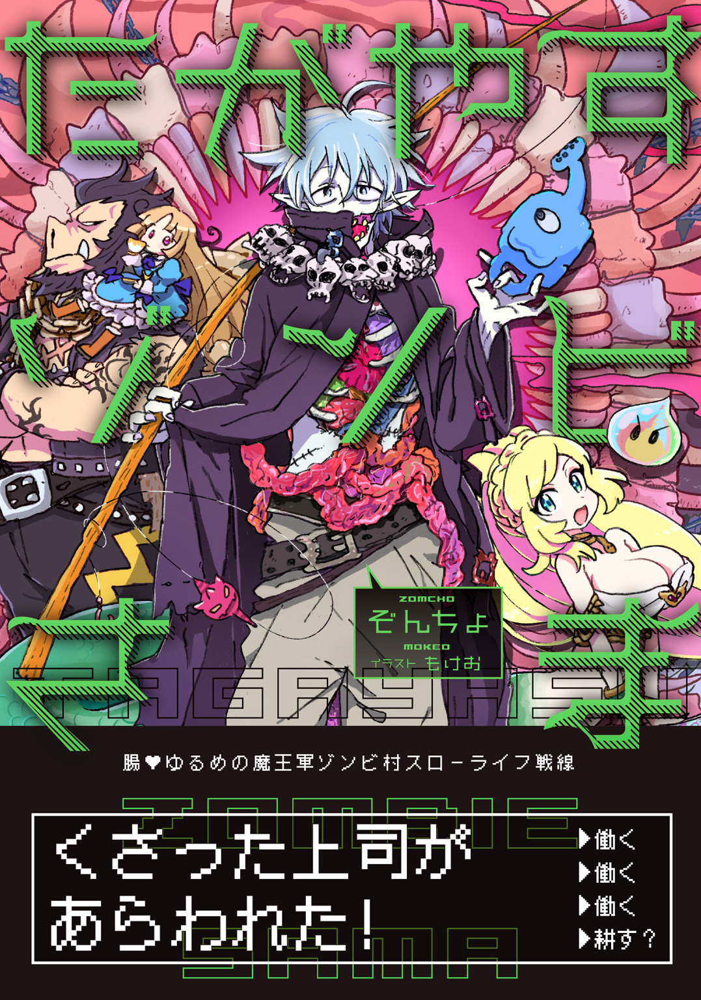
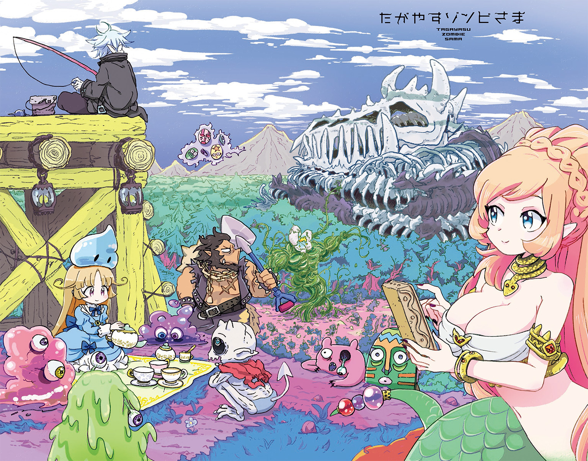
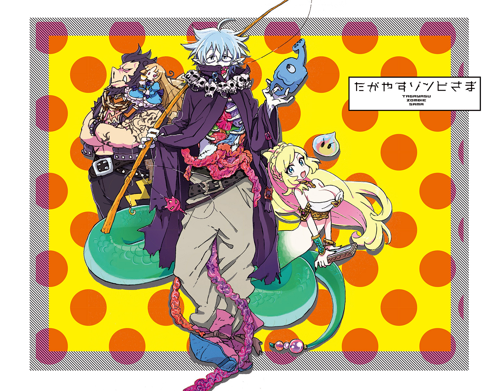
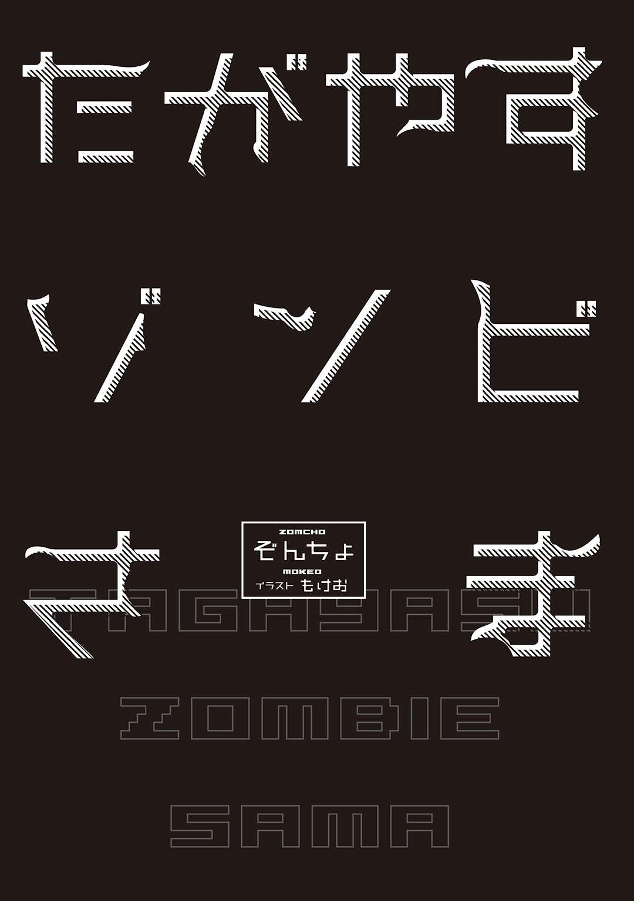
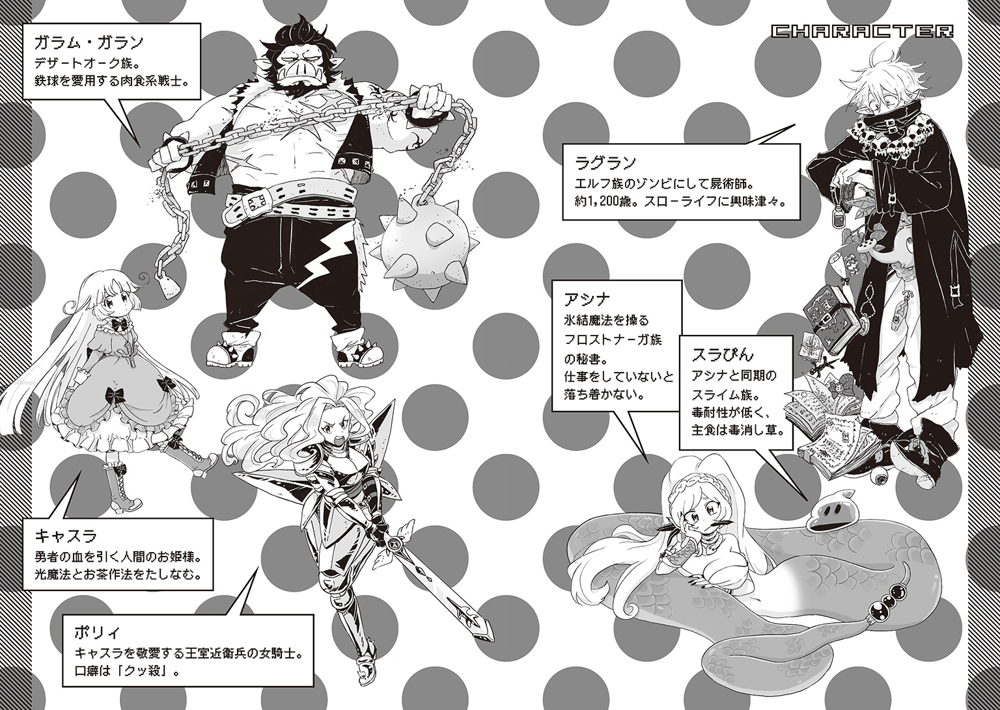
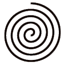
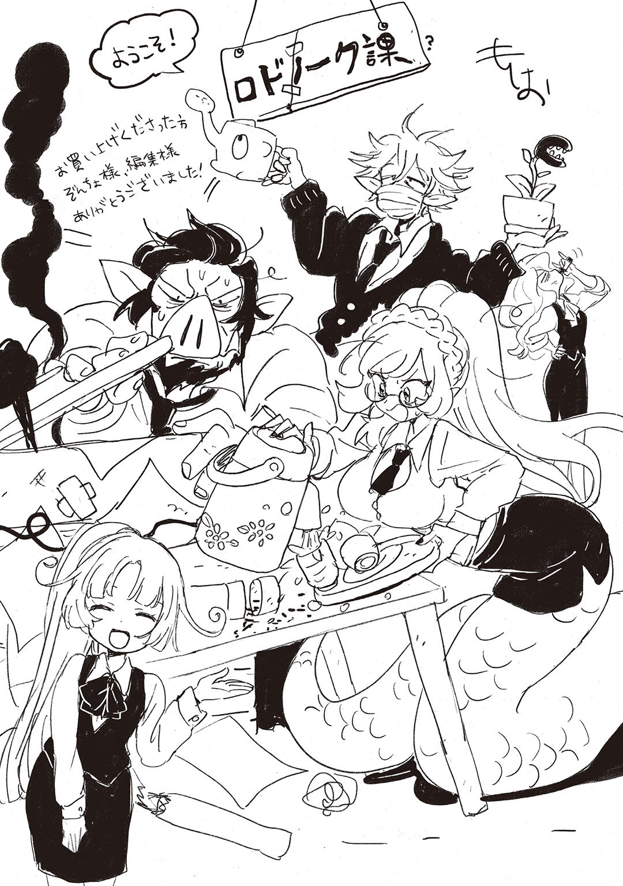

| たがやすゾンビさま | |
| ぞんちょ | |

この本は縦書きでレイアウトされています。
また、ご覧になる機種により、表示の差が認められることがあります。




CONTENTS
この作品はフィクションです。
実在の人物・団体・事件などにはいっさい関係ありません。
〔上司が過労で死んじゃいまして♪〕
そんなおっかない見出しを業務日誌という名の日記帳に書いてから、そろそろ二週間になるだろうか。両手で抱えた木の板にちらりと視線を落とし、女はため息をついた。
過労死した上司を悼んでのため息......ではない。断じてない。上司を思って口から出るものがあるとすれば、それは乾いた笑いだけだ。
『今月の給料全賭けドキドキクイーズ。我が輩の趣味を我が輩より多く言ってみろゲコ』
『そこに古い書類の山があるゲコ。明日までに全部破いておくゲコ』
『昨日の書類は全部破けたゲコ？ じゃあ今日はその書類を全部くっつけるゲコ』
『我が輩が働いてるのに、先に休むゲコって？ あり得ないゲコ。ここに子供用の計算問題集があるから、我が輩が良しと言うまで解き続けるゲコ』
『我が輩のパワハラが目に余る？ やれやれゲコね。今までのは茶番ゲコ。これからお見せするモノこそが本番。バリエーション豊富なハラスメントに、震え上がるがいいゲコ』
といった感じの上司が過労死したところで、心に憂いがあるはずもなく。
なんなら日記の見出しを〔上司が過労で死んじゃいまして♥〕にしようかと、二〇分ほど悩んだくらいだ。どうにか我慢したけど。〔死んじゃいまして♥〕じゃなくって〔死んじゃいまして♪〕で妥協したけど。
しかし、上司を思ってのため息......という点はあながち間違ってはいなかった。過労死した元上司に代わり、今日、新上司が派遣されてくるのだ。彼女が抱えた木の板には、丸味を帯びた文字でこう書かれていた。
〔ようこそ。ロドノーク湿原へ〕
............
背後を見やる。辺りには紫色の霧が立ち込めていて、自分の蛇尾すらよく見えない。馬車停留所の目印であるポールと旗がかろうじて確認できる程度だ。ここいらもロドノーク湿原の一部ではあるのだが、勤め先はこの濃霧を抜けた向こうにあった。
ロドノーク湿原は大陸の最西端に位置しており、所謂辺境にあたる。派遣といえば聞こえはいいが、こんな場所に送られるということはつまり――左遷だ。碌な魔族がやってくるとは思えなかった。
そんな懸念を裏づけるように、今朝、新上司の情報が短文で届いた。人事担当者が多忙だったのか、はたまた面倒臭かったのか、情報はえらく簡潔なものだったが。
〔屍術師であり、自分自身もゾンビ。名前はラグラン〕
加えて、特記事項にぽつりと以下の一文。
〔エンドレス過労死〕
凄く嫌な感じがした。屍術師は大丈夫。死体を操ったり、死者を蘇らせたりする屍術が得意な魔法使いのことだ。ゾンビも大丈夫。ロドノーク湿原で一緒に働いている仲間に、何体かゾンビがいるから。けれど特記事項のエンドレス過労死は......
エンドレス。エンドレス過労死。果てしなく続く、過労死。
手紙ではなく魔法の石版宛てに送られた短文だったため、筆圧などから担当者の感情を読み取ることもできない。けれども何故だか、腫れ物に触るようにタイプされた文字のように思われた。
何度も読み返すうちに〔過労死〕の文字が本当に〔過労死〕なのか不安になり、試しに自分で〔過労死〕と羊皮紙に書いてみた。間違いなく〔過労死〕だった。
そんなエンドレス過労死が、もうすぐここにやってくる。
（やだなぁ......会いたくないなぁ......）
ため息以外になにか口から出せと言われたら、今朝食べた草ぐらいしか出せそうにない。
こんなことなら、誰かに出迎えを付き添ってもらえばよかった――そう思ったとき。
バヒュィフョロボボボ......
馬の嘶きが聞こえた。ぬかるんだ地面をえぐる蹄の音も。
すぐに濃霧を搔き分けるようにして、巨大な馬車が現れた。黄ばんだ幌の側面をこちらに向けて急停車し、双頭の輓馬が蒸気のような鼻息を吹き出す。それもすぐに濃霧に混ざり、見えなくなった。
「............ほあぁ」
いきなりの登場に圧倒されて、思わず目を見開いてしまう。が、幌の中から座席の軋む音が聞こえ、慌てて表情を引きしめた。この中にいる。エンドレス過労死が。
と――
「こ――こンのゾンビ野郎！ ちんたら荷物まとめてんじゃねェ！」
御者台から上擦った声が響いた。続けてせかせかと後部へ歩く音。そして。
乗車口を覆っていた幌が勢いよく跳ね上がり、中から重箱のような物が飛び出してきた。
「え......ええっ!?」
咄嗟に木の板を捨てて受け止める。思ったより重い。危うくつんのめりそうになった。
「ンぐうぅ......っ！」
どうにか腰を入れたところで、改めて見やる。それは麻縄で縛られた年代物の本の束だった。しわの寄ったザラついた表紙に、見たこともない文字。おそらく、古代文字で記された呪文書の類か。魔法の石版の〔古代文字解読機能〕を使えば容易に読めるだろうが......
（......ちょっと待って。この手触りって）
表紙を指先で撫でる。似たような感触を、彼女はつい二週間前に味わっていた。
（そーだ。これって、倒れてた元上司を起こそうとして触ったときと同じ......）
元上司はカエル族だった。月二〇〇時間を越える残業に悲鳴をあげつつ、連日朝の五時まで魔族長会議に参加。休日もダンジョンの企画書執筆に取り組んでいた。すべては僻地から魔王城への栄転のために。しかし、彼の努力は報われることなく、ついには......
発見したときには既に体中の水分が抜けきって、カピカピに干涸らびていた。ちょうどこの古書の表紙みたいに。
（この本、ひょっとして......誰かの皮膚で作られてる......？ うわ、わわわっ！）
慌てて古書の束を手放し、彼女はにょろりと後退った。あっさりとぬかるみに落ちた古書が、泥の飛沫を散らす。陽に焼けたページにじんわりと茶色い染みが広がり、泥溜まりに波紋が描かれた。
（うぅぅ......やだなぁ。こんな気味の悪い呪文書を持ち歩いてるなんて......）
馬車から誰も降りてこないうちに帰ろうかと悩むが。
「なんで俺がこんな貧乏くじを......な、なに見てんだ！ さっさと降りろよッ！」
再度、御者であろう者の声が響いて――また馬車からなにか飛び出してきた。
本ではない。今度は男だ。銀色の髪に、長い耳。エルフだった。この男が――
（エンドレス過労死！）
まず目についたのは、手首と膝を丸めた妙ちくりんな姿勢。まるで首根っこをつかまれて、放り投げられた猫のような......（たぶん、ホントに首根っこをつかまれて放り投げられたんだと思う）それと、赤ん坊でも背負うみたいに背中に括りつけられた、年季の入った丸い卓袱台。鼻先まで襟が届く黒いロングコート。いくつもの頭蓋骨がぶらさげられたネックレス......
悪趣味の権化みたいな恰好をしたその男は、丸めていた四肢をシュッと伸ばし、目の前に降り立った。両手を左右に広げたポーズなんかを取りつつ。
どう反応したものか困っていると、彼の足下に革の鞄がばちゃりと叩きつけられた。
「こちとら明朝までに魔王城に戻んなきゃ賃金がパァだってのに......いいか！ 次また俺様の馬車に乗りやがったら、タダじゃおかねェからなッ！」
それが捨て台詞とばかりに、馬車は大きな弧を描いて転回すると、今来たばかりの道を引き返していった。すぐさま濃霧に吞まれ、馬の嘶きと鞭の音だけが耳に残る。
男は馬車が走り去った方向を一瞥してから、足下の鞄を拾い上げた。付いた泥をはたき落とし、再び濃霧へと視線を戻す。
「労働者に嫌われている自覚はありましたが、よもや荷物を投げ捨てられるほどとは」
どこか面白がるように、立てた襟の上から顎を撫でつけ、男は言葉を続ける。
「ここから魔王城まで普通の馬なら五日はかかるはず。急ぐ気持ちはわからなくもないですが、明朝までに帰るとなると......相当な負担を強いられるでしょうね」
果たして過労に倒れるのは御者か馬か。
男は小声で付け加えると、んふふ......と独特な笑い声を発した。
「......おや？」
ぎこちなく固まって眉をひそめるこちらの存在に、彼はやっと気づいたようだった。
「失礼」と一言添えて、手が差し出される。随分と細く、頼りなさそうな手だ。
「自己紹介がまだでしたね。腐導のラグランと申します。どうぞよろしく」
「あっ、はい」
エンドレス過労死って二つ名じゃなかったのか――そんな考えが頭を過ぎったが、おくびにも出さず手を返す。
「えっと、アシナっていいます。ご存知だとは思いますが、ロドノーク湿原の統治及び、ダンジョン建造を指揮するあなたを秘書として補佐するよう命じられており――って、アレ？」
男は――ラグランは握手を促すために手を差し出してきたのかと思ったが、どうやら違ったらしい。彼はこちらの手を無視して、地面の本を拾い上げた。
「むう。泥が染みている。いくつかのページが駄目になっていますね」
残念そうな口調だが、決してそんなことはないであろう無頓着な表情で、彼は本の束を揺すった。粘度の高そうな泥のしずくが辺りに飛び散る。
「う......すいません、受け止めたんですけど......うっかり落としちゃって」
「気にせずとも大丈夫ですよ。そんなに高価な本ではありませんから」
「はあ」
「ただ、表紙に人間のなめし皮を使い、ページにも赤子の産毛を織り込んであるから汚れづらい、という触れ込みだったのですが......古書店の主人に一杯食わされましたかね」
「ううぅ......やっぱり誰かの皮膚だったぁぁ......」
ひとしきり泥を落とし終えると、本の状態を確認するためか、彼は縄を解いてページを開いた。見たいわけでもないのに目の前で開かれたものだから、つい見てしまう。
果たしてどのような恐ろしい記述が記されているのか。怪しげな儀式の方法か。おどろおどろしい魔神の召喚方法か。それとも――
「......えっ」
開かれたそのページには、イラストが描かれていた。
〔鼻から脳みそを引きずり出す方法・図解入り〕だとか〔魔界一〇〇選・出会ったらだいたい死ねる昆虫図鑑〕だとか、そんな楽しくなさそうなイラストではなく――釣り人が池に糸を垂らしているイラストだった。盛大にパースが狂い、釣り人は首を一四〇度曲げてかなり無茶なカメラ目線になっている。が、それなりに楽しそうなイイ笑顔をしていた。
「あの、ラグラン......さん。その本って......屍術の呪文書とかじゃなかったんですか？」
「違いますよ。ご覧の通り、釣りのハウツー本です。ちなみにタイトルは〔バババンゴでもできる浅瀬釣り〕......暇になったらやってみたかったんですよね、釣り」
あっけらかんと彼は言った。続けて、束ねていた別の本を示し、
「ちなみにこちらは〔バババンゴでもできる茶葉栽培〕と〔バババンゴでもできるログハウス造り〕です」
バババンゴに託された過剰な期待はともかく、どうやらそれほどヤバい本ではなかったらしい。
（............いやぁ？）
浅瀬釣り？ 茶葉栽培？ ログハウス？ なんだろう。ロドノーク湿原にある水場は毒の沼地だけだ。ダンジョン建造が上手くいかず、過労で死者も出ている。そんな劣悪な職場に左遷されたというのに、彼は――スローライフを送ろうとしている......？
「さて。そろそろ案内をお願いできますか。魔王城から座っていただけとはいえ、悪路の馬車旅はなかなかに疲れました」
肩を回して関節を鳴らし、ラグランは返事も待たずに歩きだした。
「そうそう。道すがらで結構です」
が、すぐに立ち止まり、
「釣りのオススメスポット、教えていただけます？」
そう言って、顔の下半分を覆った襟越しにもわかる笑顔を、彼は浮かべた。
九の魔と、一なる人
かつて、大陸には一〇の勢力が存在した
大陸の覇権をめぐり、彼らは昼夜を問わず争いを続け
日ごと広がる戦場は死を親しき隣人とし
家々を燃やす炎の煌めきが夜の闇を侵食した
戦火の届かぬ地を求め、誰もが辺境へと逃れた
そんな折、とある平原にて
一匹の竜がひとりの女と出会う
竜は平原の空に架かる虹が好きだった
春が香る陽気が好きだった、平原の仲間たちが好きだった
そして、人間も好きになった
種族を越えた友情に感謝し、竜は彼女のことをこう呼んだ
――ズッ友、と
〔不気味な上司が来るんじゃないかってびくついてたけど、杞憂でした〕
業務日誌という名の日記帳にそんなことを書いてから、次の行に追記する。
〔来たのは変な上司でした〕
が、流石に失礼だと自省し、アシナは指でインクを揉み消した。子供っぽい仕草ではあるが、齢はまだ十九......たぶん、ギリギリセーフだ。
潰れて読めなくなった文字の代わりに〔今日の朝食、草〕と当たり障りのないことを書いたところで、アシナは手を止めた。
部屋の中を見回す。霧のせいで明かりが届かず、昼間だというのに薄暗い。湿度が高く、薄衣一枚という軽装にもかかわらず蒸し暑い。それもまた不快だった。裏でカビが繁殖しないように――というわけでもないが、家具の類は少ない。目につくのは小さめの簞笥と、変な上司が背負ってきた卓袱台ぐらいだ。
彼女は今、その卓袱台に業務日誌を広げていた。砲弾のような胸を卓上に預け、頰杖をつく恰好で。ちゃんとした椅子に座るよりも、床に座ったほうが尻尾を伸ばせて楽なのだ。
そう。尻尾だ。彼女に足はなく、腰から下は長い蛇の尾になっていた。ちょうど髪の先端が触れる腰骨のあたりから鱗が浮かびはじめている。透き通った肌が深緑色の鱗と交わるグラデーションはこのうえなく艶やかで、彼女のちょっとした自慢だった。
種族はフロストナーガ族。本来は北方の雪原に住まう種族であり、こんな西方で働く謂れはないのだが、魔族社会で生きていくには従順さが不可欠だ。配属場所が暑かろうが寒かろうが暗かろうが湿気ていようが、文句は言えないのである。彼女が得意とする氷結魔法で生み出す氷は、毒の沼ばかりで飲み水に困るロドノーク湿原において重宝されていた。
さらに部屋の奥に視線を巡らせる。そこには、真新しい玉座があった。
大陸の覇権を握る魔王の地位には及ばないものの、ロドノーク湿原の統治及び、ダンジョン建造の指揮を任された者のみが座ることを許された玉座。
彼女がいるのは、玉座の間だった。
もっとも、玉座があるということは、ここは城なのか？ と問われれば怪しくなる。玉座の間の壁は酷くデコボコしており、バルコニーには牙のような石柱がずらりとそびえている。霧がなければそこから広大な湿原を一望できるのだが、ロドノーク湿原に配属されてから半年、霧が途絶えたことは一度としてなかった。
開放的な造りではあるが、別に大工が創意工夫を炸裂させたわけではなく、そもそもここは建物ですらない。とぐろを巻いた巨大な生物の化石に家具を置き、扉をあてがい、玉座を設けて城としているだけなのだ。この部屋は頭蓋骨にあたる。生物の名前がなんであるかは、アシナも知らなかった。
そんな玉座も今は空席だ。上司のラグランが座っていてしかるべきなのだが、着任して以来、彼は頑なに座るのを拒んでいた。曰く『座ったら嚙まれます。ほら、手摺りが歯軋りしているでしょう』だの『幻覚？ 失礼な。ボクは正常です』だの『ところでこの部屋の天井、回転しながら落ちてきてません？』だのと、よくわからないことを言って、今日も朝からふらっといなくなったきり顔を見ていない。
「もおぉ......そろそろまじめに働いてくれないと、私だって困るのに......」
元上司は過労で亡くなったわけだが、業務の内容には〔ダンジョン建造の指揮〕も含まれていた。つまり、ダンジョン建造に尽力する魔物たちとて、倒れてもおかしくないほど働いていたのだ。それが急に作業を止められては、落ち着かない者も出るだろう。アシナもそうした者のひとりだった。
「早く戻ってこないかなー」
バルコニーに向けてぽつりと呟いたとき。
ぺったん......ぺったん......と粘つく音が耳に届いた。入口からだ。
ぺたんっ！
ぺたぺた音の主は、扉のすぐ外で力強く踏み込んだようだった。体当たりされた扉が勢いよく開き、一体の魔物が飛び込んできた。
薄暗さをものともせず輝く、青く透き通ったゼリー質の体に、タマネギみたいなシルエット。大陸でもっともよく知られている魔物、スライム族だった。
名はスラぴん。一五歳になると出席が義務づけられている魔王城での就業研修で同じグループになり、以来どこに配属されるときも同じ――同僚を越えた、所謂ズッ友だ。
「どうだった？ エンドレス過労死、いた？」
「ピッ！ ピピッピィピピッ！ ピィ――ッ！」
尋ねると、スラぴんはピーピーとわめき返してきた。簡単な意思疎通ならボディランゲージでどうにかなるのだが、今回は難しそうだ。ただ事ではない。いつもは愛敬のある丸い目が、焦燥に吊り上がっていた。
「っと、っと......ちょっと待ってね」
アシナはばたばたと両手を振り回すようにしてスラぴんを抑えると、卓袱台に置いていた魔法の石版を手に取った。慣れた手付きで〔他種族言語通訳機能〕を起動させる。
すぐさま石版の盤面に、訳されたスライム語が映った。
〔※※※※の※※※を西の毒沼のほとりで見つけたッピ！〕
※※※※とはつまり、汚い罵りであったり、下品すぎて文字では表せないということだ。果たしてスラぴんがラグランのことをなんと呼んでいるのか気になるところではあるが、アシナは膨れ上がる好奇心を静め、まずは功労者である彼のぷよぷよした頭を撫でた。
気持ちよさそうに表情を弛緩させたスラぴんを肩に載せ、
「西の毒沼かぁ......やだなぁ。あそこ、霧が濃いのに......」
本日何度目かわからないため息をつき、アシナは玉座の間を後にした。
今朝からサボり通しの上司に、仕事をしてもらうために。
毒沼のほとりにラグランの姿はなく、彼の釣り竿が岩場に転がっているだけだった。釣り針には餌――だろうか。ぶよぶよした謎の肉塊が刺さり、毒沼のしずくを滴らせていた。
ひょっとして沼に落ちたのかと覗き込んでみるが、濁りがきつく、水中の様子はまったくわからなかった。
どうしたものか首を傾げる。と、肩のスラぴんがぽよんと跳ねた。なにか言いたげな跳ね方だった。彼の視線を追うと――そこに、いた。ラグランだ。
「............なにあれ」
毒沼のど真ん中――長円型の板の上で腰を落とし、両手を広げている。なにやらバランスを取っているようだが......
あまり息を吸いたくないが、湖上で珍妙な舞いを見せているラグランとは結構な距離がある。やむを得ず、アシナは大声で叫んだ。
「ラグランさ～ん！ なにしてるんですか～!?」
「決まっているでしょう。波に乗っているのです」
大声を出しているわけでもないのに、ラグランの声は不思議とよく聞こえた。
「波なんて出てませんけどぉ!?」
困惑をこめて叫ぶ。湖面は凪そのものだった。
「ごもっとも。しかし、かつては波乗りのラグランとも呼ばれていたこのボクです。波がなくたって波ぐらい乗ってみせますよ」
「だいぶ無茶を言ってるような......？」
唇の下に指を添えて、またも首を傾げていると――ようやくラグランが動きだした。波が立っていないため、毒沼の湖面を足で蹴ってこちらに戻ろうとしている。
叫ばなくても声が届く距離になり、アシナは改めて問いかけた。
「でも、なんで波乗りなんてしてるんですか？ 釣りに夢中だったはずじゃあ？」
「ええ。ですが一向にヌシが釣れず、ウナギの稚魚らしき小物しかかからなくてですね。少し気分転換をしたくなり、こうやって波とひとつになっているわけです」
「ウナギってこんなところにいます......？ ともかく、何回も言ってるじゃないですか。ロドノーク湿原にはヌシどころか、魚すらいませんってば。その稚魚ってのも、きっと腐った枝かなにかを見間違えたんですよ。どの沼地を見たって、全部毒の沼なんですもん」
「わかりませんよ。毒の世界でのみ生きられる、とんでもない大物が潜んでいるかもしれませんし。その可能性が零でない限り、ボクが竿をしまう理由にはなりません」
四日前から釣りを始めた初心者がなにを偉そうに......そう思いはしたが口には出さず（顔には出したけど）アシナはちらりと、転がっている竿を見やった。
「......ちなみに、餌に使ってるぶよぶよの気持ち悪いお肉って、一体なんですか？」
「ボクの膵臓です。ご心配いただかなくとも、数日すれば再生しますので」
「............」
げんなりと肩を落としている間に、ようやくラグランが岸辺に到着した。
エルフである彼の容姿は、ゾンビとは思えないほど端麗だ。じっと動かなければ、完璧な美を表現するために石工が彫った作品のひとつだと思う者もいるだろう。
一二〇〇歳という年齢を感じさせない、二〇代の後半らしき落ち着きのある顔立ち。青味がかった灰色の髪は絹糸のように滑らかで、ピンとして長い耳が横に伸びている。眉も目も鼻も、模範たるべくそこにある。まるで作り物のように。
もっとも、端整な顔立ちが見てとれるのは、あくまで鼻から上だけだ。鼻下から首元にかけて、覆い隠すように外套の襟が立てられている。首から提げられた七つの髑髏もまた、悪趣味な恰好に拍車をかけていた。
そんな数少ない露出部分のひとつである目を、彼は岩場に着くなり、パチパチと瞬かせた。
「おや、皆さんお揃いで。どうかしましたか」
霧のせいでラグランからは見えづらかったようだが、彼の言葉通り、ロドノーク湿原の全従業員がその場に揃っていた。
アシナにスラぴん、そして、液状スライムのバブリースライム族に、チューリップのつぼみに似た頭部を持つ食人植物マンイーター族。複数の顔が集まって浮遊しているフェイススピリッツ族や、装飾であり盾ともなる仮面をつけたシャーマン族など、完全ではないものの毒に多少の耐性を持つ魔物に加え、最多を占めているのはアンデッド族――通称〔腐ってる死体〕と呼ばれるゾンビたち。彼らがロドノーク湿原のダンジョン建造を任されたメンバーだった。
「なに吞気に言ってるんですか。私たちは、ラグランさんを連れ戻すために集まったんですっ！ さーさー、今日こそ馬車馬の如く汗水垂らして働いてもらいますからね！」
「ははあ。抗議のために働かないストライキなら耳にしたことがありますが、働くための抗議とは。皆さんなかなか、ブラックな気質が体に染み入っているようですね」
「やっ......やなこと言わないでください！ 私たちだって働きたくて働いてるんじゃないんですっ！ これ以上サボってたら、ダンジョン監査官のオチェルガンラさんに瞑想室送りにされちゃいますよ!?」
瞑想室送りとは、魔王城で行われている〔使えない部下をいびる方法〕のひとつだ。なにもない真っ暗な瞑想室に押し込め、そこでひたすら瞑想する、という仕事を与えるのである。もちろん居眠りでもしようものなら、罰として即刻クビが（比喩ではなく）飛ぶ。
「オチェルガンラさんとて、なにもこんな所まで監査には来ないでしょう。そもそも、過労で亡くなった前任の方には申し訳ないのですが、ロドノーク湿原のダンジョン建造計画自体、そこまで重要度が高い案件でもありませんし」
「......どーいうことですか？」
「どうせ説明するなら地図を見ていただいたほうが早いでしょう。アシナさん、たしかジャルパッドをお持ちでしたよね。貸していただけます？」
「はあ」
ラグランに促され、魔法の石版――正式名称、魔石ジャルパッドを手渡す。
「んふふ。こんな辺境まで魔力を行き渡らせるとは。流石はジャルド様」
ラグランは楽しげに顎を撫でつけると、ジャルパッドに指を走らせた。
魔石ジャルパッド――魔王ジャルドの魔力を媒介に、遠く離れた者とも会話ができる石版だ。他にも焚書された古文書の再読や、他種族の言語の自動通訳。魔法を使用するための簡易解説まで見られる、まさに万能と賞するに相応しいアイテムだった。
「ではまず、大陸の地図を......開いて......」
意気揚々と受け取り、ジャルパッドを操作するラグランだが、すぐに困った顔になり、盤面に人差し指で『の』の字を書きはじめた。
その様子にアシナはたっぷり数秒、形のいい眉を寄せて呆れた顔をした。
「......ラグランさん。ジャルパッドの向きが反対です」
「おや、やはりそうでしたか。最新型の操作は慣れなくって......これで大丈夫ですか？」
「違います。反対なのは上下じゃなくって、裏と表が......もうっ、貸してください。私が操作しますから！」
ラグランからジャルパッドをぶん取ると、アシナは迷うことなく盤面に触れていった。
「地図も出せないなんて......はい。表示しましたよー」
「流石です」
むくれた表情のアシナが操作したジャルパッドには、虫に食われた菱形のような図形が映し出されていた。これこそが魔王ジャルドが支配する、ストイライク大陸の全体図だ。
「さてさて。それでは説明していきましょうか。ボクたちがいるロドノーク湿原はここ。大陸の最西端です。魔王城はこのあたりですね」
全員の目に触れるよう、やや腕を掲げて、ラグランがジャルパッドの盤面を指でつついていく。大陸の最西端と北部に、円錐型の淡い光が灯った。
「そして、人間たちが拠点とするヴィング高地が......このあたり。大陸の最南端です」
三箇所目の発光。その光が円を描き、ある程度の広さを縁取っていく。
「ヴィング高地は攻めるに難く守るに易い高台です。しかし、その領土は決して広くはありません。過剰に見積もっても大陸の二割といったところでしょう。その限られた領土の中に、人間たちの王国があり、営みのすべてが詰まっています」
いつの間にか魔物たちは半円の車座になり、ラグランの説明に聞き入っていた。アシナもまた相槌を打つでもなく、真剣な眼差しで彼の指先を見つめている。
「人間たちは徒党を組み、南のヴィング高地から北の魔王城を目指して侵攻を繰り返しているわけです。西のロドノーク湿原に足を向けることはまずありません。仮に来ようとしても、大陸の南西は広く深い原生林。途中で力尽きます。つまり――」
間を持たせるように、彼は一度言葉を止めて。
全員の意識が集中するのを待ち、続けた。
「ロドノーク湿原にダンジョンを建てたところで、人間たちは誰も来ないわけです」
その一言に、魔物たちは全員硬直した。まるで電撃魔法でも浴びたかのように。
バブリースライムはバブるのをやめて従来の固形スライムに戻りつつあったし、マンイーターはあんぐりと口を開けて、開花したラフレシアのような面相になっていた。フェイススピリッツは他の顔と相談しようとグルグル回りだして止まらなくなり、シャーマンはなにがどうしてそうなったのか、全員の腰ミノがずり落ちて――
ともかく、各々が各々なりのショックを受けていた。
「そうでなくともロドノーク湿原は霧に覆われた隠れ里。仮に人間たちが来たところで、霧の中にダンジョンがあろうとは思うはずもなく」
「じゃっ――じゃあ」
強張る口を無理矢理こじ開けて、アシナは尋ねた。
「私たちは、なんのために......ここで働いてるんですか？」
「............」
彼女の顔を一瞥し、ラグランはしばし黙して――こめかみを搔いた。答えあぐねたのか、それとも単に痒かったのか判断はつかなかったが。
「魔界には......」
ゆるりと手を下ろし、彼は続けた。
「札の河原と呼ばれる刑場があるそうです。そこではカードを立てかけ合わせてタワーを作らされるのだとか。しかし、常に障気が吹き荒れているせいで、決してタワーは完成しない。けれど作業は強いられる。受刑者が精根尽き果てて倒れるまで、ね」
差し出されたジャルパッドを受け取りながら、しかしアシナは彼の顔を見ていなかった。視線を落とし、考え込んで――彼が言わんとしていることに気づき、息を吞んだ。
「――ここも......そうだって言いたいんですか？」
「いかにも。暗にそう伝えるべく例として出してみたのですが」
「そ、そんなわけありませんっ！ そんなの瞑想室送りと変わらないじゃないですか！」
「変わりませんとも」
腹立たしいぐらいあっさりと、彼は首肯した。
「ここのダンジョン建造計画は従業員を取っ替え引っ替えしつつ、かれこれ二〇〇年ほど続いていますが......作業は一向に進まず、穴を掘っては埋めさせるのを繰り返すばかり。やっぱり地中式でなく砦式ダンジョンを建てよう、とかなんとか言ってね」
「......確かに二か月前、企画がポシャって埋め立てたばっかですけど......今度こそ地中式で決まり！ マストだから！ って魔族長会議でニルロカンテ議長が言ってたんです！ だから最近、また皆で穴を掘りはじめたんですから！」
「あの方の発言はその日の気分でころころ変わりますからね。方針も決まらぬうちから穴を掘ったところで、そんなもの落とし穴にしかならないのでは？ ダンジョンの企画書も、まだ通っていないそうですし」
「それを通すのがラグランさんの仕事じゃないですかっ!!」
ラグランに詰め寄り、彼の顔を睨め上げる。どこか眠たげで、覇気に欠けた目だ。
唇を嚙みしめ、アシナは勢いよく身を翻した。突然の遠心力に、肩のスラぴんが悲鳴をあげる。
「スミスさん！ スミスさんからも、なにかガツンと言ってあげてください！」
アシナがダンスでも申し込むように手を差しのべた先――そして、一同の視線の先には――一体の腐ってる死体がいた。
腫れたまぶたが片目を塞ぎ、もう一方の目は眼窩からこぼれて、視神経の束を支えに揺れている。所々穴の空いた布の服に、右手には古風なトンカチ。そんなゾンビのスミスが。
「彼は？」
ラグランの問いに、アシナは胸を張って答えた。
「彼こそロドノーク湿原に百数十年勤める最古参！ 書類偽造により新卒から定年までを繰り返すことおおよそ四回！ 毎回就業祝いと退職金を申請しつつ、且つゾンビな体を活かして労災保険と傷病手当まで欲張るも、すべて歴代の上司にちょろまかされてきた薄幸の不正受給者、スミスさんです！」
「なるほど。保険審査官には黙っておきましょう」
ラグランも寛容に頷き、スミス（彼はゾンビになる前、名の通った鍛冶師だったらしい）から一言あるかと耳を傾けるが――
彼はなにも言わなかった。ぷらぷらと眼球を揺らしているだけだ。けれど二分ほどして、
「ぼぁ」
スミスは短く、声をあげた。
「......なんて言ったんだろ......」
なにか他に言いたいことはあるかと、さらに二分待ってみるが、それっきりだった。
「ラグランさん。同じゾンビ同士なんですから、スミスさんがなんて言ったか分かったんじゃないですか？」
「もちろん。彼はこう言いました。眼球の裏側が猛烈痒いと」
「眼球の......裏ぁ？」
怪訝そうに眉根を寄せる。が、ゾンビ同士通じ合うものがあったのだろう。アシナは彼の通訳に従い、スミスのぷらりと揺れている眼球の裏を爪で搔いてみた。
途端、スミスはビクリと体を震わせ、のそりと移動してラグランの後ろに隠れた。人見知りの子供のように顔だけ出し、眼球不在の眼窩をじぃーっとこちらに向けてくる。
なんだろう。まるで、とても恥ずかしい部分をいきなり触られて、照れたような......
「まあ、勘ですけど」
「そーいうのは噓って言うんですっ！」
叫び返し、息を整えるように吐息をもらす。
アシナは諦めてジャルパッドに頼ることにして、ゾンビ語の通訳文に目を通した。
「......ラグランさん......全っっっ然、違うじゃないですか！」
投げつけんばかりの勢いでジャルパッドを突きつける。そこには。
〔虹は出とるかのぅ〕
短く、そう書かれていた。
「虹......？」
顎に手を添え、ラグランが目を細める。
虹。なにかの隠語ではなく、空にかかる虹のことだ。
「............」
アシナは空を仰いだ。視界に広がるのは、一面の霧だけ。虹はおろか、雲の一片すら見えはしない。同様にラグランも空を見上げ、
「スミスさん......でしたか。残念ながら、虹は出ていません」
スミスの垂れた眼球を指でつまみ、瞳孔を空へと向けた。スミスの口から無念そうな唸り声が響く。
「彼は、虹になにか思い入れでも？」
眼球を眼窩に押し込みながら、ラグランが尋ねてくる。
アシナは眉間に力をこめて、少しだけ言葉に詰まってから、独りごちるように呟いた。
「スミスさんがここで働きはじめたとき、友達がいたそうなんです。けど、その友達の顔が思い出せないらしくて。ほら、脳も腐って......ああ、や、百数十年も前ですから」
スミスの顔を伺ってから、続ける。
「唯一覚えてるのが、友達は虹が大好きだったこと、なんですって。だからせめて、友達が好きだった虹を見たいなぁ、っていつも言ってて」
「虹を見ればお友達のことも思い出せる、と？」
「そこまではちょっと......けど、虹を見てみたいって気持ちは、わかります。私もここで働いてから、虹どころかお日様すら見てないですもん」
最後のほうは呟くよりもさらに小さく、囁くような声音で付け加えた。
「ふむ。虹......虹ですか」
思うところでもあったのか、ラグランが腕を組み、目を閉じる。
「......？ どうかしました？」
「いえね」
彼は人差し指をピッと立てて。
「虹をお見せすることはできませんが、虹の色ならお見せできるかと思いまして」
そう言うと彼はこちらに背を向け、喉元をまさぐった。どうやら襟の留め金を外しているようだが――彼は外套の内側に手を入れ、荒縄のようなものを引っ張り出した。やけにデロデロでねばねばと糸をひいている。けれど背中越しなせいで、よく見えない。なにであるか尋ねるよりも、彼がそれを毒沼の上で絞るほうが早かった。雑巾でも絞るように、力一杯。
途端、荒縄から黄色い粘液が染み出し、ボタボタと滴った。
「......えっと、ラグランさん。その太い紐みたいなのって......」
「ボクの大腸です。絞るといい具合に内臓脂肪が取れます」
ひくりと。頰が引き攣るのをアシナは感じた。
「――と、こんなところですかね」
最後に軽く振ってから、ラグランは大腸を腹腔に戻し、襟の留め金を閉じた。
「さあ。どうぞ湖面をご覧になってください」
振り向いた彼にそう勧められたところで、見たいとは微塵も思わなかったが、魔族社会に必要なのは従順さである。恐る恐る、毒の沼を覗き込むと――
「......おっ？」
紫色の湖面に、七色の膜が浮いていた。ぎとぎとと濁った、汚い七色が。
「油膜です。この霧では本物の虹を目にするのは困難でしょうが、このぐらいならば」
「い、いやぁ......これは虹とはだぁぁいぶ違うと思うんですけど......」
「そうですか？ スミスさんは喜んでいるようですが」
「スミスさんっ!?」
彼の言葉通り、湖面を覗き込んだスミスは歓喜にうめいていた。ジャルパッドで訳すまでもない。両頰に手を添え、感極まった表情になっている。
他の魔物たちも湖面に近寄り、ぎとぎとの虹もどきに感嘆の声をあげた。油膜を指差し、肘で脇腹をつつき合っている。少女同士であれば微笑ましい光景だが、残念ながらはしゃいでいるのはビンテージものの腐ってる死体だ。
「あーっと......いや、虹じゃないけど......いい、のかなぁ？」
納得はいかなかったが、まあ、いいか――と。
彼らが喜ぶ姿にアシナは息をついた。ため息よりも、少しだけ温かい息を。
「喜んでいただけたようでなによりです。部下の願いを叶えるのも上司の務めですからね。ボクは働き者です。さあ褒め称えてください。ボクは働き者で、且つ良い上司です」
「............」
褒め称える気にはならず、沈黙を返す。彼はそれでも構わないようだったが。
「とまれ、お友達との思い出までは蘇らなかったようですね。どうせなら本物の虹をお見せしたかったのですが、さしものボクでも霧を晴らすなんて無理ですし......原生林を目指して、霧を抜ければあるいは――っと」
ラグランがこちらの――いや。肩のスラぴんを指差してくる。
「それはさておき、そちらのスライムさん、なにやらぐったりして色も変わっているようですが......大丈夫ですか？」
「へっ？」
見れば、確かにスラぴんの色が綺麗な青から、濁った紫色へと変わりつつあった。タマネギ型の体型も、バブリースライムかと見紛うほどヘロヘロになっている。
「――――ッ!!」
声にならない悲鳴をあげ、アシナは叫んだ。
「じ、じじっ、時間切れですっ！ 毒耐性が完全でない従業員の皆さんは、至急屋内に退避してくださいいぃぃ――ッ！」
警告を発しながら、自身もまた脱兎の如く、うねうねと沼から離れていく。
魔物たちの動きも機敏だった。すぐさま踵を返し、総員が走って――あるいは飛んで、城がある方角へと逃げていく。
「.........？」
後に残されたラグランは首を傾げ、答えを求めるようにスミスを見やるが。
彼は虚空を――原生林の方向を見つめて、ぼーっとしているだけだった。
日をまたぎ、玉座の間にて。
卓袱台にこんもりと盛られた草を、アシナは黙々と口に運んでいた。卓袱台に乗っているのは草だけではなく、スラぴんもだ。彼も草の山に顔を突っ込み、もそもそと咀嚼している。不作法極まりないが、叱ったところで改善されはしないだろう。
胃に重みを感じたところで、アシナは手を止め、
「ダンジョンを造っても、人間たちは誰も来ない......かぁ」
昨日のラグランの言葉を反芻した。それと同時に思い出す。ロドノーク湿原で働くことに意味はなく、合理性に欠けた作業をやらされているだけなのでは、という認めたくない現実を。
頭の中にでんと居座る鬱々とした思いに、アシナはため息をついた。
耳聡く聞きつけたスラぴんが草の山から顔を出し、彼女を見上げる。
「......ん。ごめん、なんでもないから」
誤魔化すような微笑みを浮かべ、スラぴんの頭頂部を指でつつく。弛んだズッ友の顔を見ていると心が落ち着くが、気分は晴れない。事実、思い当たる節がいくつかあった。
いくら提出しても許可されないダンジョン企画書に、増援という名目で送られてくるなにかしらの失敗をやらかした魔物たち。魔王城から様子を見に来る気配のない監査職に、あまりにも劣悪な労働環境。
特に最後の労働環境がくせ者だった。
ロドノーク湿原を覆う霧は、毒の霧だ。
過去、何体もの魔物が毒で倒れていった。まるで端から毒で処分するのが目的であるかのように、治療されることなく。滞りなく。バタバタと。
いつしかロドノーク湿原で働いているのは、毒に耐性を持つ種族と、毒消し草を常食しているアシナとスラぴんだけになっていた。
炭鉱のカナリアのような役回りをスラぴんが買って出てくれたおかげで、霧の濃い場所に出向くこともできるが、そうでなければ私も――
（......ううん。そんなのないない）
かぶりを振って嫌な想像を払ったところで、ふと気づく。
上司がどこに行ったのか、今日は把握していない。
スラぴんに尋ねてみると、なにか知っているようだった。
〔※※の※※※なら『今日は気分転換に茶葉でも植えることにしましょう』って、枯れ畑に向かったッピ〕
ラグランの愉快なあだ名が更新されたらしく、ジャルパッドの※の数が変わっている。そもそも、毎日が童謡の世界みたくご機嫌なラグランに、今さら転換する気分があるのかどうか、疑問ではあったが。
「枯れ畑かー」
城の裏手にある放置された畑のことだ。アシナが派遣されてきたときから荒れ果てていたため、元はなにを栽培していたのかは不明だが......スミスに聞けばわかるだろうか。
枯れ畑の元が云々なんて、いちいち確認するほどのことでもないが、ラグランがいるかどうかは確認しておきたかった。バルコニーから城の裏手を覗いてみる――と、霧のせいで霞んでいるが、しゃがみ込んでいるラグランの姿が見えた。
「こんな霧の中で、お茶っ葉が育つとは思えないけど......」
目の届く範囲にいてくれるなら、まぁ、大丈夫だろう。
アシナはなにも言わないことにした。
このときまでは、彼のスローライフも許容できたのだ。仕事をしないという点に目をつぶりさえすれば、誰にも迷惑はかけていないのだから。
そう思っていた。
大陸南西部を覆う巨大な森に特に名前はない。統治する者もおらず、名前をつける意味がないからだ。魔族も人類も、ただ等しく原生林と呼んでいる。
なにもないつまらない森だが、それでも歩く者はいるらしい。
「――と、およそ一〇〇〇年前、勇者ラミス様が魔王を倒したことにより、ストイライク大陸に平和が訪れたのです。しかし悲しいかな、彼女の逝去とともに台頭しはじめた次代の魔王によって、人間が興した領地は魔物たちに奪われていったわけですが――」
ため息を交えた老人の説明を聞きながら、鬱蒼とした森を歩き続けること一週間。ようやく開けた視界に、人間たちは歓声をあげた。
「ややっ。これは......見えてきました、見えてきましたなぁ！」
「ほう。ここがあの有名な」
「フヒ......ヒィ......もう膝が......膝が十五度ぐらいしか曲がりませんぞ......」
様々な思いを口にする面々へと向かい、先頭の老人が振り返った。額に浮かんだ大量の汗を飛ばすべく、手にした旗をうちわのように振り扇ぐ。
「はい、皆さん。ヴィング高地からの長旅、お疲れ様でした。こちらが目的地のひとつ、ロドノーク湿原です」
毛の薄くなった頭を懸命に冷ます旗には、短く一行、こう書かれている。
〔勇者ラミスの旅路を巡ろうツアー〕と。
後ろに並ぶ男たち――ツアーの参加者をひとりずつ数えて、先頭の老人――ガイドは気の好い笑顔を浮かべた。
「皆さん揃っておりますな。結構結構。さて、歴史書でご存知でしょうが......遥か昔、この地はご覧のような湿原ではなく、巨大なドラゴンが治める平原が広がっていたそうで。そのドラゴンを討つべく、ラミス様が立ち上がられたのです。が、まともにぶつかれば苦戦は必至。故に、ラミス様はとっておきの策を用いられました」
「策？」
「だまし討ちですな。まずはドラゴンとの対話を試みて、偽りの友情を育み、油断しきったところを一刀両断にした、と。しかし、敵は生命力に秀でたドラゴン。ラミス様は念には念を入れ、毒を撒かれたのです」
参加者らに背を向けて、眼前に立ち込める紫色の霧を旗で指す。
「毒はドラゴンの息の根を止めるのみならず、草木を枯らし、土壌を腐らせ、平原を生命の存在しない湿原へと変貌させました。その毒は未だ消えず、こうして霧となり残っているのだとか。霧の奥にはドラゴンの死骸が残っているとも聞きますが......眉唾ものですな」
「ほほう。大地を殺すほどの猛毒を、用心のために使うとは......さすがはラミス様。勇者が十八番とする友情・努力・勝利戦法を確立されたお方だけのことはある」
「偽りの友情によって敵を知り、謀略の努力を尽くせば、揺るがぬ勝利が訪れる、ですな。フッヒッヒ」
薄ら笑う参加者らに頷きかけ、老ガイドは背中のリュックを揺すってみせた。
「さて。昔話はここまでにして、まずは皆さんお待ちかね、お弁当といきましょうか」
その言葉に、参加者らの目がぎらりと光り――次の瞬間には、老ガイドのリュック目がけて全員が飛びかかっていた。我先に弁当を手にしようと、互いに押し合い圧し合い、爪を立て、唾を飛ばす。飢えているわけではない。食事は朝、昼、晩と、支給されている。彼らはただ、誰かに先を越されるのが嫌なのだ。森の中からこんな調子だったため、老ガイドも動じることなく、揺さぶられるがままに頭をガクガクさせていた。
が、唐突に参加者らの動きが止まった。弁当のことを忘れて、老ガイドの後ろを凝視している。怪訝に思った老ガイドが振り返ると。
「......なっ......」
まるでなにかに吸い込まれるように、毒の霧が薄れていくではないか。
干潮時に潮だまりが残る岩場のように、じっとり湿った地面が露わになり――
思わず息を吞む。薄れた霧の中から、人らしき姿をしたなにかが現れた。人らしき姿、ではあるが、人ではない。僅かな腐臭が風に乗って鼻をつく。
腐ってる死体だ。
土気色の肌に、紫色の血管が幾本も浮かんでいる。装備品らしきトンカチは赤茶けた錆に覆われ、虫に食われた布の服はかろうじて肩に引っかかっている有り様だ。謎の粘液が皮膚をぬめらせ、なめくじが這った跡を思わせる。吐き気を催す、なんとも醜悪な姿。
腐ってる死体は男たちの存在に気づいたのか、一瞬、驚いた表情を浮かべたものの、すぐに黒ずんだ歯を剝き出しにして歩み寄ってきた。黄濁した胆汁が垂れる口の奥から、獣のような唸り声をあげて。
「なんということだ......」
愕然とし、老ガイドは旗を取り落としそうになった――が、寸前で力強く握り直し、食いしばった歯の隙間からうめく。
「勇者である皆さんの聖地に、このような魔物が......っ！ これは由々しき事態です！ 聖地を汚す魔物を許すわけにはいかんでしょう。さあ、剣を取って！」
一同を振り返り、老ガイドが叫ぶ。が。
弁当をめぐって争っていた意気はどこへ行ったのか。参加者ら――勇者たちは一様に後ろに下がってくつろいでいた。昼寝の体勢に入っている者までいる。
「ぬうっ！」
なんというやる気のなさか。必ず勝てる戦い以外、興味を持たない――実に勇者らしい。
やむなく老ガイド自ら、旗に仕込んだ小刀で腐ってる死体を切りつけた。一刀。たった一刀だ。それだけで魔物は地に伏した。なんというやる気のなさ――いや、弱さか。
「おっ。お見事。お見事ですぞー。グッジョーブ」
「............」
後ろから乾いた拍手が送られた。刹那。
タタラッタッタラッタ～♪
突然、老ガイドの下腹あたりから軽快なファンファーレが流れた。
ぴたりと固まる勇者たち。
老ガイドも目を見開いていた。湧き上がる高揚感。長旅で溜まっていた疲労が一瞬で消し飛び、腰を苛んでいた痛みまでもが噓のように消えていく。冷水を浴びたように意識が研ぎ澄まされ、老眼のせいで霞んでいた視界が隅々まではっきり見通せる。全能に近づいた錯覚すら覚えるほど高まる力に、知らず、老ガイドの体は震えていた。
レベルが、上がったのだ。
「なんと......そんな......こんなに弱いのを一体仕留めたぐらいで......」
小刀を握る手を呆然と見つめ、老ガイドが呟く――と、もぞりと動くものがあった。
倒したはずの腐ってる死体が、トンカチを握りしめ、起き上がろうとしている。
「......っつ！」
すかさず切り込む。
もたげた頭部は再び沈み、腐ってる死体の手からぽとりと、トンカチが落ちた。
「また一撃、ですか......こんなに弱いのに......どえらい経験値ですなっ!?」
驚く老ガイドの足下で、腐ってる死体が身をよじる。底なしの体力を持っているようだ。やはり高レベルの魔物であることは間違いなさそうだが、この弱さは一体――
だが、逡巡の時間はそこまでだった。
くつろいでいた勇者たちも、腐ってる死体の異常な経験値に気づいたのだ。弁当をめぐるのと同じ――いや、それ以上の殺気をみなぎらせ、勇者たちは老ガイドを押し退けた。
「魔物退治なら拙者に任せられぃ！ 他の方々は後方で援護をっ！」
「ほうっ!? 我が輩を差し置いて、経験値を独り占めするおつもりで!?」
「フヒ――ッ！ ロートルの分際でいい根性ですなぁ！ 友情を育みますぞォ!?」
ある者は剣で、ある者はブーツの踵で。勇者たちは腐ってる死体を囲み、いたぶりはじめた。老ガイドは彼らの後ろで汗を飛ばし、あたふたと狼狽えることしかできず......
「あ、あのぉ、皆さん。そこらへんにして、先にお弁当を......ほら、傷みますし。妻が腕を振るったのですが、道中でお目にかけたタコさん形ウィンナーは序の口。妻の真骨頂はウィンナー形タコさんで......」
「うるせェッ！」
肩に置いた手を邪険に払われ、老ガイドは背中から転がった。すぐに起き上がるが――全員なにかに憑かれたように殺気立ち、脇目も振らず腐ってる死体を痛めつけている。
「あの......お弁当......」
ぎろりと睨まれ、老ガイドはそれ以上言葉を続けることができなかった。説得を諦め、先にリュックだけ下ろしておこうと、勇者たちの荷物がある場所を探すが――
「.........!?」
面食らい、リュックの肩ひもがずり落ちた。さらに霧が薄れ、別の腐ってる死体が現れたではないか。いや、腐ってる死体だけではない。バブリースライム、シャーマンまで......
「これは......」
湿原を見渡す。数えきれないほどの魔物が、至るところを気ままに歩いていた。まさか霧の中にこれほどの魔物が隠れ住んでいようとは。
「もしかしたら......」
あいつも、それにあいつも――すぐそこで斬られ、踏みつけられている腐ってる死体と同じく、その弱さに見合わぬ経験値を持ち合わせているのだとしたら――
「もしかしたら勇者の......いや、大陸の南に押しやられた人類の歴史が変わるのでは」
呆然と呟く老ガイドの耳に、もう何度目かもわからないファンファーレが届いた。
老ガイドは少し考えてから、勇者たちにはなにも告げず、踵を返した。
抜けたばかりの原生林を目指して帰路につく。これは――この事態は、ここにいる者だけで判断していい問題ではない。
王に報告するのだ。このロドノーク湿原こそが人類反撃の起点になる、と。
幸い、食料はリュックの中にたらふくある。土地勘のある自分抜きではツアー参加者の勇者たちは全員、原生林の中を彷徨うことになるだろうが――
別に構わんだろう。妻の弁当をないがしろにした連中だ。
夢の中で、アシナは大勢の足音を聞いた。
わいわいと騒ぐ声や、鎧の金具が擦れ合う耳障りな音も。そして。
タタラッタッタラッタ～♪
高らかなファンファーレを耳にしたところで、ようやくアシナは現実へと引き戻された。
「――へっ？ な、なに？ レベルアップ？」
どうやら卓袱台に俯せて居眠りしていたらしい。痺れが残る手を振りながら、玉座の間に視線を巡らせると、スラぴんがバルコニーから外を見下ろし、目を見開いていた。
「.........？」
普段と異なる様子が気になり、アシナもバルコニーに這い寄って外を俯瞰する。
「......えっ」
思わず言葉を失った。
濃密に立ち込めていた霧が、綺麗サッパリ消えていた。慣れ親しんだはずのロドノーク湿原が、はじめて目にする土地のように様変わりしている。が、驚くべき点はそこではない。
魔物しかいないはずの湿原が、人間で溢れかえっていた。
見渡す限りの人、人、人。魔王の生誕祭に集まった民衆を想起する、無数の人影。もちろん彼らは民衆たる魔族ではない。敵である人間だ。
戦士、武道家、魔法使いに僧侶――様々な出で立ちの人間がいる。彼らはこの城を落とそうと包囲するでもなく、複数のパーティーに散開してなにかを囲み、夢中になって殴っていた。
殴られているのは――ここからでもすぐにわかる――魔物たちだ。
「なにこれ......どうして霧が......なんで人間がみんなを袋叩きに......!?」
信じられない光景に、バルコニーから身を乗り出す。一際大きな人だかりが目についた。群がる人波の合間から、ちらりと......トンカチが見えた。
「あれって......スミスさん!?」
咄嗟に駆けつけようとした。助けるために。でも。
「ピピィ――ッ！」
警告するようにスラぴんが鳴いた。やめろ――ということか。
人間と、まともに戦えるはずなどないから。
「......そんなの......っ」
反駁の言葉を探すが、なにも思い浮かばず。
唇を嚙み、視線を落とす――と、床でなにかが光った。ジャルパッドだ。遠距離会話モードに切り替わっていたらしく、いくつもの会話が印に囲まれて表示されている。
〔あの爺さんの言ってた通りｗｗｗこいつらメチャヨワなのにメチャウマじゃんｗｗｗ〕
〔間違って殺すなよ。殺さず殴り続けるのがポイントらしいぞ。殺しちまったパーティーからは、あとで罰金を徴収するからな〕
〔ウマッｗｗｗ時給８０００ｗｗｗ〕
〔腐ってる死体に嚙まれちゃった人、解毒しますよー。一回銀貨二枚ですー〕
〔なにこれ。薬草？〕
〔ちげぇｗｗｗこれ毒消し草だｗｗｗしゃぶっとけしゃぶっとけｗｗｗ〕
〔魔物殴り、ただいま順番待ちでーす。あたしの後ろが最後尾になりまーす〕
〔出張屋台しとるから食ってってよお。キメラの頭蒸しに、アングラーの姿焼きもあるでよお。これさえ食えば丸一日飲まず食わずでも殴り続けられるでなあ〕
〔やばしｗｗｗこいつ殴り返してきやがったｗｗｗちょ、痛いｗｗｗ回復よろｗｗｗ〕
〔ほっとけほっとけ。そのまま倒れてくれりゃ、俺たちの取り分が増えるってもんよ〕
〔レベル上げを終えた方々へのお願いです！ 後続の若者たちがここまで来やすくなるよう、ヴィング高地から続く原生林を切り開く活動をしております！ 彼らを応援すべく、伐採を手伝ってくださる方を募集中です！〕
〔いやいやｗｗｗ僕のパーティーが魔王をブチるのでｗｗｗ後続とか要らんのでｗｗｗ〕
............
啞然と、流れ続ける文字列を見つめる。
〔ｗｗｗ〕というのは笑い声のことだ。文字として表記するために、そう変換されるのだが......見ていて頭が痛くなってきた。
視界が渦を巻いて閉じていく感覚。つい今し方呟いた疑問を、再び胸中で自問する。
（どうして......人間がここに......？）
研修中に映像で見たことはあったが、生の人間を見るのはこれがはじめてだった。眩暈を感じて、アシナは額を押さえた。外の様子からすると、人間たちが仲間をサンドバッグにしはじめてから、そう時間は経っていないようだが......何故ここには攻めてこないのだろう。
（ここがお城じゃなくて、ただの巨大生物の骨だと思っているから？）
なんとも頼りない。人間たちの気分次第で、いつ攻め入られてもおかしくないじゃないか。
思い悩む様子に不安を覚えたのか、スラぴんが彼女を見上げる。安心させようと微笑むアシナだが、その笑みは酷くぎこちないものだった。
「............そうだ。ラグランさんっ！」
上司のことを思い出し、玉座に目をやる。が、今日もまた彼の姿はなかった。しかし眠っている間に顔を出していたらしく、玉座の上に羊皮紙が載っていた。
嫌な予感と活路を見出した心強さを半々で抱きつつ、アシナは紙片に書かれた文字を読んだ。そして、目の前が暗くなるのを彼女は感じた。
〔ヌシを釣るために少し遠出してきます。しばらくしたら戻りますのであしからず〕
意識が遠退きかけたが、寸でのところで思い留まる。どうせ端から期待していなかったのだ。絶望の度合いも高が知れている。
（変な上司には頼れない......私が......みんなを助けなくっちゃ......）
できること。今できることは――
めまぐるしく思考を探る中、アシナはふと、ここに来た頃のことを思い出した。
――右も左もわからず、けれどもなにか仕事をしなければ上司に叱責されてしまう。そんな焦りから、アシナは採掘仕事を手伝おうとした。薄いヘルメットを被り、ツルハシを必死に担ごうとして――できなかった。あまりにもツルハシが重くて。
スラぴんが下に潜り、持ち上げるのを手伝ってくれたが、それでもツルハシは動かせず、
〔粘ってるとこ悪いんだども、君らの力じゃ採掘は無理そうだのぅ〕
ついにはスミスに止められた。〔ぼぁ〕としか言わない彼がなんと言ったのか、そのときはわからなかったが。結局、彼に手を引かれてスラぴんとふたり、事務仕事に回されたわけだ。
（非力な私にできること......事務しかできない私に......できること......）
はっとして、アシナはジャルパッドを手に取った。
魔王城緊急連絡回線。
機能として存在するのは知っていたが、使うのははじめてだった。
これで、魔王城に増援を要請するのだ。
到着まで、普通の馬で五日......スミスを含め、腐ってる死体たちは頑強さが売りだ。きっと人間たちの攻撃にも耐えられる。けれど、他のみんなは――
短文を記入し、送信して――アシナは両手を組み合わせ、額に押し当てた。
（お願い......誰でもいいから、早く来て......っ！）
胸中で祈る。無神論者だが、それでもなにかに縋りたくて。
人間たちが持参した食料を食い尽くし、ヴィング高地へ引き返さないかとも期待したアシナだが、レベルアップのファンファーレは昼夜を問わず鳴り続け――
その晩、彼女はなかなか眠ることができなかった。
「食料......尽きて帰......たのかと――」
ぼそぼそとした喋り声に、アシナは薄目を開けた。玉座の間。いつもの卓袱台。
そして――珍しいことに――ラグラン。
「......あの」
「おや。起こしてしまいましたか」
柔和に眉尻を下げた彼の表情に困惑しつつ、アシナは腫れぼったいまぶたを擦った。床ではスラぴんが鼻提灯を膨らませている。眠っている間に雨が降りだしたらしく、バルコニーから吹き込む風が冷たい。
（雨......？）
改めて気づく。いつもより雨粒がはっきりと見える。霧がなくなったせいで――夢であることを願っていたのだが、人間たちの襲撃は夢ではなかったらしい。
「ラグランさん！ いつ戻ったんですか!?」
「今し方ですよ」
相も変わらず緊迫感に欠けた表情に、四〇〇通りほどの罵詈雑言が喉元まで迫り上がるが、彼がジャルパッドを手にしていることに気づき、アシナは言葉を飲み込んだ。彼は鏡でも見るようにジャルパッドと相対している。誰かと通話しているのだ。
その視線に気づいたか、ラグランが申し訳なさそうに頭を下げた。
「すいません、お休み中だったので声をかけるのもどうかと思いまして。これ、ちょっとお借りしてます」
「えっと、はあ。や、でも......ちゃんと使えます？」
どう応えたものか迷っていると、ジャルパッドから声が響いた。
〔ラグランよ。誰か、そこにおるのか〕
堂々として、厳かな声だった。どこかで聞いた気もするが、この声は――
「ええ。ジャルド様。彼女がボクをサポートしてくださっている、アシナさんです」
そう言って、ラグランはジャルパッドの盤面をこちらに向けてきた。同時に、アシナは――本能的に、と言ってもいい速さで――三つ指をついて、床に頭突きをかましていた。
（ジャ、ジャル......ルル......ジャルド様ぁ!?）
魔王ジャルド。言わずもがな、魔族、魔物の王。どこかで聞いた声だと思ったが、魔王城での就業研修の際に、何度も映像を見せられた（咄嗟の平伏もそのときの名残だ。平伏か、もしくは盤面を舐めて従属の意を示すよう指導されていた）のだ。
ひれ伏す瞬間、ちらりと見えた盤面は――見間違うはずもない。誤って墨をこぼしたのかと思うほど、黒く染まっていた。それこそが消灯したまま（節約のためだそうだ）である魔王の間の証だった。勇者が攻めてきた暁には燭台に火を灯すと言われているが、明るくなった魔王の間を見た者など、ひとりとしていないらしい。
冷たい沈黙。いっそ盤面も舐めようかと（自分のジャルパッドだし）悩んでいると、再びジャルドの声が聞こえてきた。どうやら、体感ほど長い沈黙ではなかったようだ。
〔そうか。さておき、ラグランよ。昨日、その端末より援軍要請が発せられたそうだが......相違ないか？〕
声が聞こえづらくなった。ラグランが自身のほうに盤面を向けたのだろう。
「はい。人間が経験値目当てに攻めてきたらしく、怪我をした者がちらほらと。何故だか幸いなことに死者は出ませんでしたが......先ほど申し上げたように、既に人間たちの姿は見えません。食料が尽きて帰ったのかと」
ほう......と、魔王が息を吐く。
〔妙よな。人間の興味をそそるほどの経験値を持つ魔物が、その地におるとは......〕
「ジャルド様もご存知の通り、経験値とは働くことで積み立てられるもの。さながら年金のように、毎月毎年、コツコツと......」
福利厚生が期待できない魔族社会において、その比喩は的外れもいいところなのだが、この状況でツッコむ勇気はアシナにはなかった。
「長年敵の目に触れず働いていたおかげで、この地の魔物たちは比類なき経験値を蓄える存在となったようです。それも、戦闘経験に乏しく、けれどレベルだけは高いという、人間からすれば垂涎の的とも言える存在に」
〔なるほどな。だが、貴様の言う通り、その地は毒の霧に覆われて不可侵であったはず。何故人間どもは踏み入ることができたのだ？〕
「はあ。先日、家庭菜園の一環として劇どくだみ茶の葉を植えてみたんですが、どうやらそれが霧をすべて吸い込んだようでして。魔界一の毒消し草の効果を甘く見ていました」
〔劇どくだみ茶の葉とな......ならば仕方あるまい〕
なにが〔ならば〕なのかサッパリわからないが、仕方のないことらしい。
〔しかし、忘れてはおるまいな。その土地の統治者は貴様であろう。人間どもが襲撃してきたとき、貴様はなにをしていたのだ〕
「ちょっとヌシを釣りに行ってまして」
悪びれもせず、畏れもせず、彼は言いきった。
〔そうか。ならば仕方あるまい〕
仕方のないことらしい。
〔無関係とは思えんので伝えるが......先ほど、久方振りに勇者のパーティーが魔王城に接近してな。我が四天王と相対することとなった〕
「勇者が？」
〔無論、四天王は敗れておらんが、勇者たちも近年稀に見るレベルに達しておったからな......まず間違いなく、その地の者を糧として得た力であろう〕
これ以上......と、魔王は強く添えて、
〔勇者どもに経験値を与えるな。大陸南西の原生林に魔物を送る。もちろん、貴様の城にもだ。ラグラン〕
「ありがとうございます」
〔もしものときは......分かっているな。貴様がその地の魔物を糧とするのだ。さすればかつての力を取り戻し、貴様は再び我が膝元にて――〕
「おや。すいません、雨のせいかちょっとジャルパッドの調子が」
ジャルパッドの裏を爪で引っ搔く音がしたかと思うと、ジャルドの声が唐突に遠くなった。そのまま声は聞こえなくなり、ことりと、卓袱台にジャルパッドを置く音がした。
「アシナさん。もう顔を上げても大丈夫ですよ」
「......ラグランさあぁぁぁん」
赤くなった額をずいっと上げて、アシナは恨めしげな声をあげた。言いたいことは色々ある。なにやらとてつもない毒消し草に、魔王ジャルドとの会話。ともあれ。
「どういうことですっ!? 四天王の方々が倒されるかも、って......魔王城は？ 落とされちゃうんですか？ 魔族はどうなるんです？ 人間の家畜にされちゃうんじゃ!?」
まず口を衝いて出た質問がそれだった。
「落ち着いてください、アシナさん。四天王の敗北すなわち魔王城陥落とはなりません。まだ魔王城には五芒星と六第天と七魔神が控えていますから」
「ごぼ？ ろく？ なな？ なんです誰ですどなたです！ その方々も強いんですか!?」
「研修で教わりませんでしたか？」
「ジャルド様を称える映像を三八時間ぶっ続けで見せられたあと、それが上中下巻の上巻だって聞かされたら、つい気絶しちゃって......研修の内容は飛び飛びでしか......」
「なるほど。ポンコツですね......ああいや、アシナさんのことではなく、研修担当者が。とまれ、五芒星は先代魔王ジャガン様、六第天は二代前の魔王ジャドウ様、七魔神は三代前の魔王ジャネン様の側近を務めていた方々です。彼らがいる限り、魔王城は不落です」
「そう、なん......ですかぁ」
ようやく納得したアシナはゆるゆると脱力し、自らの尻尾の上にぺたりと座り込んだ。知らず、目尻には大粒の涙が溜まっていた。
アシナは安心した面持ちながらも、すこし上擦った声で、
「でも、四天王、五芒星、六第天、七魔神と続いてるってことは......ひょっとして、八ウンタラの方々も魔王城を守ってらっしゃるんですか？」
「......八将魔、という者たちがいます。けれど、魔王城の守備にはついていません」
ラグランは自分と、そして首回りにぶらさがっている七つの髑髏を指し示し、
「ボクたちがそうです」
「............はいっ？」
思いがけない彼の告白に、アシナがトーンのずれた声をあげる。
「四代前の魔王、ジャアク様の側近を務めたのがボクたち八将魔です。が......生憎、ゾンビであるボクは不老なものの、他の七名は随分昔に亡くなりまして。存命時のジャアク様から〔生涯の結束〕を命じられていたため、こうして肌身離さずぶらさげているわけです」
ズキリと、胸に鈍い痛みが走る。悪趣味が極まった服装だなんだと揶揄していたが、まさか古い仲間の遺骨だったとは。
「そうだったんですか......でも、死んだあとも一緒だなんて、八将魔の皆さんはズッ友ってやつだったんですね」
「......？ ズッ友、とは？」
「ずっと一緒にいる友達、の略だそうですよ」
床で眠ったままのスラぴんを見やる。彼女にとってのズッ友を。
「一緒に研修を受けた子たちとお別れ会をしたとき、教えてくれた子がいたんです」
「ズッ友......ずっと友達......なるほど」
首を傾げてぶつぶつ呟いていたラグランは、得心がいったふうに頷き、
「確かに。かれこれ一二〇〇年の付き合いですからね。ボクたちはズッ友です」
髑髏のいくつかを撫で、ラグランは襟で隠した顔をほころばせた。
「さて。援軍が到着するまで座して待つだけというのも味気ないですから、ここはひとつ、これを振る舞うとしましょう。アシナさん、煎じていただけますか」
そう言って彼は、どこからか一枚の葉っぱを取り出した。薬草――だろうか。
今日は意外なことが続く。まさかラグランから、そんな気の利いた品が提供されるとは。そうだ。いつまでもくよくよしてはいられない。普段は一向に働かない彼も、今は自分にできることをやろうとしている。私も、できることをやらねば。
アシナは胸の前でパンッ、と手を合わせ、にこやかに顔をほころばせた。
「わかりましたっ！ 怪我をしたみんなに塗って回ればいいんですね！」
「いくありません。これは劇どくだみ茶の葉ですから。魔界一の毒消し草という誉れのみならず、お茶っ葉としても一級品でしてね」
ほころばせた顔が、ぎちりと固まる。
「......薬草じゃなくって......ですか？」
「まさか。ゾンビに薬草は禁物です。ボクも然り、触れると肌が爛れます」
「てことは、みんなの怪我を治そうとかじゃなく......ただお茶を飲みたいだけですか」
「ボクの分もお願いします」
「飲みたいだけなんですね!?」
ここ五分ほどでそれなりに積み上がったラグランへの信頼が、音をたてて崩れ去った瞬間だった。
泥のような曇天から降り荒ぶ雨の中――
陽に焼けた毛皮のブーツが、湿原に芽吹いたばかりの花を踏み潰した。
ブーツの主はがっちりとした体格の大男だ。身長は並の男と比べて頭五つ分はでかい。ぴっちりとした肩当て一体型の革ジャケットを身につけているが、それはサイズが小さいというより、熱で縮んだようにしわが目立つ。覗く素肌には傷と入れ墨がのたくり、もみあげと顎髭の繫がった顔は濃く、厳つい。
人間離れした肉体が告げる通り、彼は人間ではなかった。
デザートオークと呼ばれる、砂漠に生息する魔族だ。
吊り上がった眼で白亜の建物を捉え、ゆっくりと近づいていく。雨のせいで腰巻きのファーが縮れ、瘦せているが、気にした様子もない。彼の歩調に合わせて、周辺の水溜まりに波紋が走り、腰に下げられた巨大な鉄球が揺れた。
ふと、先端のやや尖った耳がなにか捉えたのか、大男は歩みを止めて振り返った。
遠くに広がる原生林――遠望するだけではなにも変わったところは見当たらない、普通の森だ。しかしそこからの音が運ばれてきたらしく、彼はにやりと頰を歪めた。
歩みを再開した大男は、もう立ち止まろうとはしなかった。
満身創痍の魔物たちに興味を示すことなく、巨大な骨を見据えて一直線に歩く。
そこの最上階、玉座の間を目指して。
ラグランと魔王ジャルドの会話を耳にしてから、何日待ったろう。降り続ける雨がアシナの不安に拍車をかけていた。けれどようやく――ようやくだ。増援が到着した。ずっと玉座の間で待機していたアシナは、抱きつかんばかりの勢いで増援の魔族に這い寄った。
「ようこそ！ お待ちしてまし――でかっ！」
間近で目にするデザートオークの巨体に圧倒され、思わず見上げてしまう。スラぴんも驚いたらしく、か細い悲鳴をあげて卓袱台の下に隠れてしまった。
「す、すみません、初対面なのに......っと、アシナっていいます。ロドノーク湿原の統治及び、ダンジョン建造を指揮するラグランさんの秘書を担当してます」
わたわたとラグランもまとめて紹介し、アシナがぺこりと一礼する。その後頭部をじっと見下ろし、デザートオークは鼻を鳴らした。
「事情は聞いている。ガラム・ガランだ。握手は......必要ないな」
洞穴から響いてくるような低い声で、ガラムは言った。
「ガラムさん！ 魔王城からの長旅、お疲れ様でした。まずはお部屋までご案内してから、タオルをお持ちしますね！ さっ、どーぞどーぞ。こっちです！」
「なんだかボクが来たときと、随分対応が違いますね」
ラグランのぼやきを無視して、ガラムを案内しようとするが、
「いいや。案内は結構だ。部屋はここでいい」
「ここ......は玉座の間ですけど」
「そうだ。ここでいい。玉座こそ俺が必要とするものだ......単刀直入に言おう。この城を俺に明け渡せ。それが貴様らに手を貸してやる条件だ」
「............へっ？」
言っている意味がよくわからず、アシナは返答に窮した。困惑する彼女を小馬鹿にするように、ガラムは尊大な笑みを浮かべる。
「魔王からはここの警備に就くよう言われたが......そんな命令なんぞ知ったことか。この城を足がかりとして、俺は強大な軍隊を作らねばならんのだ」
「なんのために」
聞き返したのはラグランだ。
「言う必要はない。黙って俺に従え。堕落しきったこの地の雑兵諸共、貴様も軍の末席ぐらいには加えてやる」
頭越しに交わされる両者の視線に、アシナは当惑の表情を見せた。ラグランはいつもと変わらない覇気に欠けた眼差しでガラムを見つめているが、ガラムの目には覇気が――いや、もっと明確な野望が宿っているように思えた。彼は本気で魔王ジャルドの命令を反故にし、この城を奪おうとしている......？
（軍隊を作る......って......）
言葉通りに受け取るなら、魔王ジャルドに反旗を翻すつもりか。前例がないわけではなかったが、成功したことは一度としてなかった。あまりにも無謀すぎる。
だが、アシナの困惑とは裏腹に、ラグランの返答はシンプルだった。
「いいでしょう」
「ラグランさん!?」
彼はあっさりとガラムの申し出を受諾した。
「そんなに驚かなくても、アシナさんにとっても悪い話ではないでしょう。仕事をしない上司から、野心に燃える上司にバトンタッチするんですから」
「それはそうですけど......や、でもっ......」
「ガラムさん。あなたの要望通り、ボクに与えられた権限をすべて譲渡しましょう。ただし、ひとつだけ条件があります。ボクに軍籍は不要です」
ラグランが襟に手を伸ばした。パチリ、と留め金の外れる音。
顔の下半分を覆っていた襟が解かれて――はじめて彼の素顔を目の当たりにしたアシナは、鋭く息を吞んだ。
「ラグ......ラン、さん......その顔......」
「ご心配なく。一二〇〇年前に初めて死んだとき、蘇生するのに少しばかり手間取りまして。ただの古傷ですよ。痛みはありません」
ラグランの顔は鼻より下の肉が大きく削げていた。鉛灰色の歯が剝き出しとなり、脊髄、鎖骨、肋骨の一部が覗いている。彼は開いた外套の胸元に手を差し入れ、そこから長大な鎌を取り出した。おおよそ外套に収まるはずもない、身の丈を越える大きな鎌を。
まさか、戦うつもりなのだろうか。
だが、彼はすぐに鎌を投げ捨て、再び懐に手を戻した。
改めて取り出したのは――釣り竿だ。
「誰かしらとグーで殴り合うだなんて野蛮なこと、ボクにはとてもとても......それに、今は釣りの気分でしてね。そろそろヌシが釣れそうなんです」
「そんな子供の喧嘩みたいなことはしないと思いますけどぉ......」
堂々と口にされたヌシ釣り宣言については、今さらツッコむ気も起きなかった。
けれど、ガラムは違ったらしい。
「くくっ......くく、くはははははっ！」
彼は肩を震わせ、盛大に哄笑した。
「随分と腑抜けたもんだ！ 屍術を使いすぎて魔力が枯れたという噂は本当だったらしいな。まったく、エンドレス過労師とも恐れられた男が情けない......」
「エンドレス過労......師？」
思っていたのと異なるニュアンスに、アシナが小首を傾げる。が、深く考える間もなくガラムが歩み寄ってきたため、彼女は慌てて脇に退いた。
「釣りに行きたいだと？ いいとも。行くがいいさ。ここの守備をほっぽり出してな！ 俺は聞いたぞ。原生林を踏破せんとする人間どもの声を。かなりの数だ。魔王が増援の魔族を森に寄越したそうだが、あんな三下、多少利口な猿に過ぎん。数の勝負に敗れた時点で太刀打ちすることなどできんぞ」
その嘲笑にラグランが応える前に――アシナはバルコニーへと這っていた。
（もう......もう来たの!? 噓でしょ。物資とかパーティーの補充とかで、準備に時間がかかるはずなのに......）
そう思っていた。だが――
「............っ！」
雨で煙る中――ガラムの言葉通り、巣穴から這い出る蟻のように、森から人間たちが溢れ出ていた。既に先頭の集団は誰かを囲み、殴りはじめている。殴られているのは――
「スミスさん......っ！」
再び、あの陰惨な祭りがはじまろうとしていた。
アシナが縋るような視線をラグランに投げる。だが。
既に、彼の姿は玉座の間になかった。
ガラムが反対側のバルコニーを顎で示し、肩をすくめる。
「まさか本当に釣りに行くとは......いや、ひょっとすると逃げたのか......貴様はどうする？ 奴を追って逃げるか？ それとも――」
ガラムの瞳に、皮肉の色が浮かんだ。
「ひとりで戦うか？」
「............」
戦う――人間と。当たり前のことだ。それこそが魔族の本懐なのだから。けれど。
顔が強張るのが自分でもわかった。雨の冷気とは異なる寒気が、背筋を伝い落ちる。
アシナは目を伏せ、口をつぐんだ。できることなら促したかった。ガラムが、別の選択肢を提示してくれることを。
――はっは、なんてな。冗談に決まってるだろ。魔王城で流行ってるジョークだよ。貴様はなにも心配しなくていい。人間どもは全員、俺が蹴散らしてきてやろう――
そんな、縋りたくなる選択を。
その思いが気配として伝わったか。ガラムが苛立たしく嘆息する。
「だんまりか。わからんでもないがな。俺に頼らんとするなら、ひとつ呼び出してみるといい。幻竜プロゲテウスを......伝説が本当なら、一騎当千の戦力になってくれるだろう」
「げん......りゅう？」
バルコニーから空を見上げる。鉛色の雲が広がるだけで、それらしき魔物は飛んでいないが......
「知らんのか。この城......死骸が動いていた頃の呼び名だ。ロドノーク湿原......当時は平原か......平原に代々住まい、仲間の願いを叶えると言われ――いや。今はもう違うな」
思い出しながら語っているのか、ところどころで修正を挟みながら、彼は続ける。
「かつての温厚な幻竜はもう存在せん。今代の幻竜は、ただ暴れ狂い、手当たり次第に喰らうだけの凶暴な怪物だとか......頼もしい限りだろう」
くつくつと、口角を歪める。
「幻竜を呼び出したところで、都合よく貴様の助けになるとは限らん。むしろ雑兵どもを喰らって被害を広げるかもな。どうだ。それでも幻竜を拝んでみたいか」
「......私は......」
呼び出せば、どうなる。私は助かる？ 外のみんなは？ その幻竜とやらに食べられる？ けれど全滅するよりは――戦えない私に、事務しかできない私にできることなんて、誰かを頼って、縋って、手を差しのべてもらうことしか――
考えがまとまらず、だけど答えを出す必要に駆られて。
アシナは震える唇を、そっと動かした――その瞬間。
「ピ......ッピィ――ッ！」
突然、ずっと隠れていたスラぴんが、卓袱台の下から飛び出してきた。ガラムを鋭く睨みつけ、勢いよく玉座の間から飛び出していく。
「なんだ。あいつは......」
訝るように、じっと――スラぴんが開け放った扉を、ガラムが見つめる。
「まるで〔幻竜なんて必要ないッピ。僕が彼女を守って、人間たちもやっつけるッピ〕とでも言いたげな目をしていたが......」
随分と事細かな想像だが、出ていく寸前、スラぴんの小さな後ろ姿からは、確かにその通りの意思が感じられた。
（......そっか）
スラぴんも、できることを見つけたのだ。あんな小さな体で、勇気を振り絞り、無理矢理にでも自分を奮い立たせて――
......違う。
スラぴんが勇気を振り絞ったのは――自分を奮い立たせたのは――無理矢理ではない。
彼はいつだって、誰かのために死力を尽くしていた。自分が潰れるかもしれないのに、ツルハシの下に潜って持ち上げたり......堆積する毒の危険を知らせるために、自分の身を犠牲にして......殴られているみんなもそうだ。スミスさんが私を事務仕事に回したのは、非力さに呆れたからじゃない。採掘作業は危険だから、携わらないようにしてくれただけで......
みんな、守ってくれていたのに。それなのに。
私にできること。事務......連絡係......
違う。スラぴんと同じように戦えたはずだ。その意思と、覚悟さえあれば。
けれど、それがなかった。我が身可愛さに、頼ってしまった。自分の弱さを嘆いて、縋ってしまった。戦えたはずなのに。
スラぴんのことをズッ友だと思ってきた。けれど、ズッ友の意味を理解していなかった。ずっと連れ添ってきた友達をズッ友と呼ぶんじゃない。ずっと友達でいたいと願う相手が、ズッ友なんだ。だったら、私がするべきことは――
泳がせていた目をキッと据えて。アシナは、ガラムの目を真っ直ぐに見つめた。
「戦います。ひとりでだって。幻竜なんかいなくても、氷結魔法なら得意ですから」
「......ほう。覚悟を決めたか。死ぬぞ」
「死ぬ覚悟なんてありませんし、決められません。けど......私はただ、友達を守りたいんです」
アシナはガラムから視線を外し、玉座の間から躍り出た。
外へと続く大階段を目指して、回廊を抜ける――
沼のほとりに腰かけていたラグランは、空を見上げ、満足げな笑みを浮かべた。
ずっと降り続いていた雨が、やんだのだ。
あれほど濁っていた雲が、驚くほど美しい。久しぶりの陽射しの眩しさに、眉間が一瞬、強張るように震えたが、その眩しさは決して不快ではなかった。
ふと、視線の先に思いがけないものが映ったか――柔和に細められていた目が薄く開かれる。
それと同時。
彼の釣り竿が、大きくしなった。
今回の〔第二回・どすこい毒沼スパーリング〕を企画したケブズは、こみ上げてくる笑いを堪えることができなかった。前回の〔第一回・どすスパ〕では他の者に後れを取ったが、今回のパーティー募集と編成、屋台の手配などはすべて自分ひとりで行ったものだ。この迅速な采配能力は、きっと王から高く評されるに違いない。
僻地でのレベル上げなど、ケブズにとっては本来忌避すべきものでしかなかった。彼のように勇者の血を色濃く継ぐ猛者であろうと、本来戦いとは危険なものだ。
〔どすスパ〕で得る経験値は副産物のようなもので、本当に欲しいのは王からの評価だ。それさえ手にすれば、わざわざ戦いに身を投じる必要もない。王の側近――大臣の座が待っているのだから。
「うふふふ......大臣......うふふ......右大臣と左大臣、どっちか選べって言われたらやっぱ右だよな。だって俺、右利きだし。うふふ......あっ、そこぉ！ うっかり殺すなよぉ！ 殺したパーティーはあとで罰金だからな、罰きぃ――んっ！ ......うふふふふ」
と、自らも革のグローブをはめた右手で腐ってる死体を殴りだしたケブズの元に、補佐役の女が駆け寄ってくる。彼女は慌てた――というより、面倒臭そうな口調で報告してきた。
「ケブズさーん。あっちで揉めてる連中がいるんですけどー。どーします？」
「はあ？ ンだよ、列に横入りでもしたのか？ ったく、ちゃんと並べよなぁ......」
ぶつくさと文句を言ったとき。
地中の芯が一本抜けたかのように、強烈に地面が揺れた。湿原の泥溜まりに波紋が広がり、ぐらぐらと視界がブレる。
「な、なン――ンだぁっ!? くそっ！」
ケブズが毒づくが、彼の声は地鳴りのような音に負けて、誰の耳にも届かない。
「ケ、ケブズさん......あれ......」
補佐役の女が呟く。「あとにしてくれ」と叫び返そうとしたが、彼女のほうを向いた途端、ケブズは口を半開きにして、言葉を失った。
原生林とは反対側――西だ。西の方角から、紫色の大きな津波が押し寄せていた。
あれは――間違いない。毒だ。毒の濁流が迫ってくる！
「ンなあ......」
間の抜けた呟きをこぼす。だが、それはすぐに悲鳴へと変わった。
「っあ――なああ――なああああぁ!?」
毒の濁流がうねり、乱れ、二手に割れて飛沫を散らす中から――恐ろしく大きい、ウナギのような怪物が迫り出てきた。かなり距離があるにもかかわらず、全貌を知ることは容易だった。それほどにでかいのだ。
「ぼあぁ～っ」
人間たちが呆気に取られたその隙に、殴られていた魔物たちは蜘蛛の子を散らすように逃げだした。誰も止めようとはしない。ケブズもそうだ。
彼の頭にあるのは、以前漁師が自慢げに見せてきた水棲の魔物のことだった。網にかかって死んでいたそいつは、細長い首に、槍の穂先めいた嘴と丸々肥えた胴体。鳥の羽のような水搔きに、変な育ち方をしたニンジンみたいな尻尾を生やしていた。海竜と呼ぶらしい。しかし、陸に存在しない魔物に興味はなく、気にも留めていなかったが――
「ギャアァァオガアアアァァァァ!!」
その死体を二十倍に膨らませたようなウナギが甲高い咆哮をあげ、右に左にのたうち回った。凄まじい暴れっぷりだ――と、大型漁船ほどもある嘴の中でなにか光るのが見えた。針だ。
針には糸がついていて、糸は生物の背中へと伸び、一本の釣り竿と結ばれていた。
（釣り竿――!?）
信じられないことに、何者かがウナギの後方にいた。黒い外套に、銀色の髪――知らない奴だ。そいつは長円型の板を操り、まるで水上スキーよろしく濁流に乗っていた。
「なるほど。これがヌシを釣り上げる条件。んふふふ」
といったことを呟いているようだったが、遠すぎてよくわからない。
次の瞬間、生物が身をよじり、そいつは上空へと跳ね飛ばされた。慌てるでもなく、まるで放り投げられた猫のように四肢を丸め――綺麗な放物線を描いていく。
そうしてそのまま、そいつは近くにあった巨大な骨へと落ちていった。
............
「ケブズさんっ！ なにぼんやりしてんすかァ!!」
補佐役の女に怒鳴られ、ケブズは自分が放心していたことに気づいた。
そうだ。早く、早く逃げなければ。ウナギはどんどんこっちに近づいてきているのだ。
どうすべきか迷っている間に、西端にいたパーティーが濁流に飲み込まれた。いくつもの悲鳴が聞こえたが、それもすぐに聞こえなくなる。濁流の波間から、巻き込まれた奴の姿が見えた。耳、鼻孔、涙腺――顔面の穴という穴からどす黒い汁を噴出させ、膿と血の混ざった反吐を吐いたあと、再び濁流に消えていった――
まずい。こんな状況、聞いちゃいない。
これでは大臣の左右を選ぶどころか、死ぬ。死んでしまう。
咄嗟にケブズは辺りを見回して――先ほど、ウナギの後方にいた奴が跳ね飛ばされた骨に気づいた。よくよく観察すると、建物のようにも見える。
あそこに逃げれば、もしかしたら......
ケブズはそう判断すると、黙って――補佐役の女にすら告げず――疾駆した。
友と書いて囮と読む。それがケブズの哲学だった。
外に巨大なウナギが現れたと思ったら、ラグランが飛ばされて......
慌てて玉座の間へと戻ってきたアシナは、状況が飲み込めず、しきりに瞬きを繰り返していた。スラぴんも隣で天井を見上げている。
彼に倣って視線を上げると、そこには、ラグラン型の穴が空いていた。
視線を下げる。卓袱台の上で、ラグランがきちんと正座していた。鉛灰色の歯を笑みの形に歪めている。
「あの......ラグラン、さん？」
「んふふ。ご覧になりましたか。釣れましたよ、ヌシ」
「あれが......ヌシだったんですか......？」
ぽつりと口にする。が、答えは予想外のところから返ってきた。
「まさか......過労師。貴様......幻竜プロゲテウスを釣り上げるとは......」
「あれが幻竜だったんですか!?」
戦慄いているガラムに叫ぶ。
幻竜。幻竜プロゲテウス。この城と同じ種族の――確かに似たような大きさだが――
もう一度その姿を見ようとして、アシナは我が目を疑った。逃げたはずの魔物たちが戻り、ウナギ――幻竜の前に集まっていたのだ。最前にいるのは......スミスだった。
幻竜は大きく口を開き、今にもスミスを飲み込もうとしていた――アシナにはそう見えた――けれど、幻竜は襲いかかるでも、暴れるでもなく、口を開けたままじっとしていた。
ゆっくりと......スミスが幻竜の口の中に入っていく。
戻ってきた彼の手には針が握られていた。ラグランが釣りに用いたであろう、針が。
異物がなくなったおかげか、先ほどとは打って変わり、愛敬のある鳴き声を幻竜はあげた。鼻先をこすりつけるように、スミスとじゃれ合っている。この光景は一体――
「スミスさんが忘れていたお友達。どうやら、思い出せたようですね」
ラグランの声に、アシナは啞然と振り返った。
「げ、幻竜が......友達？ あんなに凶暴なのと!?」
「凶暴さは単なる一面に過ぎません。荒い気性は敵がいればこそ。昔から、彼らは仲間思いの気の好い種族ですよ」
んふふと微笑むラグランだが、
「過労師！」
ガラムの声が、彼の笑い声を搔き消した。
「貴様......幻竜の伝説を知らんわけでもなかろう。勇者に裏切られ、誰も信じることができなくなった幻竜の一族は、毒の彼方へと隠れ潜み......いつしか、生け贄を捧げなければ出会えない歪んだ怪物へと変わり果てた」
黙って聞いていたアシナだが、彼の言葉に引っかかりを感じた。
生け贄？ 幻竜に出会うには、生け贄が必要だった？
「あの、ガラムさん......もしもさっき、私が幻竜に頼ろうとしてたら、どうなって――」
「伝説は伝説。寝しなの子供に親が語るような、脚色された物語に過ぎません」
震える疑問は、ラグランによって遮られた。ガラムの息が荒くなる。
「だが貴様も見たはずだ。現出した直後の、荒れ狂い、猛る幻竜の姿を。奴との接触が危険なことに変わりはあるまい......何故だ。命を危険に晒してまで、何故貴様は幻竜を追った!?」
そう問うも、すぐに自分で結論を見出したらしく、ひとり戦慄き、
「まさか、この地の雑兵どもを助けるために、自分が犠牲となる覚悟だったのか!?」
良い方向に勝手に捉えだした。
（いやぁ。仕事もせずに、ただ釣りを楽しんでただけで......）
アシナが告げるべきかどうか悩んでいる間に、
「そんな――馬鹿な......貴様はここに来てまだ日も浅いはず。何故だ。一体貴様にとって、あの雑兵どもはなんなのだ!?」
肩をつかむ勢いで、ガラムがラグランへと迫る。
けれども、ラグランは涼しげな顔で人差し指をクルクルと回し、言った。
「そうですね。ズッ友、とでも言っておきましょうか」
先日、覚えたばかりの言葉を。
それを聞いたガラムは顔を強張らせ、影でも射貫かれたようにぴたりと硬直した。
「ズッ友......？ ズッ友......ズッ友......」
ただ口だけを動かして同じ言葉を繰り返す。飴でも舐め回すように、何度も。
思案顔は次第にほぐれ、ガラムは浅く笑みをこぼした。
「言葉の意味はよくわからんが......友か。悪くない。いい響きだ」
「えーっと、ズッ友というのはずっと友達でいようね、っていう――」
「貴様は部下を友と呼ぶのだな」
説明しようとしたアシナを遮り、ガラムは小さく、囁くような声で言った。ラグランから視線を外し、どこか遠くを見やる彼の目は、心なしか険が弛んだように思えた。
「俺にも......かつてはそう呼ぶに相応しい部下たちがいた。だが......酷いスケジュールの掘削作業を上から押しつけられ、摩耗するがままに、部品が使い潰されるように、ひとり、またひとりと倒れていって......俺は絶望したよ。そんなときだ。貴様の噂を聞いたのは。過労死した者を屍術で蘇生させ、再び過労死するまで働かせる、エンドレス過労師の噂を」
パンッ、とアシナが胸の前で手を合わせる。ようやくエンドレス過労死の謎が解けた。思っていたよりダーティーな内容だが......それでも、気になっていた謎が解けたことが嬉しかった。
「ここに左遷が決まったとき、俺は決意した。労働者のことを消耗品だと勘違いしている無能どもに一泡吹かせることを......諸悪の根源である貴様を利用してな」
「左遷？」
聞き咎め、アシナが尋ねる。
「ガラムさんって、ここに警備兵として派遣されてきたんじゃ？」
「表向きはそうだが......実際は違う。この土地は毒が渦巻く最悪の環境だ。だから、上の連中はここを大規模な処分場として使うことにしたんだ。いちいち処刑するのが面倒な連中を押し込み、適当な仕事をやらせて、いつか毒でくたばるようにな。まあ、今さら説明せんでもお前らも知っていたことだろうし、その毒も消えているようだが――」
胸の前で合わせた手が、ふるふると震える。
まさか。知りたくもない謎まで解けてしまうとは。
「俺も色々と突っかかっていたからな。上の連中も疎ましくなって――なんだ？」
突然、凄まじい騒音が玉座の間を揺らした。大勢の足音に、鎧のかち合う音。息も絶え絶えの掠れた悲鳴。
ガラムの体に隠れて死角となっていた入口に視線を転じて、アシナは戦慄した。
外にいたはずの人間たちが、玉座の間に雪崩れ込んできたのだ。
「――ンの野郎ッ！ 押すんじゃねェよ！」
「うるせェぞケブズ！ てめえひとりで逃げだそうとしやがって！」
悲鳴をあげる間もなく、ぞろぞろと人間たちが踏み込んでくる。
「おいっ！ ここにも魔物がいやがるぞ！」
「あいつ......ウナギの後ろにいた奴か!?」
「ばっ――バレた!? ラグランさん、ガラムさん、に、にに、逃げましょ！ 早くっ！」
あたふたとスラぴんを肩に載せ、卓袱台で正座したままのラグランに縋りつくが――
寸でのところで手は空を切り、彼は何者かによって放り投げられた。いつぞや、馬車から投げられたときと同じく、空中で手足を猫のように丸めて。そして。
彼は、真新しい玉座の上に着地した。
「焦るなよ、みっともない」
ラグランを投げたのは――ガラムだ。
「過労師。どうやら、お前は俺が思っていたような奴じゃなかったらしい」
そう言って、彼は不敵に笑ってみせた。
「気に入った。城を譲る話は忘れろ。その玉座はお前のものだ」
疲労困憊の体だった人間たちが、ガラムの姿を見て色めき立つ。
「な、なあ。あのデカブツって......」
「......ああ。手配書で見たことがある。たしか遠方の砂漠に生息してるって......」
「さっきのウナギのせいで踏んだり蹴ったりかと思ったが......こいつは僥倖だな、おい！ レアモンスターに出会っちまったぜ！」
「あいつの鉄球を売りゃあ、一生遊んで暮らせるって......俺ァやるぞ！ 構わんよな!?」
興奮尽きやらぬ人間たちが、内々で揉めだす――と、その中からひとり、男が出てきた。人間たちの視線を一身に集めながら、彼は皆に告げる。
「まぁまぁまぁ。待てよ待てよ。ここは〔第二回・どすスパ〕の主催者たるこのケブズに任せてくれ。さっきひとりで逃げようとした罪滅ぼしってやつだな。持ち逃げ？ 勘弁してくれよ。ちゃんと分配するっての。俺たちゃ友達だろ。友情を信じようぜ、友情をよ」
そう言われ、ブーイングを口にする者もいたが......結局、分配されるならそれが一番手っ取り早いと判断したのだろう。肩越しに手を振りながら、ケブズとやらが前に進み出る。
「さて。たしか手配書の名前は......ガラム・ガラン、だったか。悪いことは言わんから、その鉄球を寄越しなよ。今回は経験値稼ぎに来ただけで、お前との出会いは想定外......そう、運が良かっただけだ。お前にとっちゃ不運かもしれんけどな。この人数に囲まれちゃ笑えんだろ。怪我するだけ損だぜ。特に俺は由緒正しき勇者の血を引く――」
言葉半ばで、ビチャッ――と赤いものが散った。一拍遅れて、遠巻きに見ていた人間の誰かが――おそらく女だろう。甲高い悲鳴をあげた。続いてひとり、またひとりと、伝播する悲鳴の合唱に包まれて、ケブズとやらの下半身がゆっくりと倒れる。
「勇者、だと」
上半身を肉の飛沫に変えた鉄球を片手で抱えて――ガラムは、恐ろしく低い声で唸った。
「勇者の祖であるラミスが世を征したのは一〇〇〇年も前の話だ。血の残りカスを受け継いだだけの人間がなにをほざく。粋がるなよ、勇者の分際で」
〔砂岩の鉄球〕......彼が愛用する鉄球はそう呼ばれている。一振りで岩盤を砕き、伸びた鎖は巨木を断ち切る。鎖自体が砂で作られた、伸縮自在の魔法の武器。
人間たちの間で最高潮に達していた興奮が、一瞬で凍りつくような恐怖へと変わった。
「さて。左遷後の初陣だ。手加減は期待してくれるなよ」
竜巻――そう呼ぶしかない旋風を巻き起こし、ガラムは鉄球を振って構え直した。
風の残滓が鎖の砂をサラサラと散らす。
「破鎧のガラム・ガラン......推して参る」
名乗りをあげたガラムは、一息に、〔砂岩の鉄球〕を横殴りに振るった。
「おぼろろろろ......」
バルコニーから身を乗り出し、アシナは盛大に嘔吐した。
玉座の間が、血と肉と脂で見る影もなく汚れていた。尻尾に不快感を覚える血溜まり。否応もなく鼻孔に入ってくる錆と糞尿の臭い。人間たちの成れの果て。
背中に刺さるふたりの視線が、すこぶる痛い。
「ず......ずびばぜん......人間の中身を見るの......はじめてで......うぶっ......」
スラぴんが慰めるように肩で跳ねるが、今はそのぶよぶよ感も駄目な方向にしか働いていなかった。
「一端の魔族が情けない......おい。アシナ、とかいったか」
「......ふぁい」
「氷結魔法が得意だと言っていたな。すまんが、こいつらの肉片をすべて凍らせてくれ」
「............ひぇ？」
「過労師。貯蔵庫はどこにある」
「城の地下......にありますが。どうするんです？」
「こいつらの肉片を保存しておく。お前らはどうか知らんが、俺は大食家でな。肉なしの生活なんぞ考えられん。ここにまともな動物がおらん以上、人間を喰うしかなかろう」
その言葉に、再びアシナの喉が絞められたような音をたてる。
「ぐ、ぐうっ......ぼろろろろ......」
喉の奥から迫り上がってくるモノを止めることができず、たまらず地上へとぶちまけた。
幸い、地上の魔物たちは幻竜に手を振っており、アシナの醜態には気づいていなかったが......
幻竜は甲高い鳴き声を響かせながら、西へと去っていった。
見送ったあと、ようやく思い出した、といった様子で――彼らは玉座の間を見上げた。途端。
――――！
大地が揺れんばかりの喚声が起こった。魔物たちがはしゃぎ、跳びはね......スミスに至っては、手足を左右に揺らして喜びの舞いを踊りはじめた。そんなに再会を喜んでくれるとは思っておらず、少し照れ臭かった。
......いや？
彼らが見ているのはこちらではなく......どうやら、もっと高い場所を見ているようだった。
首をひねると――
「......わあ」
思わず感嘆の声がもれた。ずっと続いていた雨のおかげか。
城のすぐ上に、大きな虹が架かっていたのだ。
久しぶり――どころではない。これほど間近で虹を見るのははじめてだった。
「ヌシを釣る条件は、これだったようですね」
いつの間にか隣にラグランが立ち、彼も空を見上げていた。
「虹が出たときのみ地上に現れる、と......図らずもスミスさんの願いを叶えてしまうとは。やはりボクは働き者です。ささ、褒めてください。ボクは働き者で、且つ良い上司――」
「ひょっとして」
ラグランの自画自賛を無視して、アシナは言った。
「あのナントカって毒消し草で霧を消せるってこと、わかってたんじゃないですか？」
「......んふふ。さて、どうでしょうね」
彼ははぐらかし、朗らかに笑った。
もっと詳しく聞いてみたかったが、タイミング悪く喉の奥から苦いものが溢れてきて。
慌てて吐き出すが――もう胃にはなにも残っていないのだろう――水のように透き通った吐瀉物が陽の光を浴びて、キラキラと輝いた。
〔人間たちが攻めてきたときはもう駄目かと思ったけど、ラグランさんとガラムさんのおかげで、どうにか追い返すことができました♥〕
一〇日ほど前、そのようなことを業務日誌という名の日記帳に書いた。
〔ラグランさんって、ひょっとしたら良い上司なのかも？〕
あるいは、もしかして――そんな気持ちで追記もした。従業員のために毒の霧を払い、彼らを救うため幻竜プロゲテウスを釣り上げた――もしそうであれば、確かに良い上司だ。
あるいは、もしかして――本当にそうかもと、あのときは思ったのだ。
そう。あのとき。一〇日前のラグラン。
今のラグランはといえば――
トーン、トーン、トーン。
城の外。原生林のほど近くにて、木製のやぐらが完成しつつあった。最後の仕上げとして筋交いを叩く木槌の音が、じんわりと響く。
木槌を振るうラグランの後ろ姿を眺めながら、アシナは尻尾の先端をぱたぱたとのたくらせていた。木槌のテンポよりも早く、どこか焦れたふうに。
彼女の後ろにずらりと並んだ魔物たちが、その様子に顔を見合わせる。
少し前まで釣りに夢中だったはずのラグランだが、ヌシである幻竜を釣ったことで満足したらしく、今は日曜大工――やぐら造りに夢中になっていた。
もっとも、彼ひとりで組み立てたわけではなく。
霧が晴れて陽が届くようになったとはいえ、湿原の土はまだぬかるんでいる。それが固まったのはマンイーターが根を這わせたおかげだったし、やぐらの基礎を打ち込んだのもスミスを筆頭とした腐ってる死体たちだ。
他にもダンジョン建造が中断しているせいで、手持ち無沙汰なメンバー（つまり、ロドノーク湿原にいる魔物全員）が手伝った甲斐もあり、やぐらの見栄えはなかなかのものだった。
――トン......
一際大きく響いたのを最後に、木槌の音がやんだ。
しばし間を空けて、ラグランは手の甲で額を拭い、
「ついに......」
なにやら苦労を滲ませた声音で呟いた。魔物たちが息を吞むのが聞こえる。
「ついに、完成しました」
その言葉に、魔物たちからどっと歓声があがった。アシナの横を駆け抜けて、ラグランの元に殺到していく。
「んふふ。やや、ありがとうございます。ええ。それはもう、皆さんのおかげで――除幕式？ しまった。布を用意するのを忘れていましたね――はあ。人柱として処女の生き肝を埋めないのかと？ なかなか面白いことを仰る」
「......あの」
盛り上がっているところに水を差す気まずさから、控え目な――けれども芯のある声で――アシナは言った。
「喜んでる場合じゃないと思うんですけど」
きょとんとしたいくつもの眼差しに苛立ちを覚えながら、手を耳にあてがう。
「ほら、この音。ラグランさんにも聞こえてますよね」
風に運ばれてくるのは、鉄球による破壊音と、人間たちの悲鳴。そして雄々しい雄叫び（これはガラムのものだが）といった、物騒な音だった。
「がっつり戦闘中なんですけど。どーしてラグランさんは人間と戦わないで、のんびり日曜大工に励んでるんですか？」
詰問のつもりだったが、ラグランが意に介した様子はなく。
「アシナさんは、人間がお嫌いですか？」
逆に問い返してきた。
「......えっ？」
質問の意味がわからず、疑問符を返す。戦いをサボった言い訳に、咄嗟に言ってみただけ――という感じでもない。
人間が......嫌いかどうか？
「そりゃー......嫌いです。嫌いというか、怖いというか。自分本位で、すぐに仲間を裏切る卑怯者ばっかりで、私たちのことも経験値としてしか見てないし、ナーガの皮を剝いで鞄を作ろうとするんですよ？ それに......そう。二足歩行なところも苦手です」
「ボクやガラムさんも二足歩行ですが」
「はい。実は苦手なんです。足のある種族」
「それはなんとも......話題を変えたほうがよさそうですね」
んふふ、おほほ、とふたりで笑い声を重ねてから、アシナは咳払いをこぼした。
「ともかく、襲われてるのに好きも嫌いもないですってば。人間たちの襲撃、今週に入って三度目ですよ？ 最前線のダンジョンでもこんなに襲われないと思うんですけど......」
「そうですね。けど、文句ならガラムさんに言ってあげてください」
「......なんでガラムさんに」
「だって人間たちの襲撃頻度が増したの、彼の鉄球を狙う輩が増えたせいですし」
シューッ、と――なにやら空気のもれるような音がした。自分の口からもれた音だった。
「............へっ？」
「ですから、彼の〔砂岩の鉄球〕を狙う輩が増えたせいです。人間たちの貨幣価値に換算しても、あれを売れば一生遊んで暮らせますから。それほどの武器を繰っているのですし、戦闘はお任せして問題ないかと。そんなことよりも、今はこちらのほうが重要です」
軽い足取りで、ラグランがはしごを登る。
やぐらの上につくなり周囲を見下ろして、彼は息をついた。ため息ではない。感嘆の息だ。
「これは......素晴らしい。尽力のすべてはこの景色を見るためだったと、今なら断言できます。ああ、あまりの高さに酸素が薄い」
「言うほど高くないような」
下から見上げていて首筋にだるさを覚える高さではあるが、それだけだ。むしろ標高でいうなら玉座の間のほうが高い。
「もしも――もしもです。この景色を眺望しながら、美味しいお茶が飲めたならば......いえ。忘れてください。そのような贅沢、ボクには勿体ない――おや」
ラグランがやぐらから身を乗り出し、歓喜の眼差しで見下ろしてきた。
「そこにあるのは、お茶の湯セットではありませんか！」
「............」
わざとらしい茶番に、アシナの肩ががくりと落ちる。
彼女の傍らには、茶葉の筒、急須、ラグランのマイ湯飲み――それらを載せたお盆、所謂お茶の湯セットが置かれていた。正確には、ラグランから『完成記念に乾杯したいので、用意しておいてください』と言われ、置いておいたものなのだが。
「んふふ。なんたる僥倖。さっ、アシナさん。早速ですが」
ハッとして、アシナは身構えた。この流れは。
「お茶を一杯、煎れていただけますか」
――三秒ルール、というものがある。お茶汲みで重要なのは俊敏性と迅疾感であり、他の要素は一切合切、取るに足りない小事となる。ゆえに『お茶』と言われたら、三秒で出すのがルールなのだ。魔王城の研修においても、その教えは徹底されている。
もちろん研修を受けたアシナも例外ではなく――
パカバササジャボッドボボボ（くっ！）ぎゅるるるる――パシッ！
......最初の〔パカ〕は茶筒を開けて〔バササ〕と急須に茶葉を入れた音だ。予め入れておいたお湯に茶の風味が染み渡るように〔ジャボッ〕と急須を振り、〔ドボボボ〕と湯飲みに茶を注ぐ。
ここまでで一・八秒。さて、ラグランに手渡すかとなったところで気づく。彼は今やぐらの上にいる。（くっ！）はしごを登っていては間に合わないし、そもそも登るのは論外だ。浮かんでいるフェイススピリッツに手伝ってもらおうかとも思ったが、やはり間に合うとは思えない。ならば、と――
アシナは腰をひねり、全力でお盆を投げつけた。
ブーメランのように回転して〔ぎゅるるるる〕と飛ぶお盆から、手早く湯飲みを掠め取るラグラン。（珍しく、彼は驚いた様子で目を見開いていた）そうして戻ってきたお盆を〔パシッ！〕と受け止めて......
ラグランの『お茶』からきっかり三秒後。
「お待たせしました♥」
びちゃびちゃになったお盆を胸に抱き、アシナはしっとりとした微笑を浮かべた。
「..................」
ラグランはなにか言いたげな素振りを見せたが、結局なにも言わず、乗り出していた姿勢を戻した。しばらく湯飲みを覗き込んだあと、襟越しに口をつける。味わう――というよりは、まるで流し込むような早さで、彼は湯飲みを下ろした。ため息をついたように見えたが――気のせいだろう。高低差からくる錯覚だ。
「アシナさん。湯飲みがほとんど空っぽだったのですが......」
「......？ 中身、どっかにいっちゃったんですか？」
「そのようですね。完成したばかりのログハウスの床がびしゃびしゃになっています」
「ログハウス？ やぐらじゃなくって？」
疑問符を聞き咎めたか、ラグランが片方の眉尻をぴくりと動かした。
「失礼な。これはやぐらではなく、高床式のログハウスです」
「......屋根もないのに？」
「確かに屋根はありませんが、おかげで星がよく見えます。今ならどんな願い事でも叶えてくれそうです。ああ、白昼に輝く一番星様。最近、お茶がちょっと......アレでして。わりかし困っています」
「ア、アレ？ アレって――もしかして、まずいって言いたいんですか!?」
「そうは言いません。仮にまずかったとして、それをはっきり伝えては思いやりに欠けるというもの」
「............」
「ちなみに、ボクの今週のスローガンは〔艱難辛苦を耐えて思いやりの権化となれ〕でして、今、もの凄く耐えているところです」
「まずいってことなんですね!?」
今度はこちらが聞き咎めた。まさかラグランがお茶に不満を感じていたとは――いや。心当たりならある。きっとぬるいせいだろう。しょうがない。フロストナーガは熱いのが苦手なのだから。彼がぬるいと感じた温度も、こちらにしてみれば熱湯の域なのだ。
言い訳というか、反論というか、そんなものを並べ立てようとするが、
「.........？」
ラグランはこっちを見ていなかった。原生林を見ている。
眉をひそめ、彼の視線を追うと。
「おい！ 魔物たちがいやがったぞ！」
「へへっ、あのオークを他の連中に押しつけてる間に、俺たちゃ経験値稼ぎだっ！」
原生林の切れ目で叫んでいる者たちがいた。こちらに向けられた剣の切っ先は、白昼に輝く一番星に照らされて、見事な輝きを――
「――って、人間っ!?」
「おや。さしものガラムさんも、ひとりではカバーできなかったようですね。ささっ、皆さん。逃げるならどうぞこちらへ。この高床式ログハウスなら安全です。なんせ高いですから。高さに勝る防備はありません。んふふ」
ラグランの呼びかけに、魔物たちがやぐら（高床式ログハウスだったか）を駆け上る。
瞬く間に、地上に残るのはアシナひとりとなり、
「はて。アシナさんは逃げないのですか？」
「......逃げないのか、って――」
これだから足のある種族は嫌なのだ。
（ああ、白昼に輝く一番星様......）
やぐら（高床式ログハウスだったか。どっちでもいい）のはしごを、手でつかむ。
（もっと頼れる上司を......なんて贅沢は言いません。けどせめて、もっとまともに戦える――警備の方を遣わしてくださいっ！）
あるいは、もしかして――それはラグランからのパワハラだったのかもしれない。
魔族社会において、バリアフリーという概念は存在しないのだから。
「か、階段ならともかく......」
はしごに尻尾をかけようとするが――
「ナーガがはしごを上れるわけないじゃないですかーッ！」
つるつると滑るばかりで一向に踏ん張れず、アシナは絶叫した。
結局、抜け駆けしようとした人間も、駆けつけたガラムに蹴散らされて。
アシナたちは玉座の間へと引き上げていた。ちょっとした話し合いのために。
「警備兵を増員したい、だと」
不服げにガラムが唸る。彼の頭に包帯を巻き終えたアシナの手が、びくりと揺れた。
「気に食わんな。俺じゃあ力不足だと言いたいのか？」
「えっと......や、そういうわけじゃー......」
歯切れの悪い返答に、ガラムの眉間のしわが深くなる。
鉄球狙いの者が増えたことについて説明するべきかとも思ったが、やめておいた。責任を押しつけているようで気が引けたのだ。
「ほ、ほら。ここ数日の襲撃で、ガラムさんも疲れが溜まってるみたいですし。じゃなきゃ、あんな小競り合い程度で不覚を取るはずありませんもん！」
「......フン、褒めたつもりか。確かに、ある程度頭数を揃える必要はあるかもしれんな。俺ひとりでは警備にも隙が出る」
慣れない包帯の感触がむず痒いのか、ガラムがぽりぽりと額を搔く。
「だが、増員を募集するとして......お前にそんな権限はないだろう。一度あいつと相談したほうがいいぞ」
そう言って、彼はバルコニーを顎で示した。スラぴんとバブリースライムたちがのびのびと日向ぼっこを楽しんでいる隣で、ラグランがちびちびとお茶をすすっている。
アシナはいそいそと彼の後ろに這い寄ると、肩越しに声をかけた。
「ラグランさん。新しい警備の方、募集してもいいですか？」
「駄目です」
「ぐっ......」
即答だった。のほほんと目を細めているくせに、返事だけは鋭い。
「予想はしてましたけど......どーしてですか。さっきも人間に襲われそうになったのに」
「費用がかかりますから」
これもまた即答だった。こちらを見ることなく、外を眺めながら彼は続ける。
「魔王城で面接及び雇用を行うという話であれば、業務委託として扱ったり、非正規で雇用したりと、抜け道を使って費用を抑えることもできます......というか実際されています。しかしそのような魔の道にも背く行為を、かつては明朗会計のラグランとも呼ばれていたボクが許せるはずもなく。それにアシナさん。あなたにはすべての帳簿をお任せしています。ならば誰かを雇う余裕がないことなど、ご自分でもわかっているのでは――」
「なんだか随分と舌を回してますけど、ほんとは面倒なだけですよね」
長話を遮り、そう言ってやると、ラグランはぴたりと黙った。
「............」
ズズッ......と、音をたててお茶をすすると。
ラグランは眉尻を下げた。豪快なハの字――びっくりするほど不満げな顔に。
「ぐっ......お茶への不満でお茶を濁そうったって、そうはいきませんよ。さては......図星だったんですね？」
「ええ、まあ。本当のところを言うとすこぶる面倒です。面接とか。あと待遇を考えたりするのも」
ゆえにこの話はもう終わりですとばかり、かろうじて向けられていた意識が湯飲みへと戻ってしまった。ラグランは襟越しに口をつけると、静かに湯飲みを傾けて――
はたと、手を止めた。茶柱でも浮いていたのか、お茶の表面をじっと見つめている。
「......いや」
ラグランは湯飲みを置くと、正座を崩すことなく膝をずらし、訝るこちらに向き直った。
「気が変わりました。やりましょうか、増員の募集」
「え？」
思わずうめく。我が耳を疑い、しばし沈黙して。
「や――やるんですかっ!?」
「そんなに驚かなくても。進言してきたのはアシナさんでしょうに」
「そうなんですけど......えー」
まさか乗り気になるとは。募集をするとなれば、彼が面倒臭がっていた面接やらなにやらが必要になるということだ。つまり、仕事が。
（ついに......ついにラグランさんが、仕事をする気に......っ!?）
感動に言葉が出ない。感極まるとは、こういうことを言うのか。
口元に両手を添えて、ふるふると震えている間に――ラグランは袖から羊皮紙を取り出し、卓袱台の上に広げていた。
「とまれ、そうと決まれば募集要項から決めていきましょうか」
同じく袖から出した羽根ペンを指先で回し、彼は、初めての仕事に取りかかった。
............
「――こんなところですかね」
給与・日当金貨一枚、住み込み、実働一八時間、たまに家事手伝い――各々が提案した募集要項の書き出しを終えて、ラグランは羽根ペンを脇に置いた。
「そうそう。最後にもう一点。希望の種族、ないしは遠慮したい種族があれば」
「希望やら遠慮やら......いるか？」
どこか訝るように片眉を上げ、そう言ったのはガラムだ。
「ええ。誤解していただきたくないのですが、ボクが聞きたいのはこっそり秘めていた差別主義の主張ではありませんよ。例えば三倍の労働力を求めて腕が六本あるアスラ族を雇いたいとか、そういった類の話です」
「なるほどな。なら俺からは特に言うべきことはない。腕が立つならそれでいい」
「あっ、じゃあじゃあ」
ぴょこんと挙手し、アシナは卓袱台に寄りかかった。
「私は足のない種族がいいです」
「......なんだそれは。とんちか」
「いやぁ、上半身しかない魔族のことじゃないですか」
「そんなもん瀕死だろうが。雇ってどうする」
「......さあ」
ガラムとラグランは首を傾げ、正解を求めるような面持ちでアシナを見つめた。
「えっ、や、そんな意味で言ったんじゃなくって......もっとこう、私みたいなナーガ族とか、マリーン族とか」
「ああ、なるほど。魚がいいんですね」
「晩飯のリクエストみたいに言うんだな、お前は」
「うぅぅ......だからそういう意味じゃないのにぃ......」
はらはらと涙を流しはじめたアシナのことはあまり気にしていない様子で、ラグランは羊皮紙に〔足のない種族（特に魚）優遇〕と書き込んだ。
「さて。果たしてどのような方が足を運んでくださるやら」
「そうだな。ここはドが五つはつきそうなド田舎だが......日課に疲れた連中には魅力的だろう。なんせ、ノルマが緩いからな。襲撃される頻度は最前線と変わらんが」
皮肉のつもりだったのか、ガラムがくつくつと笑う。
彼の言った日課とは。
『ダンジョンに置かれた宝箱はすべて隠すべき』――魔王城でダンジョン長会議が開かれるたび、必ず挙がるお題目としてこれがある。
だが、かかる費用がそれを許さない。
結局、そのダンジョンにいる魔族たち自身の手で、どこか目立たない場所に隠そうとするのだが、途中で諦めてしまう者が多く、宝箱のほとんどは袋小路で放置されている。
ダンジョンに置かれた不要物は宝箱だけではない。勇者たちの祖、ラミス像もそうだ。これに勇者たちが触れると傷が癒えてしまうため『まったくもってダンジョンに置いておく意味がわからん』と撤去を望む声もあるのだが――
かかる費用がそれを許さない。
結局、これもまた魔族たち自ら押しやっている。直接触れると肌が爛れてしまうため、丸太などを使って慎重に。一日数センチずつ。
もちろん、ダンジョンに勤める魔族の本懐は箱を運ぶことでも像を運ぶことでもない。攻め入ってきた勇者たちを仕留めることだ。
これにはノルマが課されている。一週間に、最低でも勇者ひとりの亡骸を魔王城に献上すること――と。
だが、寂れたダンジョンには勇者どころか迷い人すらやってくることがなく、ノルマは到底果たせない。もっと勇者たちが足を運びやすくなるよう、地上にダンジョン案内の看板を立てるよう要求する者もいるが――
かかる費用がそれを許さない。
いつしか苦肉の策として編み出されたのが、通称〔死体返し〕だ。
人間の墓を漁り、掘り出した亡骸を勇者の死体と偽って献上すると（稀にではあるが）恩賞が与えられるため『持って帰って食べます』と（金銀財宝を願っても与えられることはまずないため）献上した死体をもらい受け、もう一度墓に埋め直す。あとはこの作業を繰り返すだけでノルマの心配はしなくてすむ。一向に懐が暖まらないという問題もあるにはあるのだが......
「ノルマが厳しいダンジョンとここの警備兵、どちらが大変か甲乙つけがたし......といったところではありますが。とまれ、早速募集を開始しましょう」
「ああ。だがどうやってこれを広めるつもりだ？ 表に貼り出したところで、見に来る奴はおらんだろう。配達員にでも頼るのか」
「難しいですね。ボクは労働者に嫌われていますから。手配元のサインを見るや、そこいらに荷物を捨てられるのがオチでしょうし」
肩をすくめたラグランに、アシナが問う。
「それじゃ......どうするんです？」
「幸いにも暇を持て余している方がいるようですから、彼らを頼るとしましょう」
ラグランの目が、バルコニーでだらけているスラぴんとバブリースライムに向けられた。
「外にいる皆さんも、今はやることがないようですからね」
誰かさんがダンジョン企画書を出さないせいで――とツッコむ前に、ガラムが訝しむ。
「外の連中だと？ 腐ってる死体もいるだろう。奴らに配達なんぞできるのか」
「んふふ。無論です。ガラムさんは誤解しているようですが、彼らには歴とした意思と、責任感があります。長くこの地から出ていない方もいますし、気晴らしの小旅行とでも思っていただきましょう」
「そうか。お前がそう言うなら、俺はなにも言わんが......」
納得したのか、そうでないのか、半々といった様子ではあったが。
ガラムは鋭く鼻を鳴らし、席を立った。バルコニーから原生林を遠望してから玉座の間を出ていく。これからまた見張りに戻るつもりだろう。完成したばかりのやぐら（ログハウスだったか。至極どうでもいい）の上に。
「あっ、私も行きます。みんなに羊皮紙の転写方法と、送り先の説明をしないと」
アシナもまたガラムの後を追う。
そうして、玉座の間にいるのはラグランと、スライムたちだけとなり。
「............」
ラグランが羊皮紙にこそっと文字を書き足すが、それを見咎める者は誰もいなかった。
「ここで間違いないのか？」
幼く、ぞんざいな少女の声。けれど、その声には確かな気品が宿っていた。
「へい。目印もなにも記されてねェ、へったくそな地図ですが......このロドノーク湿原でそれっぽい建物となると、ここしかありませんわな。魔物がいるって話だったんだども、今はおらんようですの」
対して、野太く――酒か脂か――なにかしらで焼けた声。
「お嬢様、本当にこのようなチラシを信用なさるので？ わしは賛成しかねますな。まず第一に、胡散臭い。なんですかな、この募集文は。魚募集などと書いておるのですぞ？」
続けて洞穴を吹き抜ける風のような、しゃがれた老人の声。
緩やかに風が吹くロドノーク湿原に、人間たちの影があった。数は声と同じく三つ。
湿原が狭く感じるほどの――といえば大袈裟だが、そう感じるほどに巨体の男。サイズの合う衣服がなかったのか、はたまた筋肉を誇示したいのか、上半身は裸だ。
彼の肩にはひとりの少女が腰かけていた。背中の中ほどで綺麗に揃えられた栗色の長髪。可愛らしい顔立ちに似合わず、その表情は厳めしい。口をへの字に結び、眉間には何本もしわが寄っている。胸元にはＵ字に支柱をクロスさせた歪な十字のペンダント。一目で高級品だとわかるドレスは、きめ細かなレースが幾重にもあてがわれていた。
大男とは対照的に、老人のほうは同情を覚えるほど瘦せ細っていた。もじゃもじゃの髭に、神職らしき制服。被っている帽子はやたらと頭頂部が尖っており、鍔が広い。
「チプス。お主は何回その話を蒸し返すつもりなのだ？ 家を出てから一週間近く、やれ危ないやれ引き返せと......毎日そうやってねちねちぐじぐじと......」
「......母君と約束しましたからな。あなた様にはお目付役が必要なのです。期限は仰せつかりませんでしたが......少なくとも、お嬢様が立派に成長され、花嫁衣装に袖を通されるまでは、ねちねちぐじぐじと世話を焼かせていただきますぞ」
チプスと呼ばれた老人の頼もしい言葉に、少女がため息をつく。
「チプス殿の言う通りですわな。このあたりにはちょいとした噂がありまして、なんでも、手配されている人喰いの魔物が出るとか」
「わかっておる。今日はその人喰いの魔物に会いに来たのだからな。そもそも人を喰う程度でビクついてどうする？ 魔物なのだぞ？ 人を貪り喰ってなんぼであろうが」
「お嬢様。言葉遣いにご配慮を。その貪り喰われた者たちは、まさにこの場所で命を落としたのですぞ。犠牲となった彼らの存在を、もっと真摯に受け止め――」
「ああ。ああ！ わかったわかった！ 祈りでも捧げれば満足か？ おお、天に輝く一番星よ。この地で散った英霊に、何者にも囚われず、何者にも妨げられることのない安息を与えたまえ......」
「祈られるのであれば、略式ではなく正規典礼を――」
「くどいぞっ！ 皮肉も通じんか......ナシレマ、ここでよい。早う下ろせ」
「へい」
命令を受けて、大男――ナシレマが肩の少女を地面に下ろした。
ドレスの裾が泥に触れるのも構わず、少女はその場でくるりと振り返ると、鋭い上目遣いで護衛のふたりを睨み据えた。
「犠牲者に祈ったところで、魔物が大人しくなるわけでもあるまい。魔物の多くは人を喰う......いや、喰うぐらいの魔物でなくては困る。これから成すべき偉業を考えれば、ぺろりと一個師団を平らげるほどの傑物でなければ」
護衛同士で目を見交わしたあと、ナシレマがうめくように尋ねた。
「......ほんに、そんな魔物に会いに行かれるんで？」
「今さら心変わりすると思うか？ あり得んわい。そのためにここまで来たのだからな」
肩越しに後ろを見やる。視線の先にあるのは――そびえ立つ、巨大な骨だ。
頑なな少女の態度に、今度はチプスがため息をつく番だった。
「わかりました。それほどまでに覚悟を決めておられるのでしたら、わしらも腹をくくってお付き合いいたしましょう。ですがその前に、ひとつだけ約束していただきたい」
「なんだ」
「このチラシを信じるならば......面接、があるようです。もしも面接の席に着く前に、魔物と出会うようなことがあれば......お嬢様は逃げてくだされ。わしらが足止めします故、その隙に一歩でも遠く――」
「断る」
すぐさま拒否されるとは思っていなかったのか。チプスは何度も目を瞬かせ、
「......今、なんと？」
「断ると言ったのだ。正確には――」
少女のへの字口が、にやりとした笑みに変わった。
「逃げるのは妾ひとりではなく、お主らもだ。英雄的偉業に犠牲は付きものだが、今はまだそのときではなかろ。なんならむしろ、妾を置いて逃げるぐらいの心積もりで構わぬ」
しばし怪訝そうにしていた護衛たちだが、先に言葉の真意を悟ったのはチプスのほうだった。髭で覆われた口元に笑みを浮かべ、自らの額をぺしりとはたく。
「......ははあ。これはなんとも......ご立派になられましたな。これではわしがお目付役を解かれる日も、そう遠くはありますまい」
「世辞が見え透いとるぞ」
少女もまた、くすくすと笑い返し、
「さて......では、行くか」
弛んだ空気を引きしめ直すように、小さく吐息して。
少女はその場で踵を返し、改めて巨大な骨を見上げた。
この奥に......いるのだ。手配書に記されるほど凶悪な、人喰いの魔物が。
恐怖心がまったくないと言えば噓になる。少女は逡巡を断ち切るようにかぶりを振ると、胸元を探り、ペンダントの表面を指で撫でた。古い鉄のざらついた感触が、今は心地良い。
眉間に寄せていたしわを深くし、泳いでいた眼をキッと据えて、少女は空を見上げた。蒼天の彼方にうっすらと見える星――先ほど茶化してしまった一番星――に向けて、囁く。
「母様。どうか天より妾をお守りください。そして、前に進むための勇気を――」
ぼそりと、静かに。それだけで胸中を蝕んでいた恐怖心が薄れた気がした。
「ナシレマ、チプス！ もう一度言うぞ。ここから先、なにがあろうとも......妾を守るために自分が犠牲になろうとは考えるな。命あればこそ、偉業は成されるのだ！」
「へい」
「ははっ」
威勢のよい返事に頷くことで応え、少女は足を踏み出した。骨の入口へと向けて。
そのとき、である。
「浮き足、逃げ足、千鳥足～♪ 足があるのは腑抜けの証♪ 二の足踏んで、掬われて♪ 逃げるのだけはやたら速～い♪」
奇妙な歌を口ずさみながら、骨の中から洗濯籠を抱えた女が出てきた。
下半身が蛇の、蛇女が。
「揚げ足、抜き足――」
二番であろう歌詞に差しかかったところで、蛇女はこちらに気づいたようだった。朗らかに歌っていた顔のまま――ただし口角を痙攣させて――絶句している。
誰もが黙り、お互いの姿を凝視する。
湿原に吹いていた風が、いつの間にかやんでいた。まるで時間が停止したように。
真っ先に動いたのは、護衛のふたりでも、蛇女でもなく――タオルだ。はらりと一枚、蛇女の抱える籠からタオルがこぼれ落ちた。
それが合図だとばかりに、
「まっ......」
少女が叫びそうになった途端。
「魔物だあああああぁぁぁ――――ッ！」
先に悲鳴をあげたのは、護衛のふたりだった。
わめき、脱兎の如く彼らは逃げだした。少女を気に懸けることなく、後方に泥を跳ね飛ばしながら猛スピードで原生林の方角へ駆けていく。
「んあっ!? え、なっ......ほ、ほんとに妾を置いて逃げる奴があるか!? こ、こンの......薄情者ぉぉ――っ！」
縋るように腕を伸ばすが、もちろん届くはずもなく。それどころか振り返った反動で少女の足はもつれ、前のめりにぶっ倒れた。
「ぎゃぶっ......」
口に入った泥を唾とともに吐き出し、顔を上げる頃には――既に、護衛たちの姿は影も形も見えなくなっていた。
「薄情者ぉぉ......」
もう一度、今度は少しばかり湿った声音で、少女が恨み言を口にした。
ふと、少女の後ろから影が差す。
「子供を見捨てて逃げるだなんて......やっぱり人間ってばサイテーです」
「............っ！」
はっと体をひねり、近寄ってきた者――さっきの蛇女だ――を睨み上げる。
「なな、なんだなんだなんだ!? 喰うのか？ 喰うつもりなのか!? やめろやめて待ってお願いだから！ もうちょっとだけというか年単位で待ってもらえれば、花も恥じらう十二歳！ じきにあちこち膨らみだしてもっと食べ頃になるはずっ！」
「いやー......どれだけあちこち膨らんだって、私はお肉食べませんけど......そんなことより、あなた......誰ですか？ 可愛いドレスだけど、お屋敷を抜け出して魔物見物に来たお嬢様......とか？ 残念。今はみぃぃんな配達で出払ってるんです」
「魔物見物？ なにを言っとる。妾は面接に来ただけで――」
「面接ぅ？ そっちこそなに言ってんですか。人間の言語ってば複雑なんですね」
呆れた様子で腰に手をあてがい、蛇女はそう答えてきた。
「どこが複雑か!? ま、待てぃ、募集の紙を証拠として出すから......」
「そうだ。ガラムさんならお肉大好きなんで、きっと食べてくれますよ。あなたぐらいのサイズならおやつ感覚でペロッちゃうはずなんで、私も凍らせる手間が省けて助かりますー」
しゅるりと、蛇女の尻尾が手首に巻きつく。
「なっ――コラ放せ！ やめろ！ 証拠ならあるのだ......放せぇぇっ！」
叫ぶが、尻尾は一向に弛まず――少女はずるずると引きずられていった。
子供ひとりなら自分でもなんとかなるだろう。そう思い、玉座の間まで少女を引っ張ってきたアシナだが、ラグランが開口一番発した言葉に、耳を疑った。
「遠路はるばるようこそおいでくださいました。ボクはこの城を預かるラグランという者です。まずはお名前を教えていただけますか？」
彼はそう言ったのだ。お名前――アシナ――と自己紹介するのは今さらだろう。とすると、彼が聞きたいのはこちらではなく、少女の名前か。
少女の名前。なんのために。墓標に刻み、夜な夜な復唱して悦に入るため――とかではないはずだ。たぶん。歌詞に組み込み、不気味な童謡を作ろうとしている――わけでもないだろう。さすがにそれは意味がわからない。
そうなると、答えは――これこそ意味がわからないが――
「......えっ、面接？ 面接しようとしてます？」
「はい。アシナさんも面接官に含めてますので、どうぞこちらへ」
ラグランが卓袱台の空席をポンポンと叩く。反対側では、ガラムが腕を組み、眉間に力をこめて目をつぶっていた。
「や、だって......この子、人間ですよ？」
「そうですね。けれど、希望種族を確認したとき、誰も『人間は嫌だ』とは仰らなかったですし。ならば頭ごなしにつっぱねるのも酷でしょう」
「うわ、前提がズレてた......そもそも、なんで人間のところに募集の紙が届くんです？」
「素敵な出会いがあるように一番星にお願いしましたから、そのおかげかと」
朗らかに、ラグランが目元を弛める。
成り立たない会話に、アシナは壁とでも話している気分になった。少女を横目に見やる。
「......あなた、本当に面接希望者だったんですか？」
「そうだと言っとろうが。羊皮紙も......ほれ」
どこからか羊皮紙を取り出し、少女はそれをひらひらと揺らしてみせた。確かに、先日ラグランが書いたものだ。どうしたものか彼に目で問うと、こくりと頷かれ――不承不承、アシナは巻きつけていた尻尾を解いた。
少女は手首をさすりながら、ラグランの向かいに腰を下ろし、
「まったく。一世一代の賭けに失敗して、危うくおやつになるところだったわ......して、名前だったかの。妾の名はキャスラ。ひとつ、よろしく頼む」
............
（あれ。なんだか普通だ......）
ラグランと少女――キャスラの会話を聞き、アシナが抱いた感想がそれだった。
面接とは、威圧感を波動として放つ呪いの儀式のはず。それなのに、普通だ。
例えば、魔王城で行われる面接では――
『残業代は一切出せないけど寝ずに働けるよね？ 大丈夫、二日に一回は寝られるから』
『福利厚生？ 組合に入れば受けられるよ。組合の加入条件は自身の耳と鼻を削ぎ落とすことだ。なに？ 鼻がない種族？ その場合は脾臓を提出してもらう』
『朝の五時に起きるのがきつい？ よろしい。ならば四時に変更しよう』
『休憩時間か。安心したまえ。ウチには君の代わりに休憩してくれる休憩代理部門があるんだ。存分に休憩してもらうといい』
――といった無茶な要求が飛び交うのである。返答を間違えれば面接室から生きては出られないし、断っても生きては出られない。あるいは生きて出られたとしても、体のサイズが五分の三ぐらいになっている。それが面接だ。
しかし、先ほどからふたりは当たり障りのない会話を繰り返すだけで（今はラグランの首回りを飾るズッ友について談笑していた）溶解ヘドロが降ってくることも、床が開いて落ちていくこともない。何故だろう。下準備をサボったんだろうか。
「――キャスラさんも首飾りを提げられてますが、ジュアンローム教の曲十字ですか」
「んむ。母の形見なのだが......妾自身も信仰しておる。無論、人間賛歌の教義を貴殿らと理解し合えるとは思っておらんが......」
「その考えは早計かと。理解し合うために話し合う......それこそが面接の意義ですから」
「......そうだの」
「では改めて、次は長所と短所を教えていただけますか」
「ああ。長所は笑顔が可愛いこと。妾の笑顔は愛敬炸裂はにかみスマイルとして知られておる。これが炸裂した暁には、貴殿らの英気も一瞬にして養われるであろう。それと困っている者がいれば必ず手を差しのべるようにしておる。これはまぁ、長所というか人として当たり前のことかもしれぬがな。貴殿もそうであろう？」
「ええ、まあ。ボクは人ではありませんが」
「そして短所は特にない。妾は完全無欠だ」
「素晴らしい」
ラグランが羊皮紙になにか書き込む。見ると、一言〔神〕とだけ書かれていた。
「では続けて......これこそが本日、もっとも見せていただきたいポイントなのですが」
卓袱台の上に、ラグランが茶筒を置く。劇どくだみ茶の葉が詰められたものだ。
「お茶を一杯煎れていただけますか」
......聞き間違えたか。お茶？ 警備兵の募集で、なんでお茶？
「あのー、ラグランさん。ちょっとした家事の手伝いもやってくれると嬉しいです、って要項に書きましたけど、別にお茶は関係ないんじゃー......」
「まさか。むしろ今までの質疑応答こそ無関係です。茶番とも言えます」
「んむ。茶の披露こそ、今日もっとも見せたかったポイントだからの」
「はあ」
会話は通じているはずだが、どうにも意味が通じない。
不思議に思い、キャスラが持参した羊皮紙に目を落とすと。
「............ラグランさん......」
内容が変わっていた。正確には、内容の一部が。
「なんですかこの〔戦闘経験問いません。上手にお茶を煎れられる方、大募集〕って。警備兵を募集してるんですよ？ なんでお茶の良し悪しが関係あるんですかっ!?」
「こっそり書き加えました。ぶっちゃけ警備兵なんてどうでもいいというか、戦えなくとも構わないので、美味しいお茶を煎れられる方であれば」
「やっとまともに仕事をしたと思ったら、そーいうことだったんですね!?」
アシナは卓袱台に身を乗り出し、歯を軋らせてラグランを睨んだ。
「すまんのだが」
話が逸れたせいか、キャスラが卓袱台を指で叩き、咳払いする。
「湯が沸いたようなのだ。冷めんうちにはじめてしまってもよいかの」
どうやら溶解ヘドロの出所を探している間に鍋を火にかけていたらしく、彼女はしきりに暖炉のほうを気にしていた。意気を削がれる形となり、アシナは唇を尖らせたまま姿勢を元に戻した。
「では......稚拙ながら、点前を披露させていただく」
背筋を伸ばし、キャスラが凛とした声で宣言する。
彼女は暖炉の前に移動すると、お盆に伏せてあった三つの湯飲みを置き直し、ひとつずつ湯を注いだ。その光景に、アシナは信じられない面持ちで声を荒らげた。
「いやややっ、ちょっと意味わかんないんですけど。それお湯？ ただのお湯ですよね？ なんで茶葉もなしにお湯だけ注いでるんです？ 白湯でも飲んでろってことですか？」
「違うわい。こうすることで湯飲みに適した湯の量を計り、且つ茶が冷めにくくなるよう、湯飲みを温めておるのだ」
「じ、じれったい......」
湯の量を計る？ そんなことをしなくても、なみなみと注げばたくさん飲めて幸せだし、ちょっとしか注げなくても希少な感じがして幸せになるのに。きっと彼女は、本当は茶の作法なんて知らないのだ。だからうっかり湯だけを注いでしまい、咄嗟に言い訳したに違いない。まったく、こっちはキンキンに冷えていてほしいぐらいなのに。
胸中でぶつぶつ言っている間に、キャスラは次の段階に進んだようだった。
急須に劇どくだみ茶の葉を少しずつふるい落とし、先ほど湯飲みに注いでいた湯を戻す。そして懐から小袋を取り出すと、中身をパラパラと急須に入れはじめた。その光景に、アシナは顔面蒼白になって声を荒らげた。
「ちょ――ちょちょ、ちょっと!? なんか混ぜました？ 毒？ それってば毒ですよね？ うわっ、サイテー。やっぱり人間ってばサイテーです。こんな子供のうちから経験値を稼ごうとするなんて。ガラムさんとか、毒殺しちゃえば経験値凄そうですもんね」
「なにを言っとるのだ。これはアイアン・メルシィという紅茶の葉だ。少し渋そうな茶葉だったのでな。別の葉をブレンドさせてもらった」
「渋茶に......紅茶を混ぜたぁ？」
意味がわからない。未開地に足を踏み入れたら現地の住民に『美容にいいボボ』なんて言われて、警告色満載の毛虫をすり潰し、肌に塗りたくられたらどうする。たぶん、絶叫する。今味わっているのは、そんな気分だ。
粟立った二の腕をさすっている間に、キャスラは次の段階に進んだようだった。
急須に盖をし、じっと待っている。なにをするでもなく、じっと......
「............」
理解できなかった。何故待つ。急須に蓋をして既に一分は経っている。三秒ルールを知らないのか。相手が相手なら逆鱗に触れることにもなりかねない。世界が滅びてしまう。
「うぅぅ......遅い......遅すぎます......さてはあなた、お茶煎れるの下手ですねっ!?」
「なっ、なにぃ!? この点前が下手だと申すのか!?」
「下手じゃないですかっ！ だってだって、ものすっごく待たされてますもん！」
ぷりぷりと頭から湯気を飛ばしている間に、キャスラは次の段階に進んだようだった。
ひとつ、ふたつと、湯気の立つ湯飲みが卓袱台に置かれる。透き通った琥珀色。葉屑ひとつ浮いていない。問題は......
「あの......私の分は？」
ラグランとガラムの分しか用意されていないということだ。
キャスラは――下手くそ呼ばわりが癪に障ったのか――こちらの問いに荒い鼻息で応え、渋々といった様子でみっつ目の湯飲みを出してきた。
「ちゃんとあるわい」
再び背筋を伸ばし――どころか、少しふんぞり返りながら――キャスラは言った。
「さあ。下手かどうかは、味を見てから言ってほしいもんだのっ！」
「ほう。これはなかなか......いい色ですね」
静かに、ラグランが湯飲みを取る。いつものように襟越しに口をつけ――
ぱちりと、その目が開く。
「驚いた。同じお茶とは思えません。アシナさんとガラムさんも是非」
そりゃ湯気出てますし。ラグランさんが好きそうな温度ですし――胸中で文句を言いつつ、アシナは湯飲みを見下ろした。彼が手にしている湯飲みと比べ、湯気が少ないように感じる。それでも熱いことに変わりはなく、到底飲めはしないが......香りは良かった。いつもの渋いだけの劇どくだみ茶とは異なる、花の香りに似た甘みがあるのだ。
「この香り......アイアン・メルシィと仰いましたか」
さらに一口すすり、ラグランが問う。
「んむ。家の庭に生えておるのでな」
「なるほど。道理で未知の味だと......しかし妙ですね。アイアン・メルシィといえば、口にできる者は限られているはず。キャスラさん。失礼ですが、家名をお伺いしても？」
「あぁ、まだ伝えていなかったか。家名はカルカニス。ミドルネームはランキスト。キャスラ・ランキスト・カルカニスだ。長くなるからキャスラのままで構わんぞ」
「カルカニスだと？」
そう言ったのは、ずっと黙っていたガラムだ。湯飲みに手をつけず（まさかさっきの毒殺宣言を気にしてるんだろうか）腕を組んだままキャスラを睨んでいる。しかし、彼女はその視線をものともせず、肩をすくめてみせた。
「別に隠していたわけではないが......そうだの。おそらく、貴殿が思っている通りだ。妾の父は現国王、キャルム・ラミス・カルカニスであるからして――」
少しばかり照れたふうに、彼女はこめかみのあたりを指で搔き、
「まあ、言ってしまえば、妾はお姫様というわけだ」
屈託のない笑顔を浮かべた。逆に、アシナの表情は引き攣っていたが。
（人間の国王って......研修で聞いたことあるけど......えええ......）
――カルカニス。
王族のみが名乗ることを許された家名であり、勇者の祖、ラミスの直系とされている。世襲制で継承される王位とともに、ラミスの名もまた受け継がれていく。いつまでも風化することなく残る彼女の名は、魔族にとって忌まわしいものでしかないが――
その継承者が、お茶を煎れるために魔族の居城へやってきた？
「訝るのもわかるが、こちらにも事情があるのだ。ここには手配されておる人喰いの魔物がおると聞いたのだが......貴殿がそうか？」
意外そうに、ガラムが片眉を上げる。
「人間に手配されているとなると俺のことだろうが......ガラム・ガランだ」
「やはりそうか。ずばり要件を言おう。妾は貴殿の力を借りに来たのだ」
「力を......借りに？」
彼女の言葉をそのまま返し、ガラムは考え込むように顎髭を撫でつけた。
「意図はわからんが、無理だな。俺はこの城から離れるわけにはいかん。第一、今の俺の上司はこいつだ。俺を借り出したいというなら、まずはこいつの許可を得てくれ」
そう言って、親指でラグランをさした。キャスラが頷く。
「無論、ただで助力してほしいというわけではない。互いの益は尊重すべきだ。ラグラン......だったか。貴殿の下で働く見返りとして、妾は報酬を求めない。代わりに、ガラムの力を貸してはくれぬか」
「はあ。採用如何についてはともかく、まずはガラムさんの力を借りてなにをするつもりなのかだけ、聞かせていただけますか」
「よかろう。端的に言うなれば、超暴力による国家の転覆だ」
さらりと、彼女はとんでもないことを言ってのけた。なにかの聞き間違いかと待ってみるが、彼女が訂正してくる様子はない。アシナは仕方なく、説明を促した。
「国家の転覆......？ なんのために？ 国家の転覆って、クーデターですよね、要するに。お姫様であるあなたが、どうしてそんな真似を？」
キャスラは深く俯くと、犬歯と犬歯を嚙み合わせ、恨めしげにうめいた。
「父上は、妾を王位継承候補に含めなかったのだ。他の兄弟姉妹よりないがしろにされ、黙っているわけにはいかんであろ！」
「それは......あなたがまだ弱齢だからじゃ......」
「なにを言うか！ 他の候補者には乳飲み子の弟も含まれとるんだぞ!? 後見人になるであろう大臣が、陰でひっそり大喜びしとったわい！」
「はあ......とりあえず、志望動機についてはわかりました。次は......力。パワーです！ これはお茶汲みじゃなくって、け・い・び・へ・い！ の！ 募集なんですから！ それに相応しい戦闘力を見せてくださいっ！」
ぐっと拳を握る。要項に戦闘経験問わずの但し書きが追加されていたため、ラグランとキャスラの双方から不服そうな目を向けられたが、無視した。
「やはり力も必要か......いざとなれば護衛と三人、併せて一戦力、と売り込むつもりだったのだが、生憎と薄情な面を見せつけられてしまってな。妾の腕力など誇れるものでなし......魔法でもよいのか？」
「へ？ 魔法、使えるんですか？ な、なら......危ないんで卓袱台どかしますけど......」
ラグラン以外、口をつけていない湯飲みを回収したところで、ガラムの手が伸びてきた。
「俺が持とう。ついでに少し離れたほうがいいか？」
皿でもつかむような気軽さで卓袱台を持ち上げ、ガラムが尋ねる。
「いや。そのままで構わん。貴殿らに危害を加えるわけにはいかんからな。適当な魔法を唱えさせてもらう」
キャスラが目を閉じ、胸の前で両手を掲げた。
ぼそぼそと囁きだした彼女の足下から、小さな光球がいくつも浮かび上がる。
「適当な魔法......か。俺はそこまで魔法に興味もないんだが、どうだ。お前たちには好きな魔法だとか、嫌いな魔法ってのはあるもんなのか？」
「私は......炎魔法が苦手です。炎魔法というか、熱いのが」
「そうか。暇ができたら砂漠を案内してやる。少しは耐性がつくかもしれんぞ」
「絶対やでーす」
そっぽを向いたアシナを笑い飛ばし、ガラムはまだ答えていないラグランをせっついた。
「過労師、お前は？」
「好きな魔法......と呼べるほどのものはありませんが......苦手な魔法でしたら」
ラグランが眉尻を下げ、困った顔をする。
「ボクたちゾンビ......いえ。もっと広義にアンデッドすべてを空高く昇らせる魔法があります。天に届けて浄化しようだとか、成仏させようだとか、そういった高尚な目的ではなく。雲を越えたあたりで上昇を解いて地上まで落とす......つまりは、アンデッドを墜落死させる魔法なのですが。その名も――」
「パージ」
ぽつりと一言、長い詠唱を終えたキャスラが呟いた途端。
ラグランの姿がブレて、天井からバゴッ――と大きな音がした。
見上げると、先日修理したばかりの天井に、新たなラグラン型の穴が空いていた。
「......ラグランさん、今......飛んでいっちゃいました？」
事実そうなのだが、誰かに否定してほしくて問う......が。
「驚いたな。その歳で光魔法を扱えるのか。ということは、回復魔法もいける口か？」
「うむ。むしろそちらのほうが得意だ。ところで彼奴、ゾンビだったのか？」
「気にするな。あいつは不死身だ。その気になれば内臓を千切って投げるぐらいの芸当はするぞ。この魔法にしても、せいぜい落下の衝撃で内臓の位置がズレるぐらいだろう」
なんとも吞気な、そんな会話しか返ってこなかった。
「して、どうかの。妾の合否は。自分で言うのもなんだが、なかなかの手応え――」
「不採用！ 不採用ですっ！ ラグランさんが戻ってこなかったらどうするんですか!? 光魔法の使い手なんて採用できませえぇぇぇぇんっ！」
アシナの叫びとともに――天井の破片がパラパラと降ってきた。
『クーデターなんか狙わなくたって、あなたなら自分の手で玉座をモノにできますよ。なんたって、こんなドが一〇個ぐらい付くド田舎までわざわざやってくる気合いがあるんですもん。大丈夫大丈夫、私のお墨付きです。おほほ』
帰り際、なにやら勝ち誇った様子の蛇女から贈られた言葉を思い出しながら、キャスラはぷりぷりと歩いていた。城から原生林へと続く湿原。来るときは三人で通った道のりを、今はひとりで歩いている。
（なにが......なぁにがお墨付きかっ！）
苛立たしげに胸中で毒づき、キャスラは足下の枯れ草を乱暴に蹴散らした。
（知ったふうな口を利きおって......どれだけ気合いがあろうと、玉座を見据えることはそう容易くはない。城内では大臣から女中に到るまで、各々が懐に黒い思惑を抱えておる）
陰謀、策略渦巻く城での生活がどれほど大変か。常に毒味係の買収を疑い、腹心の侍女を伴わねばトイレに行くことすらできない。その苦労を、よもや気合いの一言で片づけられようとは。
「くううぅぅ......」
早足に進めていた歩みを止め、キャスラは足下に視線を落とした。蹴散らしたばかりの枯れ草が、ふよふよと揺れながら落ちていく。細かく千切れた、ちっぽけな草が。
（ちっぽけな......か）
今さらながらに、蛇女から言われた言葉を思い出す。
（弱齢だから王位継承に関われない？ そんなことあるものか。馬鹿馬鹿しい......）
だが、的を射ている部分もある。
（ああ、そうとも。妾は幼い）
土台、クーデターなど無理があったのかもしれない。
所詮は子供が考えた薄っぺらい計画。仮に一騎当千の強さを誇るガラムを城内へ招き、王室近衛兵〔白亜の支柱〕の連中と、反感を抱いている元老院の年寄り連中を残らず叩きのめしたところで、それからどうなる。クーデターの成功を民衆に宣言するのか。
無意味だ。
年端もいかぬ小娘が王権を奪取したとて、賛同する者はひとりもいないだろう。
同調者のいないクーデターなど、ただのわがままでしかない。反抗期の小娘の、度を過ぎたいたずら。なにも得ることなく、投獄されるのがオチだ。
そして誰に心配されるでもなく、石壁の冷たさだけを感じながら朽ちていく。
（そうだ。妾はひとりぼっちだ）
母とは死別し、父は無関心を決め込んでいる。頼りであった護衛ふたりも、蛇女と出会うなり武器を取ることなく逃げてしまった。
味方すらいない、本当のひとりぼっち。
そう思ったとき、キャスラは急に心細くなった。
物思いにふけった末の感傷――だけではない。気がつけば日も傾き、湿原は薄闇に沈んでいた。その光景は日中に見たときとはまるで別物で、魔境めいて映り、原生林の方角からは野犬のものらしき遠吠えが響いてきた。
ぶるりと肩が跳ねる。違う。震えたわけじゃない。あり得ないあり得ない......
だが、変わったのは薄気味悪い景色だけではない。
星もそうだ。うっすら見える程度だった星が、今ははっきり見ることができた。
（星......か）
祈れば届き、願えば叶う。母からはそう教わった。そう信じてきた。
それがこの様だ。
間違っていたのは母の教えか、それとも幼稚な考えか。キャスラにはわからなかった。
――いや。
『いい？ キャスラ......』
病床にふした母は、こうも言っていた。
『占星術やジュアンローム様の教えも大切だけど......なにかを信じるなら、まずなによりも、あなた自身を信じなさい。難しいことかもしれないけど、そうすればきっと、みんなとも信じ合えるようになるから......そうやってお友達のひとりでも家に連れてきてくれたら、母さん文句ないんだけど。あなたは傲慢なところがあるから――』
最後の一言は余計だったと思う。友達ぐらいちゃんといる。
例えば。
（侍女のポリィとか。それから......）
頭に思い浮かべてみるが、ひとりしか出てこなかったうえ、侍女という肩書きをつけてしまった。果たして侍女とは友達か否か。友達のラインとはなんぞや。
（それが......信じ合えているかどうか、ということか）
信頼――城内において、これほど嘲ら笑いが似合う言葉もないだろう。ポリィに対しても、父に告げられることを恐れて、クーデターの計画は伏せていた。信頼が足りていなかったわけだ。
（そういえば）
茶の煎れ方を覚えたのは、友達を作るためだったか。
茶会を開催すれば、みんな集まってくれると思って。
ポリィからティーマナーを学び、茶会を開こうと色々準備した。意匠を凝らしたケーキやスコーン、サンドイッチも手配した。けれど結局、招待状を送った子は誰ひとり参加してくれず、ポリィとふたりで三段スタンドの菓子を平らげることとなった。
あの日以来、茶について学ぶのが馬鹿らしくなり、すっぱりやめてしまっていたが......
あるいは、もしかして――
（......もし。もしもサボらずしっかり学んで、ぐうの音も出ないほどの茶を面接で披露できていたら......）
結果は変わっていたのだろうか。
もし合格していれば、あの蛇女――アシナとは同僚になる。
信頼関係は生まれただろうか。人間と魔物。種族の壁は乗り越えようがないほど高い。自分に鱗はないし、ましてや尻尾もない。彼女は随分と人間を嫌っていたようにも見受けられた。けれど、言葉は通じたのだ。意見の対立は避けられないだろうが、お茶について語り合うこともできる......と思う。それならば。
あるいは、もしかして――
「友達にも、なれたのかの」
無意識のうちに空を見上げていた。
煌々とした星を見据えて、微かに唇が動く――が。
（......妾は今、星になにを願おうとした？）
願いを口にする寸前、キャスラは思い留まった。霧散した願いが、胸中に残滓だけを残して消えていく。
キャスラは唇を嚙み、かぶりを振った。
「......くだらん夢想をしてしまったの。早く帰らねば」
城に帰ったらポリィに話してみよう。今回の顚末を。
原生林で野宿したこと。おやつとして捕まったこと。そして拙いながらもお茶を褒められたこと。もし叱らず、笑って聞いてもらえるようなら、もう一度ティーマナーを教わってみよう。そして、信頼というものを実感できたら......そのときこそ、クーデターについて相談してみよう。ひょっとしたら内々に有志を募り、協力してくれるやも。
キャスラはそう心に決めた。けれど、その前に――大きな問題が待ち構えている。
「妾はそもそも......ここから城に帰れるのか？ たったひとりで」
独白に答えてくれる者は、もちろんどこにもいない。聞いたこともない虫の鳴き声が微かに聞こえてくるだけだ。
だが。
「......あっ」
驚きと喜びが入り交じった声を、キャスラはあげた。
「お主ら、戻っておったのか！」
逃げ帰ったはずの護衛ふたりが、少し離れた場所でうずくまっていた。木の枝を両手と頭に結びつけて、枯れ木の真似事なんかをしているせいで気がつかなかったが。
「妾を置いて逃げだしたときは、七代末まで呪ったあと折り返して十四代末まで祟ってやろうと思ったが......こうして戻ってきてくれるとは。うぅ、感涙で視界がぼやける......」
とことこと、目尻を拭いながらふたりに歩み寄るキャスラ。
と――
その足が、止まった。
「......なんだ」
いつもと異なる様子に、キャスラは息を吞んだ。
護衛たちの発する雰囲気が、表情が、彼女のよく知るそれではない。
「なんでお主ら、そんな......悔しそうにしておるのだ......？」
護衛のふたりに言った瞬間、彼らの顔色が変わった。今度こそ見間違えようがない。
彼らはキャスラの無事を喜んでいるというより......悔しがっている。
そのことに気づいたとき。
護衛のひとり、ナシレマが跳躍し――固めた拳を振り下ろしてきた。
「......今、なにか聞こえました？」
玉座の間にて。壊れた天井の破片をようやく片づけた矢先、なにかが砕けるような音が聞こえた気がした。
元の位置に戻された卓袱台の、これまた元の位置に座り直したガラムに尋ねるが、彼の返事は素っ気ないものだった。
「気のせいだろ」
「だって湯飲みのお茶、少し波立ってますよ」
「置いたばかりだからな」
湯飲みを指差すが相手にしてもらえず、大きな手で遮られてしまった。彼が手にすると、普通の湯飲みもままごと用の遊具に見える。
ガラムは何度か臭いを嗅いでから、湯飲みに口をつけた。
飲むというか、流し込むというか、そんな早さで湯飲みが戻される。
彼は長々と息をつくと、こちらの手元を見て、
「お前は飲まないのか」
「はい？」
言われて、気づく。まだキャスラが煎れた茶に手をつけていない。
「あー......っと。そーですね。人間が作ったのを口にするのは、ちょっと気が引けて......よかったら、私の分もどうぞ」
そう答えると、彼は一瞬もの欲しそうな顔を見せたが。
「いや」
すぐにかぶりを振った。
「そいつはお前が飲んだほうがいいな。安心しろ。毒なんぞ入ってない」
「......はあ」
気は進まなかったが、ガラムに勧められた手前――おずおずと、湯飲みを両手で包む。思っていたほど熱くはなかった。むしろ、ぬるい。時間が経ちすぎたせいだろうか。
それとも......最初から、ぬるかった？
湯飲みを口に近づけた途端、茶の香りに混ざって甘い花の香りが届く。たしかアイアン・メルシィ......と呼んでいたか。茶葉に疎いアシナには未体験の香りだったが、それでもなんとなく、高級そうだということは伝わった。
アシナは湯飲みに唇をつけると、ゆっくりと傾けた。
「............」
いつもの薬液じみた苦味はなかった。いや、まったくないというわけではないのだが、まろやかな紅茶の風味がそれを中和していた。鼻に立ち上る香りは青臭くなく、どこかスズランを思わせる、甘酸っぱい風味が――
「どうだ」
ガラムに尋ねられ、茶に注いでいた意識が引き戻される。ハッとして湯飲みを見ると、いつの間にか空っぽになっていた。
アシナは数度、目を瞬かせてから、
「美味しい......です。美味しいですよ。決まってるじゃないですか。なんだか高そうな茶葉を混ぜたみたいですし、お金をかけていいんだったら、誰だって......」
「美味い茶を煎れられる、か？」
尻すぼみに小さくなっていった言葉を勝手に継がれ、アシナは少しムッとしながらも、正直に頷いた。
「ほう。そうか。その茶が美味かったのは、葉っぱのおかげだったんだな」
ガラムは顔の中心にしわを寄せ、くつくつと笑った。
「......そーですよ」
答える声も、やはり小さく。
アシナは空っぽの湯飲みに視線を落とした。
咄嗟に回避した――というより驚いて尻餅をついたら、たまたま直撃を免れて――飛び散った砂利と泥にまみれたキャスラは、それらを拭うのも忘れて声を荒らげた。
「ナシレマッ！ なにを......森の魔物にでも操られおったか!?」
転倒したまま身じろぎする彼女を見下ろし、チプスがため息をつく。
「操られてはおりませぬ。其奴が振り下ろした拳はわしらの意思。お嬢様が悪いのですぞ。城で大人しく茶をすすっていればよかったものを......クーデターを企てたせいで、王も行動を起こさざるを得なくなったのですからな」
「なッ――父様にばれておったのか!?」
「ガキの浅知恵なんざ、ばれて当たり前だわな。王から直々の密令だ。魔物に喰われたことにしておめェを始末すりゃ、恩賞が出るってよお」
ぺっ、と一筋、ナシレマが痰を吐き捨てた。
「王が抱くお嬢様への悪印象が強まれば、お目付役であるわしらが不評を被ることになる......それだけは避けねばなりますまい？ なんせ、わしももうじき定年......〔白亜の支柱〕を辞したあと、納まる宿が......元老院のポストが必要なのです」
「おめェは王になれねえってふて腐れてたがな。もしおめェが玉座に着いて、生まれを調べる奴が出たら......王制がひっくり返っちまうわな」
「下々の生まれ、というだけならまだしも。母親が修道女とは......嘆かわしい限りですな。若気の至りとはいえ、背徳感を味わってみたいなどと......当時の王には呆れますのう」
「............ッ！」
怒りのあまり返す言葉もないのか、キャスラは歯を食いしばり、曲十字のペンダントを握りしめた。指先の色が白くなるほどに、強く――と。
その手が、ナシレマの豪腕に摑まれた。
「だども、魔物に喰われてねェんじゃしょうがねえ。野犬の群れにでも放り込んで、あちこち喰われたそれっぽい死体をこさえるとするかのお。顔の部品なんざひとつも残んねえだろうが、そいつがありゃあ、おめェの証明になるだろうしなあ」
そう宣言し、ペンダントを奪おうとする。
「やめ――放せッ！」
腕を払いのけようと暴れるが、もう一方の手で口を塞がれ、そのまま持ち上げられた。万力のような力で絞めつけられ、顔に激しい痛みが走る。
そのときだ。声が聞こえた。
「ヒャッコイ！」
同時に、空気が凍てつく音も。
刹那。
凄まじい速度で飛んできた氷柱が、ナシレマの側頭部を直撃した。鋭い音をたてて、氷柱が砕ける。飛び散った破片がキャスラの鼻先を掠め、ひんやりとした冷気が頰を撫でていった。
「あばっ!?」
ナシレマがキャスラを放り出し、頭を押さえる。解放され、落下するキャスラの口から悲鳴がもれるが――肺の空気を出しきらないうちに、彼女の手になにかが巻きついた。
それは知っている感触だった。しかし思い出す暇もなく、勢いよく引っ張られ――
柔らかいけれど冷たい、不思議な感触に受け止められた。
「自分本位で、すぐに仲間を裏切る卑怯者......やっぱり、人間ってサイテーです」
頭上から声が聞こえた。手首に目をやると、尻尾が巻きついている。昼間、同じ場所に巻きついた尻尾。続けて顔を上げると――彼女は片手を前に突き出したまま、荒い呼吸を落ち着けるように、肩を激しく上下させていた。急いで駆けつけたのか、それとも魔法を唱えるのに慣れていないのか。
「お主......どうして」
キャスラを抱き止めたのは、アシナだった。
人間に向けて氷結魔法を放ったのは、これがはじめてだ。
命中すればどうなるか、想像したことならある。相手が氷づけになったり、冷たさに悲鳴をあげて逃げていったり。そんな可愛らしい反応を想像していた。
けれど正解は〔傷口を押さえた手の隙間から、凶悪な目で凄まれる〕だ。
さて、次はどうすればいい。ヒャッコイより上位の氷結魔法は知らない。咄嗟のことだったから他の策なんて用意してない。ガラムには黙って来てしまったし、ラグランに至っては空の彼方に飛ばされたっきり、まだ戻っていない。
ないない尽くし。あるものなんてない......控えめに言って、万事休すだ。
（だけど......）
退くわけにはいかなかった。キャスラの肩をつかむ手に、力をこめる。
「貴様、先ほどのナーガか」
唸るナシレマの傍らで、チプスが杖を手にする。どこからか取り出したのか、それとも透明にして持ち運ぶ仕掛けでもあったのか......宝玉が付いた先端を向けられて、アシナの喉がごくりと蠕動した。
「どういうことだ。今さらになって、我らが姫君を喰らおうと追ってきたのか？」
「違います」
できる限り毅然とした声を意識して、アシナは言った。
「私は、この子に言わなきゃいけないことがあるんです」
「末期の会話なんてのう......」
老人に向けての言葉だったのだが、反応したのは巨漢のほうだった。血走った眼をこちらに向けて、握った拳を振りかぶる。
「悲鳴で交わせば十分だわなァァァ！」
叫び、巨体らしからぬ速さで飛び出してくるが。
「あン!?」
すぐさま体勢を防御へと転じた。その直後。
ゴゥッ――！
アシナの後ろから飛んできた鉄球が、ナシレマを吹き飛ばした。悲鳴......というよりは怒号とともに後方へと転がっていく。
ぽかんと口を開け、アシナは振り向き――悠然と近づいてくる者に歓声をあげた。
「ガラムさん！」
玉座の間で留守番しているとばかり思っていたガラムが、そこにいた。後を追って来てくれたのか。彼はこちらの呼びかけに、口角を上げて応えた。
「横槍が入っちゃ落ち着いて会話もできんだろ。場は整えてやるが......喋るなら大声で喋れよ。少し賑やかになるぞ」
ガラムはそう言うと眼光を鋭くし、歩調を強め、名乗りをあげて突っ込んでいった。
彼の言葉通り、起き上がったナシレマの雄叫びと、チプスが唱えた魔法の爆発音で、辺りは途端に騒がしくなった。
熱風に身をすくませるアシナだが、これはチャンスなのだ。ガラムが作ってくれたチャンス。逃す手はなかった。
「あのっ！」
爆発音に負けじと、大声で叫ぶ。存外に近かったせいか、摑むキャスラの肩がびくりと跳ねた。彼女は首をひねり、驚きの表情でこちらを見上げた。
「な――なんだ！」
アシナはそのまま喋ろうとしたが、思い留まり、キャスラをきちんと正面に立たせた。目線の高さを合わせてから――改めて。
「――――みました」
呟いた。爆発が重なり、はっきりと声になったのは言葉尻だけだったが。困惑しきりのキャスラを見るに、どうやら伝わらなかったらしく、かぶりを振って言い直す。
「お茶、飲んでみました。ぬるかったから、飲めるかなって......悔しいけど、美味しかったです」
半笑いを浮かべるアシナの言葉に、少しだけ――苦々しい感情が混じる。
「ラグランさんから言われてたんです。私のお茶はなんかアレだ、って。最初はぬるいせいだと思って深く考えてなかったんですけど、ほんとは違ってて。大事なのは......」
一息に言いきったところで、アシナは口をつぐんだ。
この先を続けるべきかどうか迷ったのだ。照れ臭いというか、なんというか......
だが、アシナは意を決して続けた。
「大事なのは、葉っぱの値段でも、温度でもなくって......渋味を柔らかくしたり、冷めないように心を配る......思いやり、なんだと思います。私の場合お仕事で煎れてたんで、嫌々というか雑な部分も多かったから。そこを見透かされちゃったのかな」
後頭部をさすり、はにかみながら続ける。
「あなたのお茶には、思いやりがありました。私のお茶だけ用意が遅かったのも、少しでもぬるいのを用意しようとしてくれたんですよね？ それなのに気づけなくって......その、魔族社会全体がギスギスしてるせいで、思いやりに疎くなっちゃったのかな」
過酷を極めた労働環境は労働者の心を腐らせる。
自分は違う。スラぴんやスミス、仲間たちへの思いやりの心で充ち満ちている――そう思っていた。だが、連日続いた勇者たちの襲撃で、心がスレていたのかもしれない。
「人間は二足歩行だし、自分勝手だし、すぐ裏切るし経験値に目がないし......怖くて、嫌いです。でも、あなたは私が嫌いな人間とは......少し違うみたい。きっとここには、あなたみたいな人が必要なんです」
「――それは」
独白の着地点を訝しげに探っていたキャスラの目が、大きく見開かれる。言葉の意味を、彼女はすぐに理解したようだった。
「良いのか？ 上司の許可もなく、勝手に決めてしまって」
「それは......ちょっと不安ですけど......だったら！」
胸の前で、パンッ！ と両手を打ち合わせる。
「お友達からはじめましょう！」
「お、と......友達？」
「そーです。これまでラグランさんのわがまま、たくさん聞いてきたんですもん。私だってわがままのひとつやふたつ......友達と一緒に働きたいんだって、そんなわがままを言ってもばちは当たんないはずです」
合わせていた手を、キャスラへと差し出す。
「ようこそ！ ロドノーク湿原へ」
キャスラは差し出された手をしばし眺め、きょとんとしていたが。
「友......友、か」
やがて手を握り返すと、はにかんだ笑顔を見せた。
......なるほど。
それは確かに、愛敬が炸裂した素晴らしい笑顔だった。
「――チィィ！」
唐突にガラムの舌打ちが響く。次いで名前を叫ばれて――
思わずアシナが顔を上げると、こちらに飛びかかってくる巨影が見えた。
ナシレマだ。
ガラムと真っ向からぶつかることを避け、標的をこちらに切り替えたのか――思いがけない出来事に反応が遅れた。
キャスラを抱えて逃げるべきか、迎撃すべきか――逡巡に半秒費やしてしまったアシナにできることは、飛びかかってくるナシレマを、ただ息を吞んで見上げることだけだった。
「――――っ！」
だが。
見上げた視界になにかが映る。こちらを見据えるナシレマの嬉々とした表情。固く握られた拳。それらも見て取れるが、さらにその上には......
（......えっ）
空に小さな染みが見えた。
黒い点でしかなかったそれは、上空に空気の尾をたなびかせながら、流星のように落下してきて――
一切勢いを落とすことなく、跳躍中のナシレマを巻き込んで地面に激突した。
つんざく轟音に大地が揺れ、そびえる山脈のように泥土が舞い上がる。やぐらを見上げたときよりも大きく首を反らせたアシナだが、すぐに思い出したようにキャスラに覆い被さり、地面に伏せた。
無数の砂利が背中を叩くのを感じた次の瞬間、莫大な量の泥土が降ってきた。体が埋もれる感覚に、先ほどとは違う恐怖を味わう。
きつく目を閉じ、声なき悲鳴をあげる。
やがて体にぶつかるものがなくなったところで、目を開けてみると......辺り一面に泥が飛び散っていた。
泥はガラムたちをも巻き込んだらしく、彼がいた場所ではガラム大の泥人形（たぶん、ガラムだ）がチプス大の泥人形（たぶん、チプスだ）の胸倉を摑み、宙吊りにしていた。
そして、次に目についたのは――眼前にできたクレーターだった。正確には、その中央。すり鉢状に陥没した地面の中央には――
ラグランが立っていた。
両手を大きく広げ、Ｙの字にポーズを取っている。
「......なんで？」
体を起こし、アシナはぽつりと声をもらした。泥の下からぼこりと顔を出したキャスラも、似たようなことをぼやいている。
「拍手はいただけませんか」
墜落したばかりとは思えないいつもの調子で、ラグランは言った。外套の襟を――墜落の衝撃で留め金が外れたんだろう――はためかせながら、掲げていた手を下ろし、肉の削げた顎回りを撫でつける。
「なかなか見事な着地だったと思うのですが」
膝上まで泥土に埋もれたまま、彼は肩をすくめた。
「もしや顔の傷が気になってそれどころではないと？ 心配せずとも、ただの古傷ですので」
「や、顔のことじゃなくって......急に空から降ってきたら誰だって......」
「空から降ってきた理由は今さらでしょう。雲の彼方、星に触れられそうな高さまで飛ばされたのですから」
とまれ――と彼は言葉を区切り、
「おかげで星に願うことができました。どうか面接の続きをさせてください、と。どうやら願いは聞き届けられたようで、こうして無事に戻ってこられたわけですが」
「......そうか」
囁かれた相槌は、キャスラのものだった。
泥だらけの顔に笑みを浮かべた彼女は、ペンダントを両手で握りしめ、
「星への願いは......やはり叶うのだな」
「ええ」
ラグランも鉛灰色の歯を笑みの形に歪める。
「さて。では面接の続き、二次面接をはじめま――おや」
泥から足を引き抜いたところで、ラグランは眉根を寄せた。
信じられないことに――泥の中から伸びたナシレマの手が、ラグランの足首をつかんでいた。あの衝撃に耐え、泥中で機会を窺っていたのか。常人なら体がバラバラにはじけていそうなものだが――
「ゲハハァ、捕まえたあ......」
どろりとした声が泥中から響く。嫌な予感がして、我知らずアシナは叫んでいた。
「ラグランさんっ！」
「ご心配なく」
が、こちらが覚えた危機感に反して――彼の声はのんびりとしたものだった。
「星に願い事をするとき、ついでに欲張りましてね。無病息災、労災知らずでありますように、と。まあ、ボクはゾンビですから健康もなにもないんですが。とまれ、願った以上は叶います。ゆえに危険はありません」
「そんな頭の緩い幸せ理論、語ってる場合じゃっ――」
反駁するが。
――ひゅんっ。
空から音が聞こえた。そして。
――ひゅんひゅんひゅんっ！ ――
音は徐々に大きくなり、こちらへと迫ってきた。発生源を探ろうとした次の瞬間。
空から降ってきたラグランの大鎌の柄が、彼の足下――ナシレマの頭があるであろう場を直撃した。何度か痙攣したあと、ぱたりと手が落ちる。
その手をしばし見下ろしてから、ラグランはこちらへと視線を戻した。
「ほら。叶ったでしょう」
気絶したナシレマを重たそうに引きずりながら、去っていくチプス大泥人形（というか、チプスだ）の背中を見つめ、アシナは座り込んでいるキャスラに尋ねた。
「本当によかったんですか？ 逃がしちゃって」
息の根を止めようとするガラムを止める声があった。他ならぬキャスラ当人からだった。
「ああ。クーデターの計画がばれていた以上、やり方を変えねばいかんからな。妾が亡命したことを伝える者が必要なのだ」
軍略に疎いためピンとこなかったが、そういうものか......と、頷いておく。
「内側からのクーデターには失敗したが、それなら真っ正面から攻め落とすまでよ。生死不明のままでは難しいだろうが、生きていることを知れば協力してくれる者がおるやもしれんしの。元老院の爺さま方、きっとびっくりするぞー」
にんまりと相好を崩すキャスラだが。
「そうは言うが――」
ガラムに襟首をむんずとつかまれ、キャスラは彼の眼前まで持ち上げられた。
「本当は人間の......同胞の血を見るのが嫌だったんじゃないのか」
「それは......」
宙ぶらりんのまま、彼女は言葉を詰まらせた。が、すぐに首を横に振る。
「それは違うぞ。妾はお主たちと協力するためにここまで来たのだ。警備兵としても働けというなら、誠心誠意務めよう。今さら迷うことなどあるものか」
「......フン」
ガラムは鼻を鳴らすと、キャスラの背中を盛大にはたき、ドレスの泥を落としてやってから地面に立たせた。
「では」
咽せるキャスラの傍らで襟をいじっていたラグランが、留め金をパチリと閉じる。
「改めて面接を続けましょうか。まだいくつか質問したいこともありますし」
「あのぅ、ラグランさん。その件なんですけど......」
久しぶりに上司としてのラグランを意識しつつ、アシナは言った。
「さっき私から、一緒に働きましょ、って伝えちゃったんです。ロドノーク湿原には、キャスラちゃんみたいな子が必要だと思って......や、もし駄目だって言われても、こっちにも反論の準備が――」
「おや。そうでしたか。別に構いませんが」
存外に反対されることなく、彼はすんなり受け入れた。
「えっ......いいんですか？」
「もちろん。正式な手続きを踏むなら八次面接まであるんですが、ぶっちゃけ途中で命を落とさない限り、応募者は必ず採用するというのが魔王城の方針ですから」
「来る者拒まず、去る者逃がさず......歯車を補塡しては潰れるまで酷使する......無駄に回数を重ねる面接も、応募者の判断力を鈍らせるためだそうだ。この雇用方針を打ち立てた奴は、碌な死に方をせんだろうな」
苦々しく、ガラムが吐き捨てた。同意するようにラグランも頷く。
「ですが、せっかく質問を用意したわけですし、勿体ないから聞いておきましょうか」
ラグランはそう言って、こちらへと向き直った。
「へ？ ......わ、私ですか？」
ラグランは、しっかりと目を見つめて――
「アシナさんは、人間がお嫌いですか？」
聞いてきた。先日、やぐらの下で投げてきたのと同じ問いを。
「............」
アシナは腕を組み、視線を落としたが......すぐに顔を上げた。
「前よりは、好きになれたと思います」
「そうですか」
果たしてそれが彼の望んだ答えなのかはわからないが。
ラグランはどうやら――襟の下で微笑んだようだった。
「そうそう。採用となれば、キャスラさんにはこれを捺していただかねば」
外套の袖から、ラグランは羊皮紙を取り出した。募集要項を記したのとは別の紙だ。
「雇用契約書です。拇印で結構ですので、そこいらの泥を指につけてください」
「......随分と適当なサインだの」
苦笑しながら契約書を受け取るキャスラだが、文面に目を通すや、目の色が変わった。
「なんだ。この〔甲に対し残業代の支払いを求めることを禁ずる〕だの〔甲が定めた起床時間・暫定四時に乙は起床すること〕だの〔甲が管理する休憩代理部門が休憩した場合、乙は休憩を取ってはならない〕だのと滅茶苦茶な内容は。なにかの罰ゲームか？」
「いえ。面接内容は各地の裁定に任されるんですが、契約書に関しては大陸どこでも魔王城と共通ですのでわりかしゲスいです。ささっなんら気にすることなくぐりぐりと拇印を――」
「捺せるかい！ こんなもんっ！」
結局、遥か昔に過労で亡くなった魔物の契約書を使い回し、なりすますということで、その場は手打ちとなった。
それはそれで、とてもブラックだと思うけど。
その夜――羊皮紙配りからようやく戻ってきたスラぴん、スミスたちも加えて、やぐらを囲んでの屋外歓迎会が行われた。主賓のキャスラと、城主であるラグランは上。その他は下だ。
下でみんなとお喋りしようと思っていたのだが、ガラムに担がれて（曰く『俺たちが下ってのはどういうことだ』）上に運ばれてしまい（卓袱台も一緒だった。セットで運ばれたわけだ）キャスラともども――少し窮屈に感じながらも――車座に座った。
勇者の末裔ということで反対する従業員も出るのでは......と心配したが、杞憂だった。子供相手には甘いのか、それとも過去の因縁にこだわりがないのか。敵対心を持つことなく、みんなはキャスラを迎えてくれた。
バブリースライムは全員で合体したあと、分裂して模様を描く芸を披露し（あとで確認したら、バブリースライムの数が増えていた。増殖したらしい）、マンイーターは互いに競い合い、花弁を咲かせていた。
フェイススピリッツは飲み込んだ魔王旗を別の口から出すという荒技を決行し、シャーマンは見た目を裏切らず、見事なファイアーダンスを見せてくれた（熱いから火を消してと頼んだら、ただ棒を振り回すだけの寂しいダンスになったが）。
スミスたち腐ってる死体は、各々の肝臓を取り出して混ぜる『内臓当てゲーム』なる遊びに興じようとしたが、それはまた次の機会にしてもらい、スラぴんは......いつものようにぷよぷよと揺れていた。キャスラの頭の上で。
城では常にティアラを載せていたらしく、なにか頭に重しがないと落ち着かないそうだ。
そして、ラグラン――
「んふふ。美味しいお茶ですね。んふふふ」
彼は湯気の立つ湯飲みを手に、ご満悦な様子だった。
ぼんやりと、そんな彼を見つめていたが、
「不満そうだな」
骨付き肉を盛大に嚙み千切ったガラムから、そう言われた。
「なんだかんだ言って、お茶汲みの仕事を取られたのが悔しいのか」
「別に......そういうわけじゃないですけど」
「まあ、あまり深く捉えんことだ。向き不向きがある以上、チビ姫にしかできん仕事もあれば、お前にしかできん仕事もある。例えば......」
ガラムは脂でべたつく指を、ラグランが座る床に向けた。そこには――
「......ラグランさん」
湯飲みを揺らして匂いを楽しんでいるラグランを、じとりと睨む。
「なんか、床がびっしょびしょになってんですけど」
「おや。道理で足の芯から暖まってくるとばかり。お茶の効能だと思ったのですが」
「違います！ 飲んだお茶、全部脇腹からこぼれちゃってるじゃないですか！」
アシナが叫んだ通り、ラグランの外套、その脇腹あたりに染みができていた。とくとくともれ伝う茶が、そのまま床に流れていく。
「むう。結構な高さから落ちたせいか、内臓がズレましたかね。気にせずやりましょう。明日には治ってますから」
「気にしますってば。誰が掃除すると思ってんです」
「んふふ。染みがある木材というのも風情があって結構。どのみち、先日既にびっしょびしょにされてしまってますし」
「......そもそも、全部こぼれちゃうんじゃ、お茶が勿体ないと思うんですけど？」
「いいんです。大事なのは喉越しですから」
「だったら白湯でも飲んでればいいんじゃないですかぁ!? いいから拭くんで、ちょっとどいてください」
「お前、だんだん秘書というより、介護然としてきたな」
ガラムの言葉に、アシナはずんと肩を落とした。
「......言わないでください。余計悲しくなるんで」
「はしゃいでいるところに水を差してすまんのだが......」
眉間にしわを寄せ、なにやら困ったようにキャスラがうめいた。
「これは一体、なんの肉だ？」
そう言って、手にしたフォークで目の前にある厚切りの肉をつつく。
「なんの肉......って言われても」
どう答えたものかガラムを見やる。彼もちょうど同じ肉を嚙み千切ったところだった。
「ガラムさん。それ、なんの肉ですっけ」
「なんのって......部位の話か？ だったら太腿のあたりだ。少し筋張ってはいるが、そこがまたコリコリしていて美味いぞ」
「いや、違う。妾が聞きたいのは部位ではない......品種だ。随分と見慣れない肉質だが、豚か？ 牛か？ それとも......」
「人間だ」
あっさりと、昨日の天気でも答えるような調子でガラムは言った。
「にんっ――!?」
「はて？ お伝えしてませんでしたか。ここには動物がいないので、食べられる肉は人間の肉のみとなります。とまれ、地下で保冷していますので、あとで見てみますか？」
「そっか。私、キャスラちゃんが食べる分もお肉を凍らせなきゃいけないんですね......共食いだなんて、やっぱり人間ってば野蛮です」
「タンパク質は貴重だぞ。このあたりじゃあまり摂れんからな。鉄分も豊富だ。成長期の小娘ならこれぐらいペロリといっておけ」
「――い――いいっ、いいいい」
好き放題言う魔族の三者に対し、
「いくわけなかろうがああああっ！」
人間である女の子の怒声が、盛大に響き渡った。
〔ロドノーク湿原に新しい仲間が加わりました。魔族じゃなくって、人間のお姫様が〕
いつもと同じ玉座の間。アシナは業務日誌という名の日記帳を卓袱台に広げ、羽根ペンを走らせた。
〔期待していた出会いとはちょっと違ったけど......期待していたのよりいい出会いかも。私も色々と勉強しなくっちゃ〕
そう追記しようともした。我ながら意識の高さにうっとりだ。けれども――
「......ラグランさん」
向かいに座る意識の低さが顕著な上司――ラグランに声をかける。
「その水晶玉、どけてくれませんか？ 反射光が眩しくって業務日誌の文字が見えないんですけど」
彼は卓袱台の上に小さな座布団と水晶玉を置き、それに触れるか触れまいか、曖昧な位置で両手をうねうねさせていた。
「これをどけるだなんてとんでもない。アシナさんも是非覗き込んでみてください。未来の事象が手に取るように見えますので」
「はあ」
生返事を返したところで、彼がさっきまで本を読んでいたことを思い出す。タイトルは例によって読めなかったが、きっと〔バババンゴでもできる水晶占い〕とかだろう。
「ほら、早速見えました。んふふ。見えましたよ。これは――」
最後まで言いきらないまま、ラグランは静かに目を見開いた。
「これは......人間の凶刃が突き立っていますね。ガラムさんの胸に」
「はあ？」
先ほどと同じ返事だが、自分でも驚くほど語尾が跳ねていた。誤魔化すように咳払いしてから、卓袱台に身を乗り出す。
「ガラムさんが......人間にやられちゃうってことですか？ そんなのあるわけないですってば。もっとよく見てくださいよ」
「んふふ。アシナさんも乗り気になってきましたね。されども水晶は既に異なる事象を映していまして」
ガラムの危機はどこへやら。占いの結果は端から冗談であったかのように、ラグランは再び両手をうねうねと動かした。
「続けて......隆々とした筋肉......紙袋からこぼれるトマト......」
「今度はえらく抽象的ですけど......ラッキーアイテムとか？」
「いえ。目撃したらわりかし死ねる凶報です」
「さっきから碌なもんが映ってなくないですか!?」
「他には......飢えたる少女」
「飢えたる少女――って」
ぎゅるぐるぐうぅぅ......
突如響いたその音に、アシナとラグランは顔を見合わせた。
ごろぎゅろごぉぅぅ......
まただ。今度は先ほどよりもはっきりと聞こえた。アシナはおおよその見当をつけて、音がしたほう――卓袱台の下を覗き込んだ。
ぱちり。
そこに、スラぴんがいた。愛敬のあるまん丸な目を瞬かせている。
問題はその下。スラぴんの下敷きになる形で、栗色の毛が水面に浮かんだケダマモン（歩く毛玉みたいな魔物で、魔王城での研修中、モップの代わりに使われていたのを見たことがある）のように床に広がっていた。けれどそれはケダマモンではないし、魔物でもない。
「肉は嫌だ。肉は嫌だ。肉は嫌だ。肉は嫌だ。肉は嫌だ。肉は......」
曲十字のペンダントを握りしめ、ぷるぷると震えている――キャスラだった。
「だけども、だけども......ひもじいぞい」
「............」
アシナはしばし固まってから、もぞもぞと懐を探り、
「食べます......？」
茶色の棒きれを取り出した。
「お城の裏で育ててたロドノーク産のごぼう」
「うう。毎日毎日そればかり......木の枝かっちゅーほど固くて囓れたもんではないし、栄養が微塵もないではないか......」
「だって、ここには他に食べるものなんて」
ごぼうを懐に戻し、アシナは姿勢を正した。
別の革張り本を広げて――水晶占いは十分満喫したのか、壁際に転がっていく水晶玉が見えた――今度は古めかしい布のほつれを直しはじめたラグランに問いかける。（たぶん、新しい本は〔バババンゴでもできるお裁縫〕だ）
「キャスラちゃんにあげるもの、なんかありましたっけ」
「たしか塩があったでしょう。ガラムさんが調味料として使っていたのが」
「あ、そっか」
棚の塩壺を取りに席を立つ。入れ替わりに、スラぴんを頭に載せたキャスラが、卓袱台の下からもそもそと這い出してきた。
「塩で腹が膨れるわけなかろうが......」
「いえ。餓死者には魔界への行き賃として、塩を握らせるのが魔族の掟ですので」
「誰が餓死者かっ!?」
存外に覇気のある声で、キャスラはラグランへと叫んだ。
「銅貨を握らせる風習なら人間にもあるが......塩を握らせるなぞ、はじめて聞いたわ」
「んふふ。冗談ですよ。ですが、なにも口にしないよりはましでしょう。ガラムさんが外を見張ってくれている間に、キャスラさんも昼食を摂ったほうがいい」
「うーん。なにかお腹にたまるものを用意できればいいんですけどー......」
抱えた塩壺を卓袱台に置き、アシナは困り顔で眉尻を下げた。それ以上に困った様子のキャスラが、卓袱台に顎を預ける。
「ごぼう以外にはなにも育てとらんのか......」
「育てようとはしたのですがね。ロドノーク湿原を覆っていた毒の霧は消えたものの、大地は依然として毒の影響を受けており、水はけも悪い。作物を育てる喜びを味わってみたかったのですが、生憎とごぼう以外は全滅してしまいまして」
「嘆かわしい限りだの」
キャスラのまぶたが半ば閉じる。卓袱台に顎を載せたまま喋ったせいか、振動でスラぴんがずるずると滑っていった。それを両手で正しながら、彼女は続ける。
「故郷を偲ぶわけではないが......ヴィング高地で作られた作物はそれはもう素晴らしい出来だったぞ。しっとり甘い果汁に、ずっしり重い果肉......」
「ヴィング高地って......たしか荒れ地のはずじゃ？」
「だからこそ工夫が重ねられたのだ。厳選された粗砂利と、腕利きの職人が燻したもみ殻で水はけを良くし、南方で堆積した石灰岩と熟成された堆肥を用いれば、如何に状態の悪い土であろうと瞬く間にふかふかの絶好調よ」
「ほうほう。粗砂利と燻したもみ殻......くん炭ですか。さらにはヴィング高地にしかない石灰に、肥料......」
一語一句ぶつぶつと、頭に刻むようにラグランが呟く。
裁縫針を置いて、彼は外套の上から口元を撫でつけた。
「素晴らしい。是非とも一度、試してみたいものですね」
「まっ、ないものをねだっても仕方ないが......土が使いものにならんのなら、どんなタネを蒔いたところで無駄だろうしの」
「そうとも言いきれませんよ」
袖口に手を入れたラグランが、なにかを取り出す。
ぱらぱらと卓袱台に置かれたそれは――平らに潰れたどんぐり、に見えた。
「肉芽かぼちゃのタネ......劇どくだみ茶の葉と同じく植えてみようと、魔王城から持ってきたものです。魔界産ですから、どれだけ荒廃した土地であろうと育ちます」
「タネ......ですか」
「ちゃんとしたタネがあるなら植えればよかろうに。作物を育てたかったのであろ？ 何故タネのまま持ち歩いとるのだ？」
キャスラが半眼のままうめく。もっともな話だ。しかも袖の中って。
「栽培する意義が見いだせなかったのです。先ほどお伝えした通り、ボクは作物を育てる過程を楽しみたかったのですが、このタネは楽しむ間もなく発芽するタイプでして。それに、アシナさんとスラぴんさんも然り、かぼちゃを育てたところで誰も口にしませんし」
「それもそうですけど......」
納得したところで、ぎゅむぐぐぐぅ......と、キャスラの腹で意義が鳴いた。
もはや恥じらう素振りもなく、口をへの字にしたキャスラが腕を組む。軽くふんぞり返ったせいで、頭上のスラぴんが慌てていた。
「ふっふ。妾に残された時間はそう多くはないぞ。さあ。植えるか飢えるかだ」
「お腹ゴロゴロ鳴らしといてそこまで偉ぶれるってのは、ちょっと感心しなくもないっていうか、むしろ尊敬します」
ともあれ、キャスラの食料が用意できるのであれば、手をつけない理由もない。
アシナは卓袱台のタネを指でつまみ、手のひらの上で転がした。
「お城の裏の枯れ畑......じゃなくって、もう劇どくだみ茶とごぼう畑か......に植えちゃって大丈夫ですか？ 土の中で喧嘩したりしません？」
「肉芽かぼちゃを別のタネと一緒にするのはオススメしかねますね。肉芽シリーズは生存競争を勝ち抜くべく、魔界農家の方々が丹精こめて品種改良させたものですから」
「......肉芽シリーズ？」
耳についた部分を問う。聞き慣れない言葉だった。
ラグランは鷹揚に頷くと、また袖口を探り、別のタネを卓袱台に置いた。
「これが肉芽キャベツ、こちらは肉芽いちご......続けて肉芽ほうれんそうに、肉芽すいか、肉芽トマト、肉芽メロンのタネです」
説明しながら出るわ出るわ......他にも肉芽にんじんと肉芽白菜、肉芽ブロッコリーを加え、卓袱台の上は色とりどりのタネで一杯になった。
「魔族社会において過労を極めているのはダンジョン勤めの者だけではありません。これら作物を育てる魔界農家の方々もまた、無茶な注文を突きつけられているのです。季節を問わず、あらゆる作物をすぐさま用意するように、と。その結果......」
ピッと一本、ラグランが指を立てた。
「タネを蒔いてから、わずか一日で収穫できるようになりました」
「いち――っ!?」
驚愕の声をキャスラとふたり、ハモらせる。
「はい。育てる過程を楽しむ間もなく発芽すると言ったでしょう。肉芽シリーズは土に落とした瞬間に芽が出る勢いで育ちます。消費者が求めるのは早さですから。それに応えられないようでは、魔族社会から淘汰されるだけです」
「いくらなんでも早すぎなんじゃー......」
「んむ。なんちゅーか、逆に怖いぞ」
苦笑したのか、ラグランの眉尻が下がった。
「ご心配なく。どれだけ不条理な出芽速度であろうと、やましいところはありませんよ。魔界農家の方々が努力した賜物ですからね」
そう言って、ラグランは床に向かって手を合わせた。たぶん感謝の祈りを捧げているのだ。魔界に。
真似るべきか迷っている間に、彼は顔を上げた。
「それでは、どれから植えますか？」
結局、全部植えることになった。
なんでもいいから嚙み切れて味のあるものを食べたいという、キャスラのリクエストに応えたわけだ。
「......で」
城の裏手。劇どくだみ茶畑から少し離れ、新たな畑候補地にて。
吐き捨てるように一言発したのは、ガラムだ。
「なんで俺がチビ姫のために畑なんぞ作らねばならんのだ」
「これもお仕事だそーですよ。手が空いてる方は全員畑作りを手伝うように、って。ラグランさんが」
「俺のどこが手空きだ。見張りの真っ最中だっただろうが」
「ラグランさん、代わりたいそーです。見張り。珍しいことに」
「......やぐらの上に登りたいだけじゃないのか？」
「うーん......」
水晶占いでラグランが見たという、ガラムが刺される光景......それを気にしたのかとも思ったが、やぐら（ログハウスだったか。そう呼んでいるのはもうラグランひとりだけだったが）に登るためという説を否定する根拠としては乏しく、アシナは肩をすくめた。
「ともかく、ラグランさんからお仕事って言われたらどーしようもないですってば。内容は畑作りでも、一応、建造の指揮ですもん」
腐導のラグラン。職務。ロドノーク湿原の統治及び、ダンジョン建造の指揮――それはガラムにもわかっているんだろう。彼は不服そうに鼻を鳴らした。
まだガラムとの付き合いは浅いが、ひとつわかったことがある。彼が鼻を鳴らすとき、どれだけ不満げで億劫そうでも、それは〔了解した〕という意味なのだ。
アシナは何度か頷いてから、後ろを振り返り、
「じゃ、そーいうことで......頑張って耕しましょー」
声高に言って、胸の前で両手をパンッと打ち鳴らした。集合済みの手が空いている面々（つまり、ロドノーク湿原にいる魔物全員）に向けて。
ガラムとは違い、スミスたちの反応は概ね好意的だった。働いていないと落ち着かない、実に正しい労働者の姿である。
横一列に並び、予め決めた範囲を端から順に耕していく。地表の泥を混ぜ、毒の影響が少ない深層の黒土と入れ替えるのだ。
「ところで」
窮屈そうに腰を折り、ちゃちなスコップで土をいじりながら、ガラム。
「肝心のチビ姫はどこだ？ これはあいつの畑だろう」
「来られないみたいです。玉座の間から一歩でも出たらカロリーが尽きてすごい勢いで死ぬ、って言ってました」
「そいつは......寝覚めが悪くなりそうな死なれ方だな」
「あっ、やっぱりガラムさんも気にするタイプですか？ よく言いますもんね。小動物とかうっかり踏み潰しちゃったら、オークはショックで寝込んじゃう、って」
「おそらくだが、コンガ族の話だぞ。それ」
などと話している間に――流石に従事者の数が多いだけあって――耕地整理はすぐに終わった。振り返り、確認してみると。
「わあっ......」
ぐずぐずにぬかるんでいた地面が、きめ細やかな黒土で整えられている。昼下がりの陽を受けて、それらは宝石のようにキラキラと輝いていた。
「珍しそうに見るんだな」
屈んだままのガラムが（律儀にもシャーマンと腐ってる死体のハイタッチに付き合っている）得意げな笑みを浮かべる。元土工員からすれば、なんともない光景なのだろうが。
「そりゃー......ただ掘っただけの穴ならともかく、こんなに綺麗に仕上がってるのを見るの、はじめてですもん」
他の魔物たちも同じことを思っているのか、バブリースライムたちは少しでも高い位置から見渡そうとフェイススピリッツの顔をよじ登り、マンイーターたちは足の根っこをもたげ、恐る恐る地面に近づけていた。あれは――根づくつもりか。
（綺麗な土だから気持ちはわかるけど......スラぴんにも見せてあげたかったな）
感慨に浸ったところで、苦笑する。まるでスラぴんが怪我でもしたか、どこか遠くへ行ってしまったみたいじゃないか。
畑作りのメンバーにスラぴんは含まれておらず、彼は今、玉座の間――キャスラに請われて留守番中だった。断ってこっちに来ればいいのに、まんざらでもなさそうに彼女の頭上でくつろぐ様は、見ていて少し腹立たしかった。
とはいえ、苛立ちと寂しさ、どちらが強いかといえば寂しさのほうが勝る。ズッ友を取られて感じる思いは、嫉妬や羨望ではなく......郷愁に似ていた。
（んー......私ってば、詩家みたい）
整地を眺めるのとは別に、自分の感性にうっとりする。
と――ガラムの咳払いが聞こえ、アシナはハッと硬直してから、彼のほうに向き直った。
「な、なな、なんです？」
「いや、まるで仕事を全部やりきったような顔をしていたからな。まだ肝心の作業が残ってるだろう」
袈裟懸けに提げた麻袋に指を向けられる。そうだ。タネを蒔かねば。
「どれくらい蒔けばいいんだろ......ガラムさん、肉芽シリーズの適量って知ってます？」
「肉芽シリーズ......？ 知らんぞ、そんなもん」
「うむむ。適当でいいのかなー......」
確信を持てないまま、近くにいた魔物たちにタネを託していく。結局、もの珍しさから我も我もと集まり、ラグランから預かったタネは全部なくなってしまった。どれがなんのタネなのかわからなくなってしまったが、同じ肉芽シリーズなら問題ないだろう。
そう判断して、アシナは号令をかけた。
「じゃあ、適度に距離を置いて蒔いちゃってくださーい」
その声に合わせて、一斉にタネが埋められる。
途端。
「......へっ？」
アシナがたまたま目をやっていたのは、スミスの手元だった。タネを押し込み、穴から戻した彼の手首には――蔓が絡みついていた。偶然絡まったというよりは、捕縛するみたく執拗に......
「や、出芽が早いとは聞いてたけど......もう？ っていうか、なんで絡みついて――」
頭の整理が追いつかず、あたふたと疑問を口にする。次の瞬間。
ぶぉんっ！
風切り音をたてて、スミスは作物でも引っこ抜くみたいに蔓に投げ飛ばされた。
「はあっ!? ――なんで――誰か！ 誰かスミスさんを止めてーっ！」
が、放物線を描くスミスを目で追ううちに、みんなそれどころではないことがわかった。スミスだけではない。あちこちで蔓が猛威を振るい、ある者は投げられ、ある者は宙吊りにされ、ある者は巻きつかれ――辺りは騒然としていた。
「なんなの!? 蔓の反乱っ!?」
誰に問うでもなく、叫ぶ。その間もスミスは落下を続けており、誰にも受け止められることなく頭から地面に激突した。思わず悲鳴をあげるアシナだが――スミスの耳にも届いたんだろう――彼は首まで土に埋まり、尻を突き出した恰好ながらも、ぐっと親指を立ててみせた。
ほっと息をつく......と、なにか固い物が尻尾に触れた。アシナは自分の迂闊さを呪った。騒動の真っ只中で安堵してしまうとは。
ゆっくり――触れたなにかを刺激しないように――祈るような気持ちで振り返る。
「――――っ!?」
絶句し、アシナはそれを見上げた。後ろにいたのは、ガラムよりも巨大な生物だった。一本一本、緑色の蔓で編まれた筋繊維。腹筋、胸筋、三角筋――どれもこれもがパンパンに膨れ上がり、二の腕なんてアシナのウエストよりも太い。たんぱく質に飢えた魔神が理想の肉体美を追求してこしらえたようなマッチョが、そこにいた。
さらに、どこから肩でどこから首なのかもよくわからないムキムキな僧帽筋の上に、ぽつんと載っているのは――
「......かぼちゃ？」
艶々とした濃い目のオレンジ。いい色だ。そう感心したのも束の間。
かぼちゃ頭のマッチョが、横薙ぎに腕を振るった。
寸でのところでしゃがみ、食いしばった歯の隙間から悲鳴をもらす。度重なる勇者たちの襲撃で、第六感が育っていたらしい。避けていなければ殴り飛ばされるどころか、体のどこかがもげていた。肌で感じた風圧は、それを確信できるものだった。
安心する間もなく、二度、三度と、蠅でも払うようにかぼちゃ頭が腕を振るってくる。
「どひゃあああっ！」
必死に避けるアシナの口から、淑女らしさをかなぐり捨てた、本能的な悲鳴が迸った。
「かぼちゃに......っ、かぼちゃに殺されるっ！ そ、そうだ――ガラムさん！」
目には目を、マッチョにはマッチョを。頼みの綱であるガラムの姿を探すが、いつの間にか、辺りは頭の代わりに野菜や果物を生やしたマッチョで一杯になっていた。
（これって――これって――っ!?）
隆々とした筋肉。わりかし死ねる凶報。肉芽シリーズ。魔界農家。品種改良......様々な想像が頭の中を駆け巡るが、落ち着いて考えている暇はない。今は一刻も早く、このマッチョ畑から抜け出さなくては。
這って跳んですり抜けて、襲われている魔物たちを助けたり助けられたりしながら、どうにかアシナは畑の外に出た。すぐ後ろにいたマッチョ（頭はいちごの実の塊だった）の手がうなじに触れるぎりぎりまで迫るが、直前でびたりと硬直し、引っ込んでいった。
「ぜっふ......ぜふぁ......な、なんだろ。畑の外には手を出さないのかな......？」
「うぼぁ」
荒くなった呼吸を整えていると、泥まみれのスミスに肩をつつかれた。彼はトンカチの先端を左側――城があるほうへと向け、何事か伝えようとしていた。ジャルパッドに頼ることなく、素直に彼の示す方向を見ると。
「あっ」
ガラムがいた。誰かと向かい合っている。相手は野菜頭のマッチョではなく――
人間だ。
異様な風体だった。全身銀色の重甲冑に身を包んでおり、顔はわからない。兜の額から後頭部にかけて、鶏冠状の飾りがついている。実戦用というよりは、意匠の凝った観賞用――そう見えた。片手で構えている剣も同様だ。全体的に黄緑色をした肉厚の刀身は、遠目でも刃引きされているのがわかる。暖炉の上にでも飾るのが相応しい宝剣のはず。
――にもかかわらず、相対しているガラムの眼差しは壮絶だった。
「案の定と言うべきか......過労師の見張りはあっさりすり抜けられたみたいだな」
騎士から視線を外すことなく、腰の鉄球を振り回しはじめる。
「ひとりで乗り込んできたということは、腕には相当自信あり、か？ そのなまくらも、おそらくは魔法の武器――」
言いきらないうちに、ガラムが息を吞む。
兜のスリットから鋭い眼光が垣間見えた瞬間、信じられない速さで騎士が飛びかかってきたのだ。地面と水平に構えられた黄緑色の剣が、すぐさま突き出される。胸部......その奥で脈打つ、心臓を狙って。
鉄球を振り下ろすのは――間に合わない。ガラムはそう判断したのか、
「この......ッ！」
彼は短く吼えると、愛用の鉄球を手放し、騎士の脳天に肘を突き下ろした。
重々しい殴打音。頭蓋まで衝撃が達したと確信できる、確かな音。そして――
刺し違えられた刃が、彼の胸に届いた。
ぜーっふ......ぜーっふ......ぜーっ......
急いで這うのは苦手だった。それがこうも立て続けとは――悲鳴をあげている脇腹を押さえながら、アシナは叫んだ。
「ラグッ――ラグランさん！ ガラムさんがっ！」
同時にやぐらのはしごに取り縋る。案の定――ガラムの言葉を思い出す。案の定だ。ラグランはやぐらの上で見張りらしいことはせず、玉座の間にいたときと同じように、布のほつれを直していた。あの布は......スカーフ、だろうか。
「人間に刺されましたか」
革張りの本から目を離すことなく、ラグラン。アシナは愕然として彼を見上げた。
「な――なに落ち着いてんですか!? そーです！ 刺されたんですよ！ でも――」
「でも、なんともない......そうでしょう？」
彼は――やはり手は止めずに――そう言った。
「んふふ。水晶占いで既に見た光景ですからね」
「すいっ......」
ぱくぱくと喘ぐように口を開閉させる。続けて叫ぶつもりだった罵詈雑言を封じられ、かなり長い沈黙を挟んでしまった。おかげで呼吸はだいぶ楽になったが。
「............はい。刺されましたけど、ケロッとしてます」
ラグランの言う通りだった。確かに胸板を貫かれたはずのガラムだが、何事もなかったかのように平然としていた。やせ我慢などではなく、本当にケロッと。
「それで、攻めてきた人間はどうなりましたか」
「ガラムさんの肘でこてっと沈んだんですけど......一応、呪われた武器で刺されたっていう可能性もあったんで、生け捕りにして玉座の間まで連れてったみたいです。もしものときは解呪方法を聞き出さなきゃなんないんで。呪われたのかどうかも、光魔法を使えるキャスラちゃんなら一目でわかるだろう、って」
「そうですか。無事に解決しそうなら、なにもそんなに急いで来なくとも」
「......やっ、ややや！ 他にも色々あったんですよ！ 蔓の怪物とか......あの怪物が品種改良の賜物ってやつですよね？ なんでもっと詳しく説明してくれなかったんですか!?」
「しましたよ、説明」
依然のんびりとしたラグランの言葉に、アシナは怒りを忘れ、吊り上げていた目を丸く見開いた。
「............うそ？」
「他のタネと混ぜないように、と。これだけで伝わると思ったのですが......ちゃんとタネごとに個別の畑を用意しましたか？」
「............」
唇の下に指を当てると、首を傾げ、アシナはそのまま黙り込んだ。
（......個別？ 個別の畑？ 肉芽かぼちゃならかぼちゃ同士、肉芽いちごならいちご同士ってこと？）
アシナのこめかみから一筋、汗が流れ落ちる。
「や、肉芽シリーズ同士なら大丈夫だと思って......全部同じ畑に」
「そうですか。畑が広ければそれでも構いませんが。タネとタネ、互いの距離はどうです？」
「......わかんないです。一斉に配ったせいで、バラバラになっちゃって」
「それはなんとも――」
ラグランは手を休め、同時に言葉を区切った。
本からこちらへと転じられたラグランの眼差しには、呆れた感情が色濃く含まれていた。似たような目で彼を見たことはあったが、逆にそんな目を向けられようとは。
歯軋りしたい衝動を堪え、アシナは彼の言葉を待った。
「おめでたいですね」
「んぐ......っ」
「ああいや、もちろん良い意味で」
「今の流れで祝われる意味がわかんないんですけど!?」
「あとでジャルパッドを使って調べてみてください。ストイライク大陸は広いですから、きっとどこかしらの民族が意味のわからない祝日とか定めているはずです」
それはつまり、ラグラン自身は知らないという宣言にも取れたが。
「とまれ、一度玉座の間に戻ったほうがよさそうですね」
襟で隠したラグランの顔に、にこやかな笑みが広がる。
「ガラムさんに一泡吹かせた人間とやらを見てみたいですし」
ラグランと連れ立って玉座の間に戻ると、頭にスラぴんを載せたキャスラが、床に倒れた騎士をモップの先端でつついているところだった。
「あの、キャスラちゃん......一体なにを......」
「んむ。見ての通り、起きやせんか確かめとるのだ。安全確認だな」
どれだけの時間そうやってつついているのか。随分と大胆な（というか雑な）つつき方で、首が折れるのではないかと思うほど、めったやたらに騎士の兜をつついている。
「それは......ご苦労様。ところで、ガラムさんは大丈夫でした？ 呪いとか......」
玉座の間に視線を巡らせる。ガラムの姿がない。キャスラがつついている騎士をここまで運んできたのは、彼のはずだが......
「ああ。なんの問題もなかったぞ。元気一杯『なら今夜は凍っていない肉が食えるなウッハッハー』と喜び勇んで地下に向かいおったわ。たぶん、包丁を取りにの」
「......そーですか。できれば血腥い作業は余所でやってほしいんですけど」
ため息まじりにアシナが答えた――そのとき。
がぽん、と。
水面で泡がはじけたような音をたてて、つつかれていた騎士の頭がとうとうもげた。
「むおっ!?」
そのことにもっとも驚いたのは、他ならぬキャスラだ。後ろに飛び退こうとした瞬間に時間が止まったような珍妙なポーズで固まっている。
彼女の手から落ちたモップが、乾いた音をたてるが――
「ポリィっ!?」
モップの反響が静まるよりも早く、キャスラは声を張りあげ、頭がもげた騎士の元へと駆け寄った。呆気に取られていたアシナも、すぐに気づく。騎士の頭はもげたのではなく、ただ単に兜が脱げただけだった。
どうやって兜の中に収まっていたのか不思議に思うほど、たっぷりとしたブロンドの髪が床に広がっている。女だ。年の頃は――だいたい、自分と同じぐらいだろうか。寝転がっている床の色に負けず劣らず、その肌は白い。ただ、健康的な白さというより、どこか具合を悪くしたような、病的な白さだった。
「ポリィ！ おい、ポリィっ！」
きつく目を閉じ、苦しそうにうめく女の頰をキャスラがはたく。ポリィ――と、おそらく騎士のものであろう名前を叫びつつ。
「キャスラちゃん、お知り合いですか？」
「んむ。かつての侍女でな。今は王室近衛兵をしておるのだが......ポリィ！ これ、しっかりせい！」
「............ぅう」
掠れたうめき声をもらし、ポリィがゆっくりと目を開ける。焦点が定まらず、茶色い虹彩が震えるだけの目。だが、キャスラを認めるやいなや、その瞳に意思の光が灯った。
「姫様っ!?」
ポリィは勢いよく上半身を跳ね起こすと、キャスラの両肩をがし、とつかんだ。柔らかく垂れた目尻に涙を溜め、続けて叫ぶ。
「よくぞ、よくぞご無事でっ！」
「お主、なんでここに......？」
「無論、魔物から姫様をお救いするために――うう......っ」
「どうした!? どこか――頭か？ 頭が痛むのか？」
「い、いえ......大したことは......」
明らかに無理矢理作ったとわかる、ぎこちない笑顔。
どうしたものか悩んでいると、肩に手が置かれた。ラグランだ。
「彼女は、頭に怪我を？」
「ガラムさんの肘打ち、頭を狙ってたんで......たぶん、そのせいだと思います」
そう言うと、ラグランは肩の手を自分の顎に添える形へと移した。ふむ......と。
「キャスラさんの様子を見る限り......無下に扱うこともないでしょう」
今度はキャスラの肩に触れ、ラグランは強く頷いた。彼女の不安を打ち消すように。
「とまれ、ボクが診るよりもアシナさんのほうが良いですかね。お湯とタオルを持ってきます。彼女を診てあげてください」
「あっ――はい」
踵を返したラグランの背中に返事をしてから、アシナはポリィの頭に手を伸ばした。
刹那。
「触るなあッ！」
今し方までの弱々しい様子とは打って変わり、尋常でない力強さと咆哮をもって、ポリィは手を振り払ってきた。手に走った痛みよりも、驚きのほうが勝る。
「――ッ!? なにを――」
「黙れ！ 姫様をたぶらかす魔物風情が！ 姫様と、そしてわたしに触るんじゃない！」
「たぶらかす!? なに言ってんですか！ 私はただ、あなたの傷を診ようと......」
「その通りぞ、ポリィ。此奴が妾をたぶらかしたのでなく、妾が此奴をたぶらかしたのだ。見ておれ。手を四回鳴らせば、すごく恥ずかしい言葉を叫ぶよう仕込んだゆえ」
「姫様ッ、騙されてはなりません！ それは姫様が仕込まれたのではなく、元々この魔物が持ち合わせていた歪んだ本性ッ！ ご覧ください、此奴の下半身を。蛇です！ 蛇とはつまり豊穣と性の象徴。此奴も例外ではなく胸に豊かさを授かり、下半身に性を授かったドすけべな魔物に違いありません！ 比率で言えば豊穣一割、ドすけべ九割......」
「ほぼドすけべ!? 本気でなに言ってんですか！ 塩撒きますよっ!?」
卓袱台に置いてあった塩壺を抱え、片手でつかめる限りの塩をポリィにぶっかける。
と――
「なにをやっているんだ......？」
いつの間にやら後ろにガラムが立っていた。
片手には並の刀剣よりもでかい肉切り包丁。もう一方の手には荒縄を提げている。散歩にでも出かけて戻ってくれば、立派なハムをこしらえていそうな出で立ちだった。
「なんだ。そいつ、目を覚ましたのか？」
「フッ。当たり前だ。いくら頭蓋を叩き割られようとも、王室近衛兵である〔白亜の支柱〕の一員たるこのポリィ、やわな鍛え方はしておらんわ」
矜恃をこめて言い放つポリィだが、アシナの後ろからガラムが顔を覗かせるやいなや、ヒッ、と息を吞んだ。
「き――貴様ッ！ 先ほどのオークか！」
びしぃっ――と指をさされ、ガラムが困惑した面持ちでアシナを見る。
「そうだが......なんなんだこいつは。お前の知った顔か」
「うんと、キャスラちゃんのお知り合いだそーです。本人が言うには王室の近衛兵――」
言いかけて、言葉を変える。
「――っていうのは全部噓っぱちで、その正体は頭と口が悪い刺客三十五号です。ガラムさんが美味しく食べられるよう塩を振っといたんで、ペロッといっちゃってください」
「そんな理由だったのかっ!?」
愕然と叫んだのはキャスラだ。けれど、それよりも大きな声量で、
「食べるッ!?」
ポリィが悲鳴じみた声をあげた。
「食べるというと――もしかして――」
拳が震えているのか、手甲がカタカタと鳴っている。それを口元に当てて、血の巡りが悪い顔を一層蒼白にし、目を何度も瞬かせてから、
「いやらしい意味でかッ!?」
またも叫んだ。
「............」
「............」
ポリィを囲む面々が、一斉に沈黙する。それに構わず彼女は続けて、
「そうか、やはりそういうことかッ!? クソッ！ さっき外で貴様を目にしたときから、嫌な予感はしていたんだ......オークといえば好色で有名だからなッ！」
「そーなんですか？」
「知らん」
きっぱりと、渋面になったガラムが首を振る。
「ヴィング高地の周辺に住むオークならともかく、俺は砂漠のデザートオークだ。なんでわざわざ南方まで下りて人間の女なんぞと――」
ガラムが困惑した様子で、キャスラを見下ろした。彼女は半眼でポリィを睨んでいる。
しばし口ごもり――どうやら、キャスラが耳にしても問題なさそうな言葉を選んでいるようだった――適当な言葉を思いついたらしく、渋面のまま続ける。
「たしなまねばならんのだ。言っとくがな、死別したとはいえ俺は妻一筋だ。不義なんぞ起こすわけがないだろう」
「黙れッ！」
懸命に考えられたガラムの台詞を一蹴し、ポリィが絶叫する。
「黙れ黙れッ！ このわたしがそんな戯言を信じると思うか!? どうせ貴様が手にしている荒縄も、わたしの○▲□を縛って＊♪たあと♨★§に擦りつけて、しまいにゃ先端を☀∀▼のようにきつく結んで▽に♠∞∇つもりで――」
「......？ アシナ。何故妾の耳を塞ぐ？」
きょとりと見上げるキャスラの耳を両手で覆い、アシナは心底困った顔で固まっていた。と、いつ戻ったのかラグランが横から顔を出し、
「代わりましょう」
そう言って（耳を塞いだまま）キャスラを連れていった。意味がわからず『？』マークを浮かべている彼女だが、それが解消されるにはもう少し時間が必要だろう。
「なッ――貴様らァ！ 姫様をどこに――まさか」
ハッと顔色を変えたポリィの問題は、今すぐ解消しなければならないが。
「姫様を盾に取り、わたしにさらなる下卑た要求をッ!? どこまでも卑劣な......ッ！」
想像力が極限まで高まったのか、そんなことをのたまい、
「クッ、殺せッ！」
ついには、自死を望みだした。
「............」
アシナは、もうそうしたほうがお互い幸せになるのではないかと少しだけ迷ってから、ガラムの顔色を窺った。
彼も同じことを思っていたようだったが（肉切り包丁を握る手に、少しだけ力がこもっていた）包丁を卓袱台に置き、空いた手でぽりぽりと頰を搔いた。
「本気で言ってるのならそうしてやらんこともないが......チビ姫の知り合いと聞いてはな。あっさり喰うわけにもいくまい」
片手に提げていた荒縄を、両手に持ち替えてピンと張る。
「とりあえず、猿ぐつわだけさせてもらうぞ。またいらん妄想をこじらせて、舌でも嚙み切られては厄介だからな」
「そんな......舌がなくては満足できんと......？」
「......やはり一思いに斬り殺すか」
今度は迷うことなく踵を返し、包丁を手にしたガラムの後ろで――
ポリィが、にやりと笑った。
「かかったな馬鹿めッ！ 捕虜を帯刀させたまま放置したうえ、背中を見せるとはな！」
つい先ほどまで頭痛に参り、桃色の妄想をまくし立てていた者と本当に同一人物か――驚くほど俊敏な動きでポリィは立ち上がった。
肩よりも高く、顔のすぐ横で宝剣を水平に構え――踵が浮かぶ――
ダンッ！
踏み込み音が爆発した次の瞬間には、ポリィの宝剣はガラムの背中に突き刺さっていた。脊椎を両断する形で、深く、鋭く。そして。
ガラムが悲痛な――というよりかは、幾分か大人しい――むしろ囁くような小さな声で、
「いてっ」
と、もらした。
「............」
憮然と見守るアシナの眼前で、ふたりの動きが止まる。ゆっくりと動きだしたのは、ガラムだ。彼は肩越しに振り返り、当惑の表情でポリィを見下ろした。
「武器と呼べる代物ならもちろん拿捕した時点で取り上げるが......貴様のそれはなんだ？ なまくら以下......むしろ」
ぐりぐりと、凝りでもほぐすようにガラムが肩を回す。
「斬った相手を回復させる魔法の剣のようだが......？」
「......クッ！」
素早く剣を引き、ポリィが距離を取る。その顔には、諦念と悲壮が浮かんでいる。
「このわたしが敵の力量を見誤るとはな......恐るべき頑強さだ。貴様はわたしの想像を遥かに超えた強者......さしずめ、この城のボスといったところか」
「ボスならさっきチビ姫を連れていった奴だぞ」
「フッ、謙遜を......最後に戦った相手が、貴様のような傑物でよかったよ」
自嘲の笑みをもらし、ポリィは手にした剣を逆手に持ち直した。
「だけどな、これで勝ったと思ったら大間違いだぞ。力で敵わんのなら......心で抗おう」
「......？ おい。なんのつもりだ」
「姫様。なんらお役に立つことなく、先立つ身勝手をどうかお許しください......このポリィ、死して英霊となりて、必ずやあなた様をこの魔の領域より救い出してみせます！」
言い終えるや、彼女は宝剣を自らの喉に突き刺した。
目がカッと見開かれ、壊れた笛のようなうめき声が掠れて響く。
ガラムには、それを止める暇もなかったらしく――
「いや、別に止めんが」
止める気もなかったらしく、呆れた様子で腕を組む。
「............フッ」
ポリィが浅い笑みをこぼした。脱力に任せて宝剣を喉から離す――が、そこにあるべき傷はどこにもなく、突いた跡さえ残っていない。
彼女は宝剣を取り落とすと、その場にだらりとくずおれた。
「ここに来る道中......なーんかおかしーなーと......自分でも思っていた......イノシシでも捕るかと棺桶に片足突っ込んでるような老イノシシを斬ってみれば、やたらめったら元気になって、樹齢ウン百年はあろう大木群をへし折りながら原生林の奥に駆けていったし」
ぶわっ......と、静かに涙を流しはじめる。
「我が家に伝わる伝家の宝刀が、まさか魔法の武器とは......この剣は誰かを斬るためにあるんじゃない、守るためにあるんじゃよ、って......昔からお爺ちゃんがよく言ってたんだ。ようやく意味がわかったよ。おかげで頭の痛みも回復したけど......けど、けどだ！ まどろっこしい言い方とドヤった笑みで満足せずにちゃんと説明しといてよもおおおおッ！」
「そんなにキレるほどのことか......？」
床を力一杯殴りはじめたポリィを見下ろし、ガラムとアシナは揃って小首を傾げた。
「これは......」
ポリィを落ち着かせ、続けてもうひとつの問題を解決するべく。
城の裏側――畑へと戻ったアシナは、眼前の光景に頰を引き攣らせた。
「肉芽シリーズが......全滅してる......」
あれほどひしめいていた野菜頭のマッチョたちが、一体残らず地に伏せ、くたくたに崩れていた。散らばった蔓の欠片がなんとも痛々しい。
「バトルロイヤルの末に、最後まで残った連中も相打ちに倒れた......といったところか」
冷静にそう分析したガラムが、隣で鼻を鳴らす。
肩を落としたところで、辺りの魔物たちと雑談していたラグランが戻ってきた。
「観戦していた方の話によると、勝ち残ったのは肉芽にんじんと肉芽ブロッコリーだそうで。なかなか白熱したカードだったみたいですね」
「はあ」
楽しそうに語るラグランに生返事を返し、アシナは肩越しに後ろを見やった。
「姫様！ 頭に魔物を載せるなどおやめください！ 頭皮が爛れたらどうするのです!?」
「んにゃ。ひんやりしていて気持ちいいぞい。お主も載せてみるか？」
頭上のスラぴんを両手で揺するキャスラを相手に、甲冑を脱いでラフな恰好になったポリィがわたわたと慌てている。
ポリィが持っていた干し肉を食べたことで、キャスラの空腹は満たされたようだが......恒久的な問題が解決したわけではない。嚙み切れるごぼうを要求していた彼女に（正確にはもう少し文明人らしい要求だった気もするけど）こんな結果しか用意できない自分が、なんとも情けなかった。
「あっ、でも......マッチョな部分が駄目になってても、頭は残ってるんですね」
畑に散乱した作物はさんざ踏まれて見られたものではないが、それでもいくつか、口にできそうな作物も目についた――が。
「やめたほうがいいかと」
ラグランの言葉が、あっさりと希望を砕いてくる。
「肉芽シリーズがマッチョになるのは自衛のためです。近くに別種のタネを察知したとき、外敵が近づいたとき......彼らは剛力無双の肉体を得て、己以外のあらゆるタネを排撃しはじめるのです。しかし、もしもその肉体が敗れた場合......彼らは最後の抵抗を試みます」
「つまり......？」
「毒化です」
のんびりとした彼の声に、鋭さが滲んだ。
「肉芽シリーズは蔓に僅かながら毒を含んでおり、有事の際にはそれが頭部に集まるようになっています。口にしたが最後、筆舌に尽くしがたい痛みに襲われますよ」
「......じゃあ、どうすれば」
キャスラは元より――本人はこれからどうするつもりか知らないが――ポリィが食べるものもない。干し肉で凌いだ飢えも、どれだけ保つやら。
ラグランもそのことはわかっているらしく、なにやら思案顔で、
「そうですね。せっかく綺麗に耕していただいたことですし......」
その場でしゃがむと、手で土を掬った。
「この土をそのまま食べるというのは」
「食わんぞい、そんなもん」
半眼に目を細めたキャスラから当然のように抗議され、ラグランの案は一考されることなく散っていった。
「それなら――」
ガラムの声。一同の視線が集中したことできまり悪そうにしながらも、彼は続けた。
「他のタネを植えるしかないだろう。植えるか飢えるかだな」
「それ、もうキャスラちゃんが言ったやつですけど......」
指摘するが、彼の耳には届いていないようだった。自分で言って自分でウケたらしく、盛大に笑い声をあげている。
「とどのつまり、方法はそれしかないようですね」
ガラムの笑いに付き合って......というわけでもないだろうが、ラグランの顔に苦い笑みが浮かんだ。アシナは気まずさに眉尻を下げ、彼に尋ねた。
「その......まだ余ってますか？ 肉芽シリーズ」
「いいえ。残念ながら、先ほどお渡ししたので全部です」
「ってことは、他のタネを？」
「そうなります。ですが、ここにはありませんので――」
言いきらないうちにラグランは踵を返し、外套の裾を翻した。
「魔王城まで買いに行くことになりますね」
魔族の伝統のひとつに、玉座の裏に隠し階段や隠し通路を設ける――というものがある。理由は特にない。崖を目にすればとりあえず登ってみるクライマーがいるように、そこに玉座があればとりあえずなにか設けるものなのだ。
この城も御多分にもれず、玉座の裏にちょっとした仕掛けが用意されていた。
玉座の裏に回ったアシナは、床のくぼみに手をかけた。
その場から退いて数秒後、床が跳ね上げ板のように持ち上がる。隠し金庫だ。
興味を引かれたらしいキャスラが駆け寄り、従っていたポリィも慌てて後を追う。ラグランとガラムは急ぐでもなく、彼女たちの後ろに。
隠し金庫は床をくり抜く形で掘られており、幅だけ見ても、ダブルサイズのベッドがすんなり収まるのではないかと思えた。それを覗き込んだキャスラは最初、興味津々といった感じだったが......すぐに表情を曇らせた。
「うわ、少なっ......」
率直すぎる感想は聞き流したいところではあったが、残念ながら事実だ。金庫の中にはロドノーク湿原の全予算（硬貨、紙幣、財宝――その他諸々）があるにもかかわらず、一部、金庫の底が露呈していた。出費が続くばかりで収入がまったくないせいで、この城の財務状況はまさに火の車だった。
「隠し金庫と言うからちょっと期待してみれば......なんぞこれは。へそくりか？ 怪しげな信仰団体の募金箱でも、これよりは詰まっとるぞ」
「ぐっ、言わせておけば......キャスラちゃんだってもう当事者のはずなのに......」
言いたい放題のキャスラに、歯を軋ませる。
「さて」
聞き流すのに成功したのか、元よりキャスラの皮肉が堪えていないのか（後者の可能性が高かった）ラグランは涼しい顔で金庫の縁にしゃがみ込み、
「いくらあれば足りることやら」
襟越しに撫でるように、顎に触れた。
「......本当に魔王城まで行くんですか？」
「作物を扱っている行商を招くことができれば、それが一番手っ取り早いのですが......」
ラグランが肩をすくめる。労働者から忌み嫌われている過労師の異名は、行商にとっても例外ではないということか。
事情がよくわかっていないせいか、キャスラがつまらなそうに腕を組み、眉間のしわを深くした。
「つまりは誰かを呼びつけて楽することはできん、ということよな。それで、魔王城と言ったか？ ここからどれぐらいかかるのだ？」
「徒歩なら往復に四週間。運よく馬を拾えればもっと早まるでしょうが」
「そんなに待っておれんぞ。土か？ 土を食うしかないのか？」
抗議する彼女の小さな肩に、大きな手が置かれた。ガラムだ。
「任せろ。俺の足なら過労師より四〇分は早く帰ってこられるぞ」
キャスラがガラムを一瞥するが、結局、聞かなかったことにしたようだった。
「やむを得ん。自分の口に入る物だ。妾が......そうだな。ちゃんとした、普通の苗を買ってこよう。無論、魔王城とやらに乗り込むわけにはいかんが」
にんまりと、得意げな笑みを浮かべ、
「向かう先がヴィング高地ならば、お主らより早く戻れそうだしの」
その提案にもっとも驚いたのはアシナでもラグランでも、ガラムでもなく――
ポリィだった。
（姫様、一体なにを......？）
目の色を変えて、キャスラの華奢な肩をつかむ。勢いが強すぎたか、頭上のスライムがずり落ちそうになっていた。
「おやめくださいッ！ 買い出しに足を運ぶなど、姫様がすべきことでは――」
いや――言いかけた言葉を飲み込む。呼吸ごと止めるように、ぴたりと。
（わたしは、馬鹿か？）
驚いたように丸くなっているキャスラの瞳を、真摯に見つめ返す。
（姫様が考えておられるのは......買い出しなどではない。それを口実とした、魔物どもからの逐電......城への帰還計画ではないか！ お見事です、姫様......っ！）
肩から手を放し、ぽかんとしている一同から顔を背け、ポリィは口元を隠した。
ほくそ笑んでいるのがばれてはいけない。これは......そう。感涙に咽んでいるのだ。姫様の気遣いに感極まり、涙した末に、姫様に同行を申し出る......この流れがもっとも自然だ。奴らに逐電の意思を気取られるな。泣け、わたし。今すぐ泣け。大好きだったお爺ちゃんが死んだときのことを思い出せ......
そう苦心するポリィだが。
「あ、あの......私も一緒に行きますっ！」
先に名乗りをあげたのは、アシナだった。
（――なにィィィッ!?）
予想外の一言に虚を突かれ、ポリィは目を見開いた。
「元はと言えば、私が肉芽シリーズを駄目にしちゃったのが原因だし......キャスラちゃんひとりで原生林を歩くだなんて、そんなの危険すぎます」
（黙れッ！ なにがひとりか――わたしが、わたしがいるッ！）
そう念じはするが、どうやら届いていないらしく、アシナは力説をやめはしなかった。
「苗......だけじゃなくって、なにか食べ物を買うにせよ、凍らせれば傷まず持って帰れますし、そもそもお金の管理は私の仕事で――」
「アシナさん」
冷静な面持ちで、ラグランが呟く。
「失礼ですが、その尻尾で......魔族だとばれずにヴィング高地に入れると思いますか？」
「それは――スカートかなにかで隠せば......」
「無理です。ご自分でもわかっているでしょう」
（そうだ！ 無理だ！）
ラグランの説得に、胸中で同意する。もっと言ってやれ。二度と世迷言を口にしないよう、彼女の心を折るのだ！
「代わりにボクがついていきます」
（なんでだぁぁぁぁッ!?）
応援したのも束の間、話が変な方向に転がりだした。
胸中で叫ぶだけでは収まらず、ポリィは深く腰を落とし、両手で頭を抱えた。
「ラグランさんだって、耳でばれちゃうじゃないですか」
「裏を返せば、ばれる要素は耳だけです。変装でもして隠せば十分かと」
ひょい、と――キャスラの頭上にいたスライムを、ラグランは自分の頭上に移動させた。しゃれ込んだつもりか、気取ったポーズを取り、
「どうです？」
「......全然変装になってませんけど」
「そうですか。ではこれなら」
続けてラグランはスライムを床に下ろし、袖口に手を入れた。一枚の布が取り出される。なんの変哲もない、ただのスカーフに見えるが。
「あっ、それ......」
アシナには心当たりがあるようだ。驚く彼女の顔から、ポリィはそれを確信した。
「んふふ。ほつれを直しておいてよかった」
ラグランはスカーフを頭に巻きつけると、結び目をきゅっと絞り、頭頂部にはねさせた。
「これなら一見で見破られることはないと思うのですが」
「......まあ、二度、三度と見られない限りは......」
「心配性ですね。アシナさんが気を揉まずとも、肉芽シリーズが全滅した責任の一端は、説明を省いたボクにもあるのですから」
そう告げると、彼は首に提げていた七つの頭蓋骨を外し、アシナの首にかけた。
「どうか留守を頼みます」
彼女は一瞬だけ躊躇するような、強張った表情を見せたが――すぐに気を取り直し、毅然とした態度で頷いた。
「では、早速出発しましょうか」
「んむ――どうした、ポリィ。なんでそんな嫌そうな顔をしておる」
キャスラに言われ、ポリィははっと表情を戻した。結局、尖り耳が同行することになるとは......
「い、いえ、なんでもありません。つい亡くなった祖父のことを思い出して......」
「そうか。よっぽど嫌な爺さんだったのだな」
「は、はいぃ......」
再び一同から顔を背ける。今になって違う意味の涙が出てきた。
「......？ ほれ。もちろんお主も行くのであろ。さっさと支度をせんか」
胸中で祖父に詫びつつ、せかされるままに玉座の間を出ようとする。と。
「おい」
デザートオークに呼び止められ、同時になにか放り投げられる気配がした。
見て確認するまでもなく、無意識のうちにそれを受け止める。一拍遅れて目をやると、投げられたのは革鞘に収まった刀剣だった。おそらく、金庫の中に詰まっていた財宝のひとつだろう。
「.........？」
鞘から抜き、状態を確認しようとするが、
「あのなまくらでは道中心細いだろう。それなら色々と役に立ちそうだ。持っていけ」
彼は先んじてそう言った。
鞘から僅かに刀身を覗かせたところで、ポリィは彼の言葉が意味することに気づいた。その刀剣がなんであるのかも。
意味がわかったところで、意図が読めなかったが。
（......なんのつもりだ？）
問いただそうとしたとき、彼は会釈程度、ほんの僅かに頭を下げた。
「さっきは食おうとして悪かったな。ふたりを頼む」
たとえ魔物が頭を下げようと、わざわざ気に懸けてやる必要はない。けれど、ひとりの騎士として――そして、剣と拳を交えた者として――強者には敬意を払わねばならない。
ポリィは黙って、ただ親指を立てた。
「チ......チプスとナシレマを斬ったぁ？」
キャスラの素っ頓狂な声が聞こえてきたのは、原生林を抜ける途中――邪魔な下草を踏み折ったときだった。歩みは止めずに、半身をひねって後ろを見やる。
「はい。あのふたりは元老院に偽りの報告を。姫様が魔物側に亡命したなどと......魔物討伐に失敗し、姫様を置いて逃げた言い訳として考えたのでしょうが、猿芝居が過ぎます」
「偽りもなにも、まったくもってその通りだと思うのですが」
眉をひそめて、そんなことを呟いている尖り耳は――はっきりと言えば、不愉快だった。何故こいつはしれっと会話に加わってくるのか。
苦々しく彼の全身を睨めつける。黒い外套に、スカーフで耳を隠した姿は......なるほど。確かに生気の薄い成人男性......に見えなくもない。かといって魔物は魔物だ。どんな異常体質を持ち合わせているやら。例えば絶命した瞬間、骨まで溶かす強酸性の体液を撒き散らすとか......
まったく、上手く化けたものだ。悔しげに犬歯を見せるポリィだが、彼女と、そしてキャスラもまた、普段とは違う恰好になっていた。羊毛が使われたモコモコとした上着に、くるぶしまで隠す頑丈そうなズボン。先頭を歩く彼女が腰と手に剣を提げていなければ、ハイキングに来た姉妹と思う者もいるだろう。
いつもの癖で舌打ちしそうになり、姫様が不快に感じてはいけないと咄嗟に抑える。
ポリィは正面に向き直り、そのまま話し続けた。
「ただ、信じられないことに......元老院の老いぼれどもは、その報告を受け入れました。確認も取らず、ただちに反逆者を粛清する準備を行うように、と――」
言葉半ばで、ポリィは口には出さず、胸中で己を叱咤した。
（また......わたしはなにをっ！）
喋りすぎた。姫様の気持ちも考えず、あなた様は元老院から反逆者と見做されました、などと......もう少し婉曲な伝え方もあっただろうに。
叱責を覚悟して、ポリィは振り返った。
「姫様ッ！ 申し訳ございま――」
「どぅおっ!? 急に立ち止まるな！」
ぶつかる寸前のぎょっとしたキャスラの顔は――想像していた顔と、少し違った。
（............あれ）
もっと愁いに愁って愁いまくり、どんより濁った曇り空みたいな表情を想像していたのだが......なんのことはなく、いつもと変わらない愛敬のある顔がそこにあった。
「元老院の爺さま方の反応なんぞ、今さら言われんでもだいたい想像つくわい。ほれ、それよりも、奴らを斬ってどうなった。そっちのほうが気になるわ」
「は、はあ......」
気の抜けた返事をして、再び歩きはじめる。足の下で、柔らかくなった腐葉土が抵抗なく靴を受け入れた。
「議会所から出たところでふたりの姿が見えたので、つい我を忘れて......傍から見れば、わたしが乱心したように映ったのでしょう。守衛十数人と、とっくみ合いの大乱闘に」
「お主、よく無事に解放されたの」
「いえ、解放されたというか......姫様をお救いするべく、拘置所から逃げ出したのです。それにあんな場所でじっとしていては、看守どもの慰み者となるだけ......女日照りの激しい奴らのこと。きっと複数人で♨★△と◎▽に極限まで★した♣♪を一斉――」
「ぐむ......ラグラン。何故ちょくちょく妾の耳を塞ぐのだ？ こそばゆいわ！」
「はあ。いえ、聞こえていないでしょうけど、はあ」
「――と、手配されたため城に装備を取りに戻ることもできず、仕方なく実家にあった宝剣と重甲冑を装備したのです。見慣れない騎士が来たと、さぞや驚かれたことでしょう」
重甲冑に慣れていないため、周りが見えずに転んだり、脱水症状で死にかけたりもしたのだが、それは余談だ。別に今、話すようなことではない。
（姫様とともに城に戻ったところで、騎士の称号は剝奪......いや、断罪は免れないでしょう。しかし、それでも......わたしは、必ずやあなた様を王室へと返り咲かせてみせます！）
尖り耳に逐電の意思を悟られぬよう、決意は胸に留めて、固く拳を握る。
口にするまでもない。きっとこの思いは、姫様にも届いている――そう信じて。
「おや、あれは......もぎると赤ん坊の笑い声が聞こえる〔わらくび白桃〕ですね」
「なぬ、桃とな？ なにを隠そう桃は大好物――なんか赤ん坊の顔みたいな桃だの......」
もっとも、後ろから返ってきたのは桃の話だけだったが。
「............」
（大丈夫。届いている。届いている――はずだ！）
ポリィの願いを嘲笑うかのように、赤ん坊のけたたましい笑い声が響いた。
ロドノーク湿原を発って五日。ヴィング高地に着き、さらに歩くこと半日。
ようやく辿り着いた城下町レイムスは、いつもと変わらぬ活気に沸いていた。
大通りではひっきりなしに馬車が通り、路地裏から飛び出してきた鶏に驚いた馬の嘶きと、御者の罵声が飛び交っている。水瓶を抱えた主婦たちの世間話もピークに差しかかったのか、路傍から盛大な笑い声があがった。明るいうちから千鳥足になり、肩を組んで歩く酔漢たちは道の曲がり方を忘れたらしく、積まれた藁束に真っ直ぐ突っ込んでいった。そこに、水瓶の主婦が盛大に水を浴びせる。
遠くから聞こえてくる笛の音は、芸人が広場で興行しているのだろう。笛の音が静まると同時、それは拍手と歓声に変わった。屋台も出ているようで、胃を揺さぶる焼けた肉の香りと香草の香り。そして、鶏ガラとともに煮込まれた野菜の甘い匂いが流れてくる。なにを食べようか迷っているのか、若者たちのはしゃぐ声も。
「ここが、人間たちの王都」
町の入口から少し進み、商人通りに入ったあたりで、尖り耳がそう呟いた。どこかで適当に撒くつもりが、とうとうここまで同行を許してしまった。
いや――
（まだ諦めるな。こいつが姫様から離れなくても、耳が衆目に晒されればたちまち私刑だ。その隙に姫様をお救いすれば、強酸性の体液も恐るるに足りん）
襲いかかった町人どもはずるべたに溶けるだろうが――レイムスに入る直前、変装のために身につけたベールの下でひたすらに悪そうな笑みを浮かべる。子供が目にしたなら、成人するまで尾を引いて悪夢にうなされそうな、凄惨な笑みを。
「ラグラン。お主、なんだかお上りさんみたいだの」
くすりと、キャスラが笑みをこぼす。
万が一、素性を知る者と遭遇したときのために、彼女もベールで顔を隠していた。
「姫様。そのような田舎者は放っておいて、先にわたしたちだけで参りましょう」
きょろきょろと視線を巡らせている尖り耳をその場に残し、歩みを再開させる。
と、振り向いたところで、ポリィは通行人の男とぶつかった。男が抱えていた紙袋から、ぽろぽろとトマトがこぼれ落ちる。
街並みに気を取られていた尖り耳の視線が、なにかを思い出した様子でトマトに注がれる。
「おや。紙袋と......トマト」
「あっ......」
咄嗟にポリィの手が動く。地面に落ちる前に、すべてのトマトを素早く拾い上げ、
「っと......すまない。傷んだ物があれば言ってくれ。新しいのを用意するから」
「ああ、いや、お気遣いなく。こちらこそ余所見を......うん？」
トマトを受け取る男の手がはたと止まった。ベール越しに目が合う。
「今の声......お前、ポリィか？」
どきりとすると同時に、動揺に揺れていた男の目が、スッ――と引きしまった。
「この街に戻ってきたのか。つーことは、そっちにいる女の子は......」
「ポリィさん。お知り合いですか？」
尖り耳に名前を呼ばれ、ポリィは舌打ちした。言い訳の暇もなく、男の疑念を裏づけたこと......だけではない。最悪のタイミングで、最悪な人物と遭遇してしまった。
「ゼガンだ。〔白亜の支柱〕の......隊長だよ」
「すると......」
尖り耳の顔色も変わった。そこまで察しは悪くないらしい。原生林の中で話した通り、姫様には元老院からの粛清命令が出ている。その命を担うのは、王室近衛兵である〔白亜の支柱〕だ。その隊長が今、目の前にいる。
「今日は久しぶりの非番なんだが......どうするかな」
首筋を撫でつけ、ゼガンは億劫そうな素振りを見せたが、
「まあ、見過ごすわけにもいかんよな。キャスラ姫、ご同行願えますか」
「ぬっ......」
「当然お前もだ、ポリィ。お前にも捕縛命令が出ている」
「ゼガン、聞け。チプスたちの証言はすべてでたらめだ。わたしと姫様で直接王とお話しする。それまで待ってくれ」
「同僚斬りの犯人が王と謁見できると思うか？ 諦めろ。悪いようにはしねーから」
「......クッ」
取りつく島もない。やむなく背中に隠した剣を抜こうとしたとき――ゼガンとの間に割り入る恰好で、尖り耳が前に出た。
「たしか......ゼガンさん、でしたか。せっかくの非番を捕り物で潰すこともないでしょう。どうしてもと仰るなら、もっと非番を潰すのに相応しい獲物を用意してさしあげますよ」
挑発するようなもの言いだった。咄嗟に尖り耳の肩をつかみ、強引に振り向かせる。
「貴様、なにをッ!?」
「ここはボクにお任せを。ポリィさん、どうかキャスラさんのこと、よろしくお願いします。それから......これも。ほつれを直したばかりですので、なくさないでください」
詳細を尋ねるよりも早く、尖り耳がなにか押しつけてきた。見れば、頭に巻いていたはずのスカーフだった。尖り耳は――勝手につけたあだ名通り――尖った耳を晒したのだ。それのみならず、続けて外套の留め金も外して......
「とまれ......さあさあ皆さん、大変です。城下町に魔族が入り込みましたよ！」
声高に宣言し、懐からデロデロした形容しがたきものを辺り構わず撒き散らしはじめた。似た形の赤黒いものが連続で飛んでいくのを見て、ようやくそれが腎臓だと気づいた。
さらに肝臓が。続けて脾臓が。ちょっと迷ってから、片一方の肺が。なにやらびるびるとした荒縄のようなもの......ああ、大腸だ。
さっきまで尖った耳が衆目に晒されることを望んでいたわけだが、まさかそれ以上のものを晒すとは――
「......っておい。おいィィ!? どんだけ晒してんだアアアア！」
「んふふ。さあ、大盤振る舞いです。受け止めてもいいですが、責任は取りませんのであしからず。慌てふためき、逃げたほうがいいと思いますがね」
「正気か貴様ッ!?」
もちろん叫んだ。他にも同じことを叫んでいる奴がいたが......あるいは悲鳴か。
内臓が直撃した者は、運がよければ服に染みがつくだけで済んだが、運の悪い者は......壊れた井戸のポンプみたいに、際限なく嘔吐しはじめた。
「耳にィ！ 耳に生温かいモノがァ！ アアアア!!」
「苦じょっぱい......苦じょっぱいよぉぉ......」
「目、目がァァ......せか、世界ィィが、染まるぅぅ......あ、赤に、赤にいィイ」
などとわめく若者の声には聞き覚えがあった。さっき、広場でモツスープの屋台に並んでいた連中だろう。これでモツスープにトラウマを抱かなければいいが。
まさか目の前にいる者の正体が魔物で、且つそんな魔界絵図な祭りをはじめるとは想像すらしていなかったのだろう。ゼガンは絶句し、後ろによろめいていた。
その隙に尖り耳が走る。囮になるつもりか。
だが、
「......おや」
すぐに立ち止まった。おそらく尖り耳は、周囲の民衆が蜘蛛の子を散らすようなパニックになると考えていたのだろう。ところが、民衆は逃げ惑うどころか、
「魔族？ この街に......魔物ですと？ ふぉっひょほひ。いい度胸でござぁますなぁ」
「ホヘヘ......まさか街中で経験値にありつけるとは......ホッヘッヘ......ホヘェ」
ぎらぎらした笑顔で迫ってきた。流石は城下町レイムスだ。勇者や、勇者とパーティーを組むために集まる者が多いため、どいつもこいつも経験値にご執心である。
（この......馬鹿が！ 無計画にもほどがあるぞ！）
囮になるというのなら、もっと上手いやり方もあるだろうに。民衆と、そしてゼガンにまで囲まれ、明らかに状況は悪くなっていた。
どうするべきか一瞬躊躇を見せてから、ポリィは大きく息を吸い込み、
「きっ、きゃあぁあああっ！ なんて尖った耳なの！ あんなのに刺されたら......いえ、あの耳に触れただけで感染するに違いないわ！」
なにがどう感染するのかは深く考えず、黄色い声で叫んでみた。果たして効果のほどは......あったらしい。民衆たちの間から立て続けに、臓物祭りに劣らない悲鳴があがり......今度こそ正真正銘、彼らはパニックに陥った。
「なに？ 尖った耳だと!? うわあ、見ろ！ 確かに......確かにスッゲェ尖った耳だ！」
「あの尖り具合、絶対あの状態から伸びるぞ！ みんな離れろ！」
「ママぁ！ ママああああっ！」
「おいっ、坊主!? ママのことは諦めろ、おめぇのママはもう感染しちまったんだ！」
「臓物よりも耳を恐れるとは......」
最後の呟きは尖り耳のものだったが――奴は上手いこと押し合い圧し合いしながら、悲鳴や罵詈雑言を引き連れて遠ざかっていった。そして。
「......さて、どうするゼガン。城下町に忍び込んだ魔物が逃げていくみたいだぞ？」
余裕を持って......とはいえないが、揺さぶるようにゼガンに問う。彼は球技の観戦者よろしく、尖り耳が逃げていった方向とこちらとで首を振り、しばらく迷っていたが――
「......ちくしょう。二週間ぶりの非番が台無しだ。ポリィ！ お前、覚えとけよ！」
苛立たしげに後頭部を搔いたあと、彼は尖り耳の後を追っていった。
ゼガンの姿が民衆に紛れて見えなくなったところで、ようやくポリィは息をついた。
「どうにか......切り抜けた......か？」
息をつきはしたが、油断はできなかった。いつゼガンが戻ってくるかもしれないし、今の会話を誰かに聞かれていた可能性もある。一刻も早くキャスラを城に連れていかねば。
「さあ、姫様。彼奴が囮になっているうちに、我々も目的を果たしましょう」
「ん。そうだの」
肩で風を切るように、キャスラの前を歩く。
（どうする。裏路地を通っていくか。どうにか城に辿り着きさえすれば......いや、まだ門兵がいる。頼み込んで姫様だけでも通して......無理か。なら......どうする。土下座する、泣き落とす、姫様を全力でぶん投げる、媚びへつらう、色っぽく頼む......最後のは相手の首を落とす作戦のことだが......）
いくつかの選択肢を思い浮かべていると――
（......あれ）
ふと気づく。いつの間にかキャスラが消えて、自分ひとりになっていた。
一瞬、ぞっと血の気が引くが――なんのことはない。彼女は少し後ろで立ち止まっていた。さっき通り過ぎた屋台の前だ。眉根にしわを寄せ、商品を吟味している。
「姫――」
様、と大声で呼びそうになり、寸前で言葉を飲み込む。
芝居がかった咳払いをひとつこぼし、そっと近づく。耳元に顔を寄せ、
「お嬢様。いかがされましたか」
「んむ？ どれがいいかと思っての」
やはり、彼女は買う物を迷っているようだった。その目線の先には――
「............えっ」
苗があった。屋台の看板を見上げる。
〝果樹苗木販売 レイムス・ガーデン〟
ポップな色合いの可愛らしい書体で、そう書かれていた。扱っているのは、文字通り苗木だろう。苗――姫様は、苗を買おうとしている？
「お嬢様、それを、どうなさるおつもりですか？」
「どうするって......植えるに決まっとろうが」
「そんなもの――お嬢様が植えずとも、既に庭には果樹園も茶園も備わっているではありませんか。もしや、新たに薔薇園を？ それでしたら、庭師のドベルに頼めば――」
「？？？ お主はさっきからなにを言っとるのだ？」
眉をひそめて、怪訝な顔で――彼女は、今日の昼食のメニューを思い出せない人間を見るような目で、こちらを見つめてきた。
「苗を買うためにヴィング高地まで来たんだろうに。ほれ、早く品定めを終えて帰るぞ。ゼガンが戻ってくるやもしれんし、予定より遅れてはアシナも心配するだろうしの」
「なっ――」
地面に膝をつけ、彼女の肩をつかむ。苗を買いに行くと言ったとき、そうしたように。ただ、そのときよりも強くつかんでいたらしい。彼女はあからさまに顔をしかめた。
「お嬢様は、ほ、本気で......本気で苗を買うおつもりだったのですか!? 魔物どもを欺き、逃げ果すための口実ではなく......再び、あそこに戻るために！」
「だから、そうだと言っとろうが」
「そんな......それは、それはなりません！ お嬢様は王室に必要なお方！ 出生のハンデをねじ伏せ、その若さで玉座を......国の行く末を見据えておられる。甘やかされて育った、知恵の回らぬ王子殿下たちとは比ぶべくもなく！ どうかご再考を。元老院が姫様を断罪しようとも、わたしが説得しますゆえ！」
「......いや、そんな必死に頼まんでも、城に戻ったら......」
ポリィの肩越しに、遠くそびえる王城をキャスラが見つめる。小さな瞳に、その全貌が丸く映り込んだ。
「お主、捕らえられて死罪じゃろ」
「......ッ、わたしのことはいいのです！ お嬢様の王室帰還を第一に考えて――」
「アホか。お主がおらねばトイレに行くだけで暗殺されるわ。死ぬときは寝室でと決めておる。トイレなんぞで死ねるか。それに」
低く、悪者然とした声で、彼女は笑った。
「なにも王室にこだわる必要はない。国家の転覆ならば王室の外からでも狙えよう。ラグランとアシナ、ガラムまでおるのだ。決して夢物語ではないわい」
ポリィはショックのあまり、呼吸する方法を忘れた。国家の転覆――キャスラが本当に魔物側へと亡命し、クーデターを企てていたこと――ではない。
ラグラン。アシナ。ガラム。
それらの名を、彼女はまるで家族の名前でも口にするように、親しみをこめて呼んだ。そのことがたまらなくショックだった。
「お嬢様にとって」
酸欠気味の掠れた声で、問う。
「彼奴らは一体......なんなのです？」
「そうさな。ラグランは雇い主になるかの。ガラムは相棒だ。一応、妾の肩書きも警備兵ゆえな......そして、アシナは......笑うなよ？」
念を押すと、彼女は僅かに顔を伏せ、はにかんだ。
「妾の友だ。ズッ友と呼ぶらしいが......友だ。そうだ！ 友だぞ、ポリィ。妾にもとうとう、友達ができたのだ！」
「とも......だち......」
友達。ズッ友――よもや彼女から聞かされることはないであろうと思っていた言葉が、脳内をぐるぐると回る。友達が欲しいと泣いて、ティーマナーの指南をせがみに来た姫様に......友達。喜ばしいことだ。そのはずだ。けれどよりによって、あのドすけべが――
と、いよいよ酸欠で後ろに倒れる寸前、
「ほれ、もういいであろ。早う放せ」
肩をつかんでいた手を、やや乱暴に振り払われた。
「さて。どの苗がいいのやらさっぱりわからん......ええい、面倒臭い！ 店主！ ここからそこまで、全部くれぃ！ これだけあれば足りるであろ！」
暗殺やら国家の転覆やら物騒な言葉を耳にしたせいか、呼びかけられた店主はだらりと口を開けたまま己の職務を忘れていた――が、可愛らしいがま口財布に詰まった金を目にするや、驚くべきスピードで営業スマイルを整え、てきぱきと苗を袋に詰めていった。
その光景を、ポリィは仰向けに転がったまま見ていた。手を払われたとき、そのまま倒れたのだ。道行く者たちが、なにやら気の毒そうな視線を落として通り過ぎていく。
ポリィはそれらの視線に構うことなく、首をもたげて、遥か後方を見やった。
――王城を。
あそこに姫様を連れ戻すため、わたしは尽力してきた。姫様も、それを願っている......そう思い込んで。だが......城にお連れして、どうなる？
姫様を四面楚歌に陥れ、わたしは草葉の陰からエールを送るのか？ 元老院は老いぼれの集まりなれど、だからこそ狡猾だ。守るべき者がいなくなった姫様は、すぐにでも暗殺される。それこそ、給仕にワインを頼む程度の気軽さで......そうして亡くなられた姫様を、わたしはあの世で励ますのか？ 大丈夫、次があります。さあさあ、生まれ変わるにはこちらの階段を......ああ、いけません。そちらは魔界行きです、などと。
（姫様を城に連れ戻すと息巻いて、その実見返りを求めていたんじゃないのか？ 謀殺の危機にある主君を救い、代わりに殉じた希代の騎士という名誉を......けれど......）
震えるほどにきつく拳を握る。今になって、あのドすけべの言葉を思い出してしまった。
『私も一緒に行きますっ！』
ここに同行すればどうなるか、知らないはずがない。尖り耳が陥った状況と同じ、経験値目当ての連中に囲まれて私刑だ。それなのに、あいつは姫様のために奮い立った。なんの見返りも求めずに。
何故だ。友だからか？
尖り耳もそうだ。ゼガンから姫様を逃がすために、奴も命を賭けた。
それなのに――
恥を知れ、ポリィ。わたしだけが、私欲にまみれている。姫様のためと大義名分を掲げて、皆が憧れるような騎士像を望んでいたのだ。
（姫様を想う気持ちで魔物に負けるとは、なんという屈辱か）
姫様の心は既にこの王都にはあらず、あの湿原こそが姫様の帰る場所――他の誰でもない、御自らが決められたのだ。誰が意義を唱えられる。彼女の隣にいるべきは、わたしではなく、あのドすけべ......
居場所を奪われて感じる思いは、嫉妬や羨望ではなく......郷愁に似ていた。
（ふざけるな。詩人を気取るつもりか。クッ......誰かいっそ、わたしを殺してくれ）
いくら罰を望んだところで、それすらも矜恃を保つための茶番に思えてしまう。それでも、歪んだ理想に逸る気持ちは殺す必要がある。誰でもない、わたし自身の手で。
ポリィは握っていた拳をほどくと、パァン！ と自分の両頰を叩いた。
（そうだ。真の騎士なら......自分の理想ではなく、主君の......姫様の理想に殉じろ！）
ひりつく頰の痛みと、手に残る感触に歯嚙みしながら、ポリィは体を起こした。既にキャスラは苗木屋から離れ、通りの向かいにある畜産屋台で品定めをはじめていた。
「――ガラムには肉があるとして......いや、あいつの肉は肉といってもあの肉か......牛肉とどっちが栄養があるのだ......？ ラグランも茶しか飲んでおらんから、そのうち倒れそうだし、卵ぐらい食べさせて......卵って中身と殻、どっちが栄養があるのだ......？」
すたすたと、小さな後ろ姿に近づいていく。
「まあ、殻ごと食わせれば問題なかろ。店主！ 卵をありったけ――」
「すまんな、親父。全部キャンセルだ」
キャスラの手から、さっと卵を取り上げる。
「あっ、ポリィ!?」
非難の声をあげる彼女に目で詫びて、背中の剣を手に取る。
ガラムに持たされた、革鞘の剣を。
「代わりに、後ろにあるそれを譲ってくれないか。いや、全部だ。支払いはこの剣で......骨董品？ 馬鹿言え、よく見ろ。鞘はボロいが刀身は純金製だぞ。この店まるごと買い取ることだって――そうだ。それでいい。お釣り？ 気にするな。どうせ貰い物だ」
ラグランたちがヴィング高地へ発って、おおよそ二週間――
ロドノーク湿原ではいつもの日常が続いていた。勇者がぽつぽつ攻めてきては、少しばかり形を変えて貯蔵庫に運ばれていく。その繰り返しだ。慣れた日常、慣れた空気。
けれど、慣れないものもある。首から提げた頭蓋骨の感触もそうだ。
やぐらの上から発せられたガラムの合図を耳にして、アシナは洗濯物を放り出し、原生林へと這っていった。
木々の切れ間から、キャスラとポリィが出てくる。ラグランの姿はない。
アシナは、彼に託されたズッ友――頭蓋骨のひとつを指先で撫でた。
「――おかえりなさい。大丈夫でした？ 水、要ります？」
ラグランを案じるよりも先に、ふたりを労うべく、アシナは声をかけた。
「んにゃ。なんかもー、なんもいらんから眠りたい。泥のように眠りたい......流石にヴィング高地との往復は疲れるな......」
疲労の色濃く、キャスラはゾンビのような足取りで横を通り過ぎていった。あの様子だと、寝室に直行か。
「あいつは......帰ってないのか」
ポリィが周囲に視線を巡らせる。あいつ――ラグランのことだろう。彼女自身も知らないということは、どこかではぐれたのだろうか。
「ラグランさんなら、まだ......」
「いますよ」
ひょっこりと――いつからそこにいたのか――アシナの後ろからラグランが顔を覗かせた。
「あっ、なんだ。帰ってたんですね。おかえりな――」
さい、と言いかけて、アシナは言葉を失った。ラグランの頭からつま先まで、ゆっくりと視線を下げて――もう一度、同じ速度で頭のてっぺんまで見つめ直す。
「......なんです？ その荷物......」
革のザックに麻袋、大小様々な袋を体中至るところから提げて、ラグランはぶどうの房みたいな恰好になっていた。
「これですか？ これはヴィング高地で手に入れた粗砂利にくん炭、それに石灰と肥料、作物のタネと苗です。いやあ、キャスラさんが仰っていた通り、人間が手がけたくん炭は実に良い。それと肥料。まったく臭いがなく、それでいてしっかりと発酵してあるようですね。んふふ」
ひとつ説明するたびに袋を下ろし、ラグランはご満悦の様子で笑った。
がくりと、アシナの肩がコケる。
「ヴィング高地に行きたかったのって......キャスラちゃんを心配したわけじゃなくって、果樹園造りの準備をするためだったんですね......」
「そんなことありませんよ。これらはついでです、ついで」
「......そーですか。別になにも言いませんけど......そーだ。これ、返しますね」
頭蓋骨たちを外し、ラグランへと手渡す。
彼は細めた目で一瞥してから、慣れた場所へ......自らの首へと、それを戻した。
「わたしからも......ほら。返そう」
ポリィもまた鞄からなにか取り出し、ラグランに手渡した。出発前に彼が巻いていたスカーフだ。
「んふふ。忘れられていたらどうしようかと思いましたよ」
「よくあの民衆から......ゼガンから逃げきれたな」
「ええ、まあ。色々とお腹の中から放り出したおかげで、身軽になっていましたから」
受け取ったスカーフを――巻き直しはせず――彼は袖口にしまった。
「やっと帰ってきたか――なんだ。それは」
のしのしと合流するなり、ガラムが指差したのは――ラグランの周囲に置かれた袋ではなく、ポリィの後ろだった。気にならなかったわけではないが、尋ねるタイミングを逸していたのだ。
「これか？ 土産だよ」
「コケッ？」
お土産が鳴いた。素早く首を傾げたあと、コッコッコッ、とその場を歩き回る。
「畜産屋台から買い占めてきた乳牛と鶏だ。言っておくが、姫様にちゃんとした栄養を摂っていただくためだからな。牛肉や鶏肉として勝手に食べるんじゃないぞ」
鶏を捕まえようとしたところで釘を刺されたガラムが、つまらなそうに鼻を鳴らした。
「いいと思いますっ！」
率直な感想を述べて、アシナは胸の前で盛大に手を打ち鳴らした。
「これなら野菜と違って、襲ってきても怖くないし......でも、これだけの動物を買うお金、よく持ち歩いて――」
尋ねるが、肩にポンッと置かれた大きな手が、質問を遮った。
「まっ、世の中には知らんほうが幸せなこともあるってことだ。それよりも、だ。これだけの数を放し飼いにするのはまずいだろう」
にやりと、ガラムは笑みを浮かべた。同時にラグランを見やる。
「畑造り以来だから......二週間ぶりになるか。どうだ。もう一度上司らしいことをしてみるってのは」
「そうですね。ではひとつ......お願いするとしましょうか」
ラグランの首肯を受けて、ガラムは片手を高く突き上げた。
「よーし、お前らぁ！ 仕事が入ったぞ。柵造りだ！」
彼の号令で、辺りを彷徨いていた魔物たちが一斉に目を輝かせた。働いていないと落ち着かない、実に正しい労働者の姿である。
「柵造り......ですか。んふふ。それもまた面白そうですね」
ラグランも興味を持ったらしい。しばらくして、彼らの半数はお土産を連れて（あるいは担いで）城に。残り半数は木材を求めて原生林へと消えていった。
「ところで、肝心の苗はどこですか？」
見送ったあとポリィに尋ねるが、彼女はこちらに一瞥くれただけで、黙って歩きだした。城の裏手へと向かって。反応に窮しつつ、アシナも後を追う。
「なあ、ドすけべ」
向かう道すがら、唐突に彼女からそう呼ばれた。返事をしたくなかったが、かといって無視するのもどうかと思い、声に苦々しさを含めて応じる。
「なんですか」
「お前、姫様と友達だそうだな......」
含めた苦々しさを上回る、苦み走った声が返ってきた。
「うっ......ま、まあ」
「なら、姫様が好きな食べ物は知っているか？」
「.........？」
聞かれた意味がわからず、首を傾げる。それでも構わないらしく、ポリィは鼻をつんと上向かせ、一歩先を足早に歩きだした。
「姫様は桃が好きだ。肉なら羊肉。色ならピンク。紅茶ならアイアン・メルシィ――」
彼女は次々とキャスラの好物、趣味嗜好をあげていった。とんでもない猟奇趣味（ぬいぐるみの名前を囁きながら手足をもぎるのが大好きだとか）があるわけでもなく、何故ポリィがそんなことを長々喋っているのか、やはり意味がわからなかったが。
「――と、わたしはこれほどに姫様のことを知っている」
彼女はそう結び、足を止めてこちらへと振り返った。しかと目を見つめられて、なんというか、照れる。
視線の落ち着けどころを探そうと、辺りを見回したところで、アシナは不意に気づいた。いつの間にか、城の裏手の畑跡地まで来ていたのだ。
こちらの返事を待つことなく、ポリィは腰に携えていた黄緑色の宝剣を抜き放つと――地面に突き刺した。
思わず息を吞む。
傷を癒やす宝剣の力か。くたくたに踏み潰されていた作物が、みるみる蘇っていくではないか。作物だけではなく、千々に切れていた蔓や、日が経って黒ずんでいた野菜まで。一分とかからず、畑は元通りに――いや、以前よりも瑞々しく、濃厚な緑の香りを漂わせ、見事に復活を遂げた。
目を丸くしているアシナの肩を叩き、
「お前には負けんからな」
ポリィが、挑むような笑みを浮かべた。
彼女の意図をようやく察したアシナは（やはり照れ臭さを感じながらも）ふんわりと微笑み返した。
と――
ポリィの後ろで、なにかがわさわさと震えている。
......蔓だ。
みるみるうちに、蔓は人型に絡まり、思わず嘔吐きそうになるほどゴリゴリなマッチョへと変貌を遂げて――
「......あっ」
すぐさま悟る。畑が元に戻ったということは、肉芽シリーズも再生したわけで。
口を開けたまま震えだしたアシナを訝り、ポリィもまた背後を見やって――ぎょっと身をすくませた。
「なッ――なんだこの化け物は!? こんなの聞いてな――どわぁぁああッ！」
「いやああぁぁああっ！」
ふたりの悲鳴を飲み込むように、城の裏手でちょっとした土煙が上がった。
レイムス城の最奥にて。
王の間に敷かれた柔らかなカーペットに片膝を埋め、ゼガンは元老院筆頭を務める大臣の話をぼんやりと聞いていた。
塵ひとつ漂うことを許さない厳粛な空気の中、彼が考えているのは、そろそろこの箴言めいた雰囲気を出そうと必死な割に中身の乏しい小言と、ついでに耳障りな音楽を誰か止めてくれ、ということだった。
ヌンボボ交響楽団が奏でる王室の音楽は、素晴らしいの一語に尽きる。決して主張しすぎることなく、かといって荘厳な情緒を崩すこともない。しかし、いかに優れた演奏であろうと、王と謁見するたびに聞かされるのではいい加減飽きもする。
（たまには違う演奏を聞かせてほしいもんだね。のんびりした田舎っぽい音楽、とかな）
表情には出さずに胸中で独りごちた――
「聞いておるのか、ゼガン！」
――つもりだったが、伝わっていたらしい。まさか舌を出しておどけるわけにもいかず、ゼガンは深々と頭を垂れた。
「失礼。本日はいつにも増して見事な演奏ですな。つい聞き惚れておりました」
「ぬけぬけと......まあよい。もう一度だ。もう一度だけ伝えよう。これは王からの勅命である。心して聞くように」
「かしこまりました」
（王からの勅命っつーんなら、自分の昔話を枕に使うんじゃねーよ......）
ぼやくが、こちらは伝わらなかったらしい。大臣の話は案の定、若かりし頃の武勇伝、トロル殺し（聞く限り、親からはぐれたトロルの子供を一六名からなる中隊、カンパニーでよってたかってボコボコにしたようだ）からはじまり、箴言めいた雰囲気を出そうと必死な割に中身の乏しい小言を挟んでから、次の言葉で締められた。
「――と、其の方が目にした通り、キャスラ様は魔物と行動を共にしておられる。チプスたちの証言が裏づけられたわけだが、これは由々しき事態である。即刻、キャスラ様をこの城に連れ戻すのだ。よいな」
「かしこまりました」
返答を再び口にしたゼガンだが、それは機械的に答えただけであって、実際のところ、彼は反駁を飲み込むのにちょっとした努力を強いられていた。
（奪還命令だと？）
キャスラには粛清命令が――つまり、聞こえのいい暗殺命令が出ていた。その命令を撤回して奪還に切り替える。なんのために。キャスラに死なれては困る理由が......例えば、ご自慢の勇者ラミスの血が隔世遺伝して、彼女が将来とんでもない勇者になる......そんな可能性でも出てきたのか。あるいはもっと単純に、王自身が望んでいなかったとはいえ、やはり子は子、始末するに忍びなくなったか。
（......違うな）
顔を伏せたまま、ゼガンは視線だけを大臣の奥に――玉座に座したまま頰杖をつき、こちらを見下ろしている現王、キャルム・ラミス・カルカニスに向けた。
齢は三〇代前半、たしか三五歳には届いていなかったと思うが。切れ長の目は鋭いというより、険しい。いつもどこかを睨んでいるような目つきだが、別にそんなことはない。実際になにかを睨むときは、眼力だけで人を殺せそうな壮絶な睨み方をする。
（王が考えるのは、自分のことだけだ）
自分に利する可能性があれば受け入れるが、そうでなければ徹底的に唾棄するタイプだ。キャスラの場合は――一考する価値もない。魔物に肩入れしたという事実はなにを置いても揉み消したい不祥事のはず。そんな醜聞が広まれば、王自身の立場も危うくなる。
（つーことは、連れ戻すのは助けるためじゃなく、口を封じるため......幽閉とかか？）
自問するゼガンに、大臣は言葉を続けてきた。
「此度の作戦に失敗は許されぬ。万全を期すため、其の方には〔白亜の支柱〕より副隊長と、魔物討伐に意欲のある勇者たちを遣わす。彼らを指揮し、必ずや作戦を遂行せよ」
（いや。それも違うな）
「尚、魔物どもの邪魔が入り、連れ戻すのが困難な場合は......誠に遺憾ではあるが......キャスラ様を反王制分子と見做し――」
（奪還っつー大義名分で頭数を揃えて......確実に口を封じるためか）
「その場で粛清するのだ。これは王からの勅命である！」
「かしこまりました」
言い淀みなく三度、ゼガンは頷いた。
大臣が頷き返すのを確認してから立ち上がり、王の間を出ようと踵を返す――と。
「ゼガンよ」
寝惚けたような、注意していなければ音楽に消されてしまいそうな男の声に、ゼガンは素早く向き直った。声の主――王を肩越しに見ることは許されない。そんなことをすれば、また大臣の小言がはじまってしまう。
「はっ」
「大臣が言ったであろう。万全を期すようにと」
王が後ろの壁を親指で示す。そこには一本の剣が飾られていた。
「勇者ラミスの剣だ。持っていけ」
「キャルム王っ!?」
非難の声をあげる大臣を、王は無言で睨みつけた。
人を殺せそうな眼力に晒され、流石の大臣も言葉を失い、白髭に埋もれた唇を震わせる。
「本来なら王家の者しか使うことを許されんが、なんのことはない。ラミスの血を引く者であれば誰であれ使えよう。貴様でもな、ゼガン」
王が再び大臣を睨みつける。さっと青ざめた顔を隠すように、彼は玉座の後ろに駆けていった。ラミスの剣はその威厳を誇示すべく、背が届かない高さに飾られているため、下ろすのはそう簡単ではない。懸命に背伸びする彼の姿を同情をこめて見つめていると、王が笑った。大臣のマヌケな姿を見て――ではない。そちらには目もくれていない。王は自嘲するように笑っていた。
「貴様に限らず、勇者を名乗る者なら誰でもいいんだが......まあ、貴様に預けるとしよう。ロドノーク湿原の魔物とは、浅からぬ因縁があるようだしな」
「ケブズのことでしたら、どうかお気遣いなく。弟が死んだのは功を焦り、実態の伴わぬ方法で強さを得ようとしたから......あいつの自業自得です」
「......ケブズ？ 誰のことを言っている。余が言いたいのは――」
落ち着いた返答が癇に障ったか。王の目つきが鋭さを増した。
「先日、その魔物とキャスラに遭遇したのだろう？ よくも取り逃がしてくれたものだな。おかげでいらぬ手間をかけることになった」
「......申し訳ありません」
「謝罪の言葉はいらぬ。結果を寄越せ」
「かしこまりました」
四度目の礼もまた癇に障ったのか、王が苛立たしげに舌を鳴らす。
「結果を出せば十分な報酬をくれてやる。だが万が一しくじるようなことがあれば......わかっているな。魔物どもが逃げだすようなら捨て置いて構わん。その代わり、キャスラだけは必ず仕留めろよ」
「はっ」
（本音を言いやがったな。俺に建前は不要ってことか、それとも......）
ようやく取り外されたラミスの剣を大臣から受け取り、ゼガンは今度こそ踵を返した。扉に向かいながら室内を見回す。相変わらず音楽が鳴り響いているが、奏者たちの姿はどこにも見えない。誰も演奏していないのに、音だけが聞こえてくる――冷静に考えれば少し怖いが、ヌンボボ交響楽団とはそういった不可視の存在だ。
（まったく、なにもかも気に入らんね）
回廊に出てから、重々しく閉ざされた扉に半身だけで振り返る。
「俺が作戦の意図も汲めねーぼんくらだと思ってんのか。見る目のねー王様も、転調の利かねー音楽も、月に二日しか休めねー役職も......ほんっと、気に入らんね」
一〇〇〇年の歴史を誇るラミスの剣を乱暴に肩で担ぐと、ゼガンは扉を横目で見やり、
「王様は玉座でふんぞり返って、報酬の勘定だけしてろっての」
辛辣に吐き捨てて歩きだした。
大臣から声をかけられた連中が、もう中庭に集合しているはずだ。
王室近衛兵〔白亜の支柱〕の隊長を務めるゼガンは、翌朝、勇者たちの大隊を率いてレイムス城を出発した。
魔物ひしめく、ロドノーク湿原を目指して......
ジャルパッド、という魔法の石版がある。
ストイライク大陸の全域に展開する魔族の連携を密にすべく、魔王ジャルドが作り出したものだ。ジャルパッドのジャルは彼のジャルであり、パッドは――まあ、肩当て的なものだろう、というのが利用者たちの認識だった。使うことができればいいのだ。名前にさしたる意味はない。
最初期のジャルパッドは短文をやり取りするだけの連絡装置でしかなかったが、度重なる改良の末、最新型のジャルパッドⅨにおいては暇つぶしに使える多種多様の娯楽が搭載された。それを目当てに愛用している者もいる。
とはいえ、連絡機能が衰えたわけではない。むしろそちらの改良が主だといっていい。勇者たちが大規模な侵攻を開始したとき――ストイライク大陸の外から未知なる存在が近づいてきたとき――魔族の中からどうしようもない犯罪者が出たとき――そういった重要な知らせを伝えるときにだけ、専用の音が鳴るようになっていた。
それが、鳴った。
ガーモガーモガーモガーモ......
「.........？」
朝、寝室の片づけを終えて出ていこうとしていたアシナは、ジャルパッドから聞こえてきた警告音に眉をひそめた。搭載されているのは知っていたが、耳にするのははじめてだった。
本当に緊急なのかそうでないのか、どちらともつかないのっぺりした音に不安を煽られながら――アシナはジャルパッドを手に取った。黄色と黒のだんだら模様が表示されている盤面に触れて、内容を確認する。
「............えっ」
アシナの顔に絶望的な表情が浮かぶ。ジャルパッドを取り落としかけて、危なくつかみ直した。その際に消灯スイッチに触れたのか、盤面の色が薄くなっていく。
ただの石版へと戻ったジャルパッドを両手でつかんだまま、アシナは青ざめた表情で固まっていたが――唇の端を強く引き結ぶと、すぐに寝室を後にした。
（よりによって......こんなときに！）
胸中で呟きながら、回廊を滑るように這い進む。
幻竜プロゲテウスの化石を元に建築されたこの城は、骨格に基づいた隙間が無数にあり、むしろ壁のほうが少ない。そこから差し込む陽射しが、彼女の横顔に幾何学的な模様を生んでいた。
ドバンッ！
玉座の間の扉を勢いよく開け放つ。
卓袱台では、キャスラが――珍しく、頭上にスラぴんの姿がない――ティーカップの中身を搔き混ぜているところだった。今朝絞られたばかりのミルクと混ざり、紅茶の色合いが混濁していく。
彼女の隣にはポリィもいて、スプーンの動きを邪魔せずに角砂糖を落とそうと、タイミングを見計らっていた。手にした角砂糖の数は三個。少し多い気もするが、キャスラにとってはそれが適量とわきまえているのだろう。
ガラムはバルコニーに立ち、いつものように外を見張っていた。陽気のせいか、あくび混じりの気の抜けた見張りではあったが。
そして、ラグランは......この場にはいなかった。
「......？ どうした。そんなに血相変えて」
不思議そうに声をあげて、ガラムが向き直る。彼の声でようやくアシナに気づいたとばかり、キャスラたちもティーカップから視線を外し、こっちを見た。
怪訝な眼差しを三対浴びながら、アシナは部屋の中へと這い進み、
「あの......っ、これ」
卓袱台の上にジャルパッドを置いた。真っ先に盤面を覗き込んできたのは、キャスラだ。
「んーっと......なにやら長々と書いとるのう。本日早朝、ヴィング高地より勇者たちの群れが出立した模様。その数おおよそ六〇強。大隊――バタリオン。付近のダンジョン長は厳重に注意されたし。なお、侵攻方向は――」
一息ですらすら読んでいたキャスラだが、そこで唐突に言葉を止めた。
息を震わせて、あとを続ける。
「大陸西方、ロドノーク湿原......!?」
全員が目を見交わし、視線の落ち着き場所を求めるようにアシナを見た。
「はい。勇者たちの......襲撃警報です」
「よりによって、こんなときにか？」
アシナの独白と同じことをぼやき、ガラムが渋面を作って腕組みする。
――一〇日ほど前の話だ。
『ボクとしたことが......栽培を楽しむうえで、もっとも大切なアイテムを魔王城に忘れてきてしまいました。ちょっと取りに行ってきます』
そう言い残して城を出ていったっきり、まだラグランは戻っていなかった。城主不在の中、この騒動――よりによって、こんなときに。
「しかしバタリオンとはな。四人が徒党を組めばパーティー。四パーティーでカンパニー。四カンパニーでバタリオン......だったか。久しく聞かん大人数だが......経験値狙いの連中が一致団結したってところか？」
「いや。違う」
ガラムの問いをすぐさま否定したキャスラが、難しげな吐息をもらした。
「此度の攻撃......おそらく狙いは経験値ではなく、妾だ」
「姫様......」
不安げに呟いたポリィが、胸元に手を当てる。
「チビ姫を狙って......だと？ なにか心当たりでもあるのか？」
「うむ。お主が蹴散らしてくれた元護衛たちの証言だけでは、妾がお主らに協力しとる確証がなかったのであろう。だが、先日ヴィング高地に出向いた際に知った顔と出会ってな。其奴が証言を裏づけたに違いない」
「申し訳ございません。わたしがもっと注意深く行動していれば......」
「お主が気にする必要はないぞ。いずれこうなるとは思っていた......流石にこれほどの人数で攻めてくるとは思わんかったが......」
声をくぐもらせ、どこか寂しそうにキャスラは言った。
「父様は、本気で妾の口を封じるつもりなのだな」
「キャスラちゃん......」
アシナは慰めの言葉を口にしようとしたが、気休めにしかならないと気づき、なにも言うことができなかった。全員が――従者であるポリィまでもが言葉を失う。
「......やむを得んな」
沈黙を破って口火を切ったのは、当のキャスラだった。
「妾が原生林まで赴き、勇者たちを説得してみよう。もしかしたらあっさり引き上げてくれるやもしれんし、なんならこちら側に寝返ってくれる者もひとりぐらい――」
彼女が言い終える前に、ポリィの顔色がさっと変わった。
「いけません、姫様！ いくら姫様の言葉とて、勇者たちが聞き入れるはずがありません。その場で拘束され、城に連行されるだけです！」
「んぐっ――そ......そう決めつけることもなかろ。ひょっとしたらロドノーク湿原みたいな辺境でスローライフを送りたい......なぁんて奴がおるやもしれんぞ」
「そのような者、いるわけが――」
言いかけて、ポリィは空席の玉座を見た。
キャスラを諫める材料をひとつ潰されたせいか、彼女は露骨に嫌そうな顔をした。
「いるわけが――あ、ありま......普通は！ 普通はありません！ 戦いと隣する日常を生き延びるために、常に腕を磨き、刃を磨き、己を磨く！ これが普通なのです！ 戦友を見捨ててスローライフなどと、そんな者、世の理から逸脱しております。人生落後者、敗退者......そんな異常者、いるわけがありません！」
「......ラグランさぁーん。いないからって好き放題言われてますよー......」
ポリィの勢いに気圧されたか、キャスラは口を開けたまま固まっていた。
「それに、勇者を名乗る連中はどいつもこいつも貪欲です。ヴィング高地から遠征しておいて、土産もなしに手打ちということはあり得ません。王もそのことは心得ているかと。まず間違いなく、用意した報酬は姫様が提示できうる上限を上回っているはずです」
反論の余地なく諫められたせいか、呆然とした表情から一転、キャスラがふて腐れたように唇を尖らせる。胸元のペンダントを指先でいじり、どこか拗ねた口調で、
「では、どうするというのだ」
「決まっております」
なにかを誇るように胸を反らし、ポリィは即答した。
「たとえ他の者が敗れ......もしくは逃げたり裏切ったり賄賂に屈したり泣きだしたりしようとも、このポリィ、最後まで姫様をお守りするべく戦い抜いてみせますッ！」
「なんで俺たちが泣いて逃げるのが前提なんだ」
憤然としたもの言いのガラムだが、顔には苦笑が浮かんでいた。彼は腕をほどき、ずかずかと卓袱台に歩み寄るや、空いていたスペースにどかっと腰を下ろした。
「ほぉう？ なんだ。随分と迎撃に意欲的みたいじゃないか。貴様とて魔物だ。姫様のことを仲間と呼びつつも、事に際すれば盾として使い捨てるつもりなんだろ？」
「馬鹿言うな。仲間の窮地に手をこまねいてるだけなんざ、二度と御免だ」
それに――と、顔のしわを弛め、彼は続けた。
「チビ姫には表の鶏どもを世話してもらわなきゃならんからな。早く数を増やしてくれよ。そうすれば一羽ぐらい食ったって、ばちは当たらんだろう。なあ？」
そう言って、ガラムはこちらに目配せした。
ぽけっとしていたアシナだが、その意図を悟るや、ぱっと顔を輝かせ、
「そうですよ。キャスラちゃんにはやることがたくさんあるんですから。鶏も牛も増やしてもらって、警備としても働いてもらわなくっちゃ。そのためにも――」
胸の前で、パンッ！ と両手を打ち鳴らした。
「勇者たちを迎え撃ちましょう。ポリィさんとガラムさんだけじゃなくて、みんなで！」
「みんなって......妾を入れてもたかだか四人、勝てるわけが――」
キャスラが弱音を吐こうとした、そのとき。
ぺったん......ぺったん......と粘つく音が耳に届いた。
ぺたんっ！
粘つく音が一際大きく響き、玉座の間の扉が押し開かれた。スラぴんだ。
彼を先頭に、マンイーターとフェイススピリッツ、シャーマンにバブリースライム、腐ってる死体――ロドノーク湿原の魔物全員が、玉座の間に雪崩れ込んできた。
「ピ――ッ！ ピッピィピピッ！ ピィッ！」
力強く、スラぴんが宣言する。ジャルパッドで訳すまでもない。
アシナはスラぴんに微笑み返すと、その笑みをそのまま、キャスラへと向けた。
「言ったじゃないですか。みんなで迎え撃つって。ポリィさんとガラムさんだけでなく、みんなで戦うんです」
予想していなかった光景に虚を突かれたか、キャスラの目が丸くなった。
「お主ら......正気か!? 相手は今までとは違う。六〇余名......バタリオンだぞ？ できるわけがなかろ！」
「できますよ。やってみせます。勇者たちがここに到着するまで、およそ一週間......その間に準備を整えれば、どうにかなるはずです」
その言葉にキャスラ以外の全員が頷く。彼女は尚も反駁しようとしたようだが、ポリィがそっと肩に触れると、意気を挫かれたように床に視線を落とし――数秒ほどして、彼女もこくりと頷いた。意思を固めた強い表情で。
「わかった。やるからには妾も全力を尽くそう。自慢の光魔法で追い払ってくれるわ！」
「......うーん。キャスラちゃんの魔法が役に立つ場面、あんまり想像つきませんけど......とりあえず――」
言いかけて、アシナは言い直した。
「とまれ、ラグランさんがいない分も、頑張って計画を練りましょう！」
――変な上司には頼れない。私がみんなを助けなくっちゃ――
かつて、アシナは自分にそう言い聞かせ、気持ちを奮い立たせた。
あれから二か月ちょっとしか経っていないのに、ロドノーク湿原は随分と様変わりしたと思う。助けて保護すべき対象なんて、もうここにはいない。助け合う仲間がいるだけだ。上司だって頼れないなんてことはない。ただちょっと、頼りないだけだ。
......変な、って部分は、未だにフォローのしようがないけれど。
「あぁぁ......ド田舎でのんびりスローライフ送りてぇぇ......」
雨上がり。咽せかえるような深緑の空気で充ち満ちる原生林を、億劫そうに歩く男。背中を丸め、けれど顔だけは空を見上げて――切実な声音でそう言ったのはゼガンだ。後ろをずらずらとついてくる勇者たちが、何事かざわめく。その気配が伝わってくる。
「なに言ってんですか、隊長」
呆れた――どころか、少し引き気味に隣から投げられた声も、そんなざわめきのひとつだ。ただし彼は勇者ではなく、ゼガンの右腕を務める〔白亜の支柱〕の副隊長だったが。
「そんな台詞、人生ドロップアウトの敗退者が口にするもんでしょうよ」
「いいんだよ敗退者で。俺が月に何回休めるか知ってるか？ 二回だぞ、二回。二週間に一回しか休めねーんじゃ、どんな勝利も虚しいだけよ。固定給なおかげで気張っても財布の中身が劇的に増えるわけでもねーし、苦労と連勤日数が増えてくだけだ」
「いやぁ、勝利者で居続けたからこそ隊長は隊長なんじゃないすか。隊長が負けちゃったらそれはもう隊長じゃなくって、年中気怠いオーラ発散してるただのおっさんっすよ」
人生の敗者だろうが勝者だろうが、そんなことはどうでもいい。けれど一点、どうしても聞き流せない単語があり、ゼガンは犬歯を嚙み合わせた。
「おうコラ。俺ァまだ二七だぞ。おっさんたァどーいうこった」
「だって隊長、疲れてるせいか鼻回りからデコと顎のあたりまで完全におっさんですもん」
「顔面ほぼ全域じゃねーか、おい。人をおっさん呼ばわりするんだったらな、激務に疲れたおっさんを労ると思って役職変わってくれ。副隊長の副の字、俺にくれ」
両手で『くれくれ』と手招きするが、副隊長がくれたのはしかめっ面だけだった。
「ンなこと言って......弟さんが聞いたら泣きながら追いかけてきますよ」
「うん？ ああ......ケブズはなー。出世欲の権化みたいな奴だったからなー」
まるで他人事のように弟のことを口にする。家族を悪く言うのもどうかと思うが、ケブズには要職に就いた者を妬む悪癖があった。そのせいか、〔白亜の支柱〕の隊長に任命されてからここ四年、まともに会話した覚えがない。
「ケブズさんと隊長って双子だったんですよね？ 片や出世を望むも伸び悩み、片や望まない出世に文句を言う......なんでそんな関係になったんすか」
「さァてな、知らんよ。どうしても答えをひねり出せっつーんなら、俺ァ持って生まれた才能に振り回されて、あいつには振り回すほどの才能がなかったってことだろ。母ちゃんの腹ン中で、俺があいつの才能を奪っちまったのかもな」
「......それ、自慢っすか」
「違ェよ。ただ、なんつーか......」
適当な言葉を探そうとしたが、なにを言っても自慢としか受け取られない気がして、ゼガンはかぶりを振った。髪を搔き混ぜ、口の中をもごもごとさせる。
「まあ......なんだ。また会うことがあれば、さっきお前に言ったことをケブズに言ってやってもいいかもな。俺の代わりに隊長やんねーかーつってな」
「また会えると......思います？」
「どうだろうな。俺たちがキャスラ姫を仕留――迎えに行く湿原にゃあ色々と曰くがあンだろ。一〇〇〇年前に勇者ラミスが毒を撒いただとか、その毒がずっと残ってただとか。それが消えたと思ったら、今度は屍術師が居着いたそうじゃねーか。だったら案外、ケブズの奴もゾンビにされてて、腐った体でハグしてくれるかもしれんぜ」
手配書にあった魔物、ガラム・ガランに喰われてる可能性のほうが高ェけどな――小声でそう言い添える。が、副隊長は聞いていないようだった。彼は俯かせた顔に僅かながらの怖気を覗かせて、
「本当にキャスラ姫を連れて帰れるんすかね。そんな......曰く付きの場所から。経験値を稼ぎに行った勇者たちだってほとんど帰ってこなかったじゃないすか。数少ない帰還者も、自力で逃げ帰ったっていうより、警告のために逃がされたって感じで......」
「王様から直々のご命令だ。やれるかどうかじゃなくて、やるっきゃねーだろうよ」
檄を飛ばすつもりで言う。と、柄にもなく隊長の顔になっていたらしく、顔を上げた副隊長は強張った表情から一転して、きょとんとしていた。
ゼガンは苦笑し、蠅でも払うような手振りで彼の顔を扇いだ。
「それに今回は臨時報酬までつけてくれるらしいしな。俺もちょうど金が入り用だったんだ」
「入り用って......また酒場のメキルちゃんに貢ぐんすか？ いくら食後のお茶をサービスしてくれるからって、ちょっと入れ込みすぎじゃないすかぁ？ やめたほうがいいですって。あの胸、絶対詰めもん入れてますよ。改造人間っすよ、あんなもん」
「............」
反論しようかとも思ったが、改造人間という言葉が気に入ったのでやめておいた。代わりに、腰に提げた袋を片手で探り、中に入っていたものをひとつ放り投げてやる。
「――っと。なんすかこれ......トマト？」
「おう。俺が育てたやつだ。ちょっと食ってみろよ」
そ・だ・て・た！ 副隊長は一音ずつ繰り返したあと、不思議そうな顔で（ガキの頃、モグラの死体を目の当たりにしたケブズの顔とそっくりだった）トマトを見つめていたが、数回匂いを嗅いだあと、がぶりとかぶりついた。
「......うん......うん」
もしゃもしゃと咀嚼し、飲み込み、唇についた果汁を親指の腹で拭うと、
「トマトの良し悪しなんてよくわかんないすけど......まあ、美味いんじゃないすか？ よくわかんないすけど。いやマジで」
「素直に褒めれねーのか、お前は......もいでからだいぶ時間が経っちまったせーで鮮度は下の下だが、それでもその味だ。悪くねーだろ」
トマトを夢中で齧り続ける副隊長の様子からすると、その答えは聞かずとも知れたが。そんな彼を横目に見つつ、ゼガンはにんまりしながら言葉を続けた。
「俺、今回の報酬を手に入れたら、その金で田舎に隠居しようと思ってんだ。そこで思う存分トマト作りをしてェわけよ」
ブボォッ！ と、副隊長がトマトを吐き出した。おお、まるで吐血したようではないか。腹に一発入れて本当に血を見せてやろうかと、ゼガンは一瞬ならず悩んだ。
「マジすか!? いやマジで......マジすか!? マジで田舎で暮らすつもりだったんすか!?」
「......ああ、マジだ。もう朝から晩まで城に籠もって、たまの外出といえば城下町の警邏なんて生活、うんざりなんだよ。だから今回の作戦が終わったらお前が隊長だ。月休二日だからな。一日四時間しか寝れねーぞ。覚悟しとけよ」
「えー......うえーっ......ち、ちなみに......田舎って、どこに行くつもりなんです」
「ヴィング高地の南方......つまりまァ、ストイライク大陸の最南端だな。魔物どころか人すら来ねーような荒れ地だが、却ってそっちのほうが落ち着くだろ」
副隊長がかぶりを振る。弱々しく、まるで震えるように。
「......隊長が一度決めたことを曲げるとは思えないんで、僕はなんも言いませんけど......なんていうか、その台詞......」
「あン？」
「死亡フラグみたいっすよ」
「............」
死者を弔うサインを胸の前で切りだした副隊長の頭をはたいてから、ゼガンは腰の剣に手をやった。雨に濡れないよう油紙でくるんだ鞘を、指先でなぞる。
「俺は死なんよ。この剣がある限りは、な」
「勇者ラミスの剣......すか。どんな効果があるのか隊長が夜な夜な試してたのは知ってますけど、そんな凄いんで？」
「ああ。付与された魔法の力が一〇〇〇年経っても衰えてねーデタラメな代物よ。例えばほら、さっきからずっと音が鳴ってるだろ」
「はあ。さっきっていうか、城を出たあたりからずっと鳴ってますよね。なんていうか......こう、雨上がりのフィールドを歩き回るときにぴったりの音楽っていうか」
「まァそんな感じだ。ンで、この剣が飾られてた王の間もずっと音楽が流れてたわけだ。王室の雰囲気に相応しい荘厳なやつがな。俺ァてっきり壁の裏に音楽隊が隠れてるもんだと思っててよ。勝手にヌンボボ交響楽団なんて名づけてたんだが、そうじゃねーんだ」
コンコンと、持ち手の先端を指先で叩く。
「この剣がその場の状況に相応しい音楽を響かせてたんだよ。だから今ごろ王の間は静まりかえってるはずだぜ。まっ、王様も聞き飽きてるだろうから、清々してるかもな」
そう鼻で笑ったとき。ふと、ラミスの剣から響いていた音楽が変わった。旅の足取りを軽くさせる明るい曲調から、重々しく、威圧感を与えてくる曲調へと。
何事かと油紙を解き、剣を確認するが――勇者ラミスの剣といっても、意思を持っているわけではない。所詮はただの道具だ。人格が宿っていて口を利いてくれることも、鞘に光り輝く文字が浮かび上がることもない。代わりに口を利いてくれたのは、副隊長だった。
「隊長......あれ......」
立ち止まった副隊長が前方を指差す。彼の指先を目で追うと、原生林の切れ目が見えた。レイムス城を発っておおよそ一週間。ようやくロドノーク湿原に着いたのだ。
「へえ。ちょいとじめじめしてるが、落ち着いた風情のイイ場所じゃねーの。こんな場所に住めるたァ、お姫様が羨ましいね。ただ......この重っ苦しい音楽は気に入らんけどな」
音楽が急に変わった理由を認めて、ゼガンは両腕を組んだ。
「フィールドの音楽からボス戦の音楽に転調ってわけか。ご親切にありがとさん」
そこには手配書で見た顔、ガラム・ガランがいた。彼を先頭にかつての同僚ポリィと、巨体に隠れるようにして、キャスラ、それに下半身蛇の女――ナーガだ――もいる。
そして、その後ろにずらりと。
おびただしい数の魔物どもが並んでいた。
できる限りの準備をこの一週間で整えた――つもりだ。
勇者たちがどこから現れるのかアシナにはわからなかったが、これまで幾度となく襲撃を受けたのだ。原生林は決して歩きやすい森ではない。彼らが選択するであろうルートはおおよそ把握していた。
「よォ。ははっ、がん首揃えてお出迎えか。ありがたいね」
案の定、予測していた場所から勇者たちは姿を現した。
先頭の男は――おそらく、キャスラが言っていたゼガンという男だろう。街で偶然知り合いに出会ったような気軽さで、こちらに手を振っている。
「あんまし歓迎されてるふうでもねーけどよ。せっかく共通のお友達がいるんだ。自己紹介ぐらいしとこうぜ」
「誰がお友達だ」
険悪にポリィがうめく。が、ゼガンは聞き流したようだった。
「既にお友達から聞いてるだろうが、俺はゼガン・ヴィスケだ。〔白亜の支柱〕の隊長をやってンだが、来週か再来週には隣の副隊長が隊長になる。俺の肩書きは忘れてくれ」
にやけた笑みを浮かべて、ゼガンは隣の男の背中をぺたぺたと叩いた。
「そっちは......お姫様とお友達については今さらだよな。ガラム・ガランも自己紹介は要らねーよ、手配書で知ってっから。けど......後ろにいる蛇女ちゃんの名前は聞いときてェかな。ついでに、レイムスにいたゾンビ野郎の名前も教えてくれよ」
にやにやした表情を崩しもせず、ゼガンが尋ねてくる。
「ドすけべ。聞く耳持つなよ。応えなくていいからな」
「......や。大丈夫です。会話をしている限り、勇者たちも襲ってこないと思うんで......」
小声で付け加えて、アシナは気持ち程度、前に出た。
「私は......アシナっていいます。この地の統治及び、ダンジョン建造を指揮する......その、ゾンビ野郎の......腐導のラグランさんの、秘書として補佐を担当しています」
「へえ。アシナちゃん、ね......それと、ゾンビのほうがラグラン......と。腐導ってのは二つ名か？ あんまし聞かねーけどよ、お前、知ってるか？」
ゼガンは怪訝な顔で副隊長に確認した。副隊長もまた知らない様子で、後ろの勇者に聞いている。その勇者も同様に後ろの者に聞いて――そんな伝言ゲームが三分ほど続く。
三分後、後ろのほうから帰ってきた答えを耳打ちされ、ゼガンは満足そうに頷いた。
「ああ。昔流行ったよな、その歌」
「......歌？」
「埠頭のランデブーだろ。俺、まだ踊れると思うぜ」
「一体なんの確認をしてたんですかっ!?」
つい素っ頓狂な声をあげてしまった。頭でも抱えたのか、ガラムのため息が届く。
「諦めろ。過労師の名前なんざ、古典好きでもない限り知ってる人間はおらんぞ」
「だってだって！ せっかく教えてあげたのに反応があんまりなんですもんっ！」
「ふたりとも、もう少し気を引きしめろ」
厳しい眼差しと声の鋭さを残したまま、ポリィ。
「ゼガンはいつも馬鹿みたいにへらへらしているが、へらへらした馬鹿じゃない。名前に聞き覚えがあるかどうかなんて、いちいち確認すると思うか？ 目の前に敵がいるのに」
「それは......」
その通りだ。困惑が抜けず、ポリィとゼガンの間で首を振る。
「後ろに確認していたのはラグランの名前ではなく、ちゃんと全員揃っているかどうか」
つまり――と、ポリィは語気を強めた。
「点呼だよ、奴がしたかったのは」
「......ってことは」
「やる気十分というわけか」
気づいたところでガラムとふたり、声を揃えて唸る。
だが、ゼガンの返事はあっけらかんとしたものだった。
「大正解。やっぱお前にゃバレるよな。流石に大所帯なんでね、引率者として人数確認をしときたかったんだが......見透かされちまったのはちょいとばかしきまりが悪いな......」
照れでもしたのか、ゼガンが鼻の下を指で擦る。
「つってもな、やる気なんざ別にねーよ。なんなら今すぐ回れ右して帰りてェぐらいだ」
「......帰りたい？」
思いがけない反応に、アシナは一瞬言葉に詰まった。ゼガンの意図を読もうとするが、なにも伝わってはこず――やむなく、こちらから会話を促す。
「わざわざロドノーク湿原までやってきたのに、やる気がない、って......」
「さっき言ったろ。近々〔白亜の支柱〕の隊長は俺じゃなくなるって。退職だよ、退職。つまんねー理由だけどな、俺ァもう疲れたんだ」
嘆息して、彼は言葉を続ける。
「気に入らんのよ。王様の言うことに従って身を粉にする生活が......飼い犬としての暮らしが。正直もう、王様のために戦うのなんざ真っ平なんだ。けどよ......」
と――ゼガンの表情がじわじわと変わっていく。へらへらした軽薄な顔から、王室近衛兵〔白亜の支柱〕の隊長の形相へと。
「戦うのは御免だが、命令には従うぜ。そうする事情があってな。だから大人しく、そこのお姫様を渡してくんねーかな？ そうすりゃ、あんたらとやり合えとは言われてねーし、俺たちゃお姫様を連れてさっさと引き上げるよ」
その言葉に、後ろの勇者たちからブーイングがあがる――が、彼は無視したようだった。無視して、冷たい眼光をこちらに投げる。
底冷えする視線だ。けれどアシナは臆することなく、即答した。
「お断りです。新しい警備兵を募集するお金なんて、もうないんですから」
「アシナ......」
半眼でぼやくキャスラに、アシナは微笑みかけた。
「それに、キャスラちゃんは私のお友達で、大切な仲間ですもん。自分から帰りたがるならまだしも、お家の事情で無理矢理連れていこうなんて、そんなのあんまりです」
すっ――と、制止するかのように腕を掲げ、構えを取る。
呪文を唱えれば、すぐにでも氷塊が飛んでいく構えを。
「戦うのは苦手ですけど......もう決めたんです。友達を守るために、私も戦うんだって」
それを冗談と受け取ったのか、ゼガンの眼光が僅かに和らいだ。
「ははっ、笑えるね。まァ、どんな下心を抱えてんのか知らねーけど、お姫様を渡せねー事情なんて聞いてもしゃーないしな」
すくめた肩をそのまま上げて、ゼガンが挙手でもするように手を高く上げる。
「こーいう号令ってやったことねーんだよな。王室近衛兵つっても、ワンマンで強ェ奴らの集まりだからよ。集団で戦うってこと自体、あんましねーんだわ」
ぶつくさとこぼすゼガンからは、やらされている感がひしひしと伝わってくる。それでもやはり......彼は王室近衛兵のトップなのだ。一呼吸の間を置いただけで、彼の目には再び鋭い光が宿った。
「全員、突撃だ！ 魔物どもを一網打尽にしろ！」
こちらに向けて、ゼガンは勢いよく手を振り下ろした。その号令を受けて。
六〇余名の勇者たちから発せられた大喚声が、原生林の木々を震わせた。
エイという名前をつけた親を、生涯許すことはないだろう。エイ。勇者エイだ。なんと芳しいモブ臭か。酒場で仲間を集めるとき、名を告げただけで笑われたこともある。
だがそれも今日までだ。勇者エイの名はロドノーク湿原の魔物を倒し、キャスラ姫を救った英雄として崇められる。きっと王家で受け継がれる名前もラミスからエイに変わる。広場の銅像だって変わる。勇者の剣も変わる。今、右手に握っているトゲ付きハンマーが、これからは勇者エイの棍として奉られるのだ！
......それほどの気合いをこめていたのだから――
「――一網打尽にしろ！」
と号令をかけられた途端、最前列にいた〔白亜の支柱〕の隊長（たしかゼガンだったか）と副隊長（こっちは名前すら知らんぞ）のふたりを押し倒したからとて、無理からぬことなのだ。悪く思うな、ふたりとも。自伝にはもう少しマシな最期を脚色して書いておくから。
胸中で詫びながら、勇者エイは魔物たち目がけて走りだした――つもりだった。
彼はひとつ勘違いしていた。
肩を押しやっただけで〔白亜の支柱〕のふたりが前のめりにぶっ倒れたのは、なにも彼の気合いが勝ったからではない。ただ、足下が滑りやすくなっていただけだ。
枯れ枝で綿密に隠された氷の地面が、辺り一面に広がっていた。
「づぇあっ!?」
悲鳴をあげ、勇者エイもまた滑って前のめりにぶっ倒れる。起き上がろうとするも、続けて押し寄せてきた後続の勇者たちに何度も何度も踏みつけられて――
勇者エイの冒険とパッとしなかった生涯は、その幕を下ろした。
ビイなどと名づけた両親を許すのは難しい。きっと四十路ぐらいまで根に持つはずだ。ビイ。勇者ビイだ。なんとはちきれんばかりのモブ臭か。酒場で仲間を集めるときなど、恥ずかしさのあまり勇者ヴィイと名乗っていたほどだ。
だがそれも今日までだ。今日を以て勇者ビイの名は輝かしい功績のおかげで知れ渡る。王家の名前も銅像も剣も変わる。ちなみに武器はブーメランだ。勇者のブーメランだ。
約束された勇者ビイの威光を考えれば、真っ先に飛びかかろうとしてスッ転んだ前列のマヌケを踏んづけたからとて、なんの問題もない。むしろ誇れ、その足形。
「――づぇあっ！」
気合いをこめてブーメランを投げつける。勇者のブーメランを。いかに足下が滑りやすかろうと、ブーメランで鍛えた体幹をもってすれば踏ん張るのは容易い。これで魔物と女騎士はまとめて寸断され、諸々の栄誉がまとめて手に入る――はずだった。
「屈め！」
デザートオークの合図で魔物たちがしゃがんだため、ブーメランは呆気なく避けられた。当然の如く、ブーメランは手元に戻ってくる。だが。
戻ってきたブーメランは、横を駆け抜けようとした名も知らぬ勇者の側頭部を直撃した。頭の反対側がくの字に出っ張るほど強烈に突き刺さる。当然の威力だ。なんせ勇者のブーメランなのだから。しかし、そのせいで彼は武器を失ってしまった。
彼はひとつ勘違いしていた。
ブーメランは、味方が多いときに投げてはいけないのだ。
後続の勇者に押しやられ、茫然自失の体だった勇者ビイはあっさり横倒しに倒れた。倒れる彼の目にブーメランで殺めてしまった勇者の側頭部と、そこに突き立ったブーメランが映る。次の瞬間、ブーメランは勇者ビイの顔面にめり込み、彼の後頭部はくの字に盛り上がった。
勇者ビイの冒険と生涯は幕を下ろしたが、愛用の武器を手放すことは二度となかった。
デイと名づけた父と母を長いこと憎んでいたが、ふたりとももう歳だ。デイ。勇者デイ。そんなに悪い響きじゃない気がしてきた。そろそろ許してやっていいかもしれない。
こんなセンチな気分になるなど久しぶりのことだった。何故だ。親友である勇者シイが名も知らぬ勇者のブーメランで即死したからか。
ともあれ、今は戦闘の真っ最中だ。両親と親友のことを考える前に、目の前の敵を殲滅せねばならない。まずは――そこの女騎士からだ。
氷で覆われた地面を走りきるや、勇者デイは自慢の武器を振りかぶった。ハンマーでもブーメランでもない。剣だ。やはり勇者たるもの剣を使わねば。
「づぇあっ!!」
内臓がひっくり返らんばかりに叫び、こちらに気づいた女騎士の眉間目がけて真っ直ぐ剣を振り下ろす。頭蓋を断つ感触が手に伝わり、剣から脳漿が滴る――予定だった。
女騎士の剣が、こちらの剣を受け止めていた。
黄緑色をした装飾過多の宝刀だ。まさかそんななまくらで勇者の一撃を防ぐとは。
ぽとりと、勇者デイが剣を取り落とす。攻撃を防がれたショックで――というわけではない。女騎士の剣筋はあまりに鋭く、かち合った衝撃で彼の手は見事に痺れていた。
「貴様、ひとつ勘違いしてるようだが」
瞬きを一度する。たったそれだけの時間で落とした剣は女騎士に拾われ、こちらの喉元にその剣先を向けていた。生唾を吞んでごくりと蠕動した喉に、微かな痛みが走る。
「わたしの宝刀はなまくらじゃないぞ。斬った者を回復させる由緒正しき魔法の武器だ。つまり通常の剣で急所を斬ったあと、こいつで回復させれば、何度も急所を攻められるわけだが......痛いだろうな。きっともの凄く痛い。どれぐらい痛いか試してみるか？」
自信と戦意が尽きかけていた勇者デイにトドメを刺すには、その言葉だけで十分だった。零コンマ数秒の黙考。勇者デイは後ろに飛び退き、後続の勇者たちと揉み合いになりながら逃走した。怒号を背中で聞きながら、たった今通ってきたばかりの原生林をひた走る。
勇者デイの冒険は幕を下ろしたが、無事でよかったと、彼の両親は泣いて喜んでくれた。
イイという名前を授けてくれた父母は、きっと子供の名前を考えるとき、心を病んでいたのだと思う。イイ。勇者イイ。こちらの顔を見るなり「イイね！」と親指を立ててくる連中が、昔からあとを絶たなかった。
それが嫌で、いつしか人と会うのが苦痛になっていた。酒場で仲間を集めることもなく、城下町の周辺に現れた魔物をひとりで倒す門兵まがいの日々。ずっと独りぼっちだった。
嗚呼、昔のことがやたらに思い出される。もしやこれが走馬灯か？
「破鎧のガラム・ガラン――」
そうか。そうだろうな。
「推して参る！」
目の前にごっつい鉄球が迫ってるんだもの。そりゃ走馬灯ぐらい見るよな......
勇者イイの冒険と生涯は一瞬のうちにその幕を下ろしたが、彼の後ろにいた数人の勇者もまとめて肉片へと変わり果て、大勢の血肉がシチューのように混ざり合った。
彼はもう独りぼっちではないのだ。
子供の名前を考えているとき、父が咽せた。『えふっ！』と。ゆえにエフ。咽びの勇者エフ。この謂れは隣近所のみならず、通りを挟んだ斜向かいのお宅にまで伝わっており、彼らと顔を合わすたび、くすくす笑いとわざとらしい咳払いを聞かされる羽目になった。
今だってそうだ。目を閉じればにやついた笑みと、咳払いをするために肺を膨らませるトバッコおじさんの姿がまざまざと浮かび上がる。ああ、今に咽ぶ。咽ぶぞ。
「えっふ」
............
存外、空想に留まらない現実味のある咽びが聞こえた。戦闘中に目をつぶったことに対し、誰かが非難しているんだろうか。それとも――
「......づぇあっ!?」
目を開けると、すぐそばに魔物がいた。頭上でふわふわと浮いている――たしか、フェイススピリッツとかいう――魔物が。慌てて抜刀するが、フェイススピリッツは攻撃を仕掛けてくるでもなく、すぐさま逃げていった。
いや。攻撃はしてこなかったが、なにもしなかったわけではない。引き返す寸前、複数ある顔のひとつが、口に咥えていたなにかを地面に落としていた。今のは一体。
足下を見下ろした瞬間、息が詰まるのを自覚した。
蔓だ。地面から生えた一本の蔓が、かま首をもたげた蛇のように蠢いていた。わけがわからず混乱しているうちに、蔓はシュルシュルとねじくれ、人型に纏まり、ゴリゴリなマッチョへと変貌を遂げた。その頭には――
「......ブロッコリー？」
呟いた刹那、マッチョの拳が顔面にめり込んだ。鼻回りが陥没し、顔面のあらゆるパーツが中心に向かってズレる。見るに堪えない形相で殴り飛ばされた勇者エフの脳裏を過ぎったのは、してやられたフェイススピリッツでも、そこら中で生えだした緑のマッチョ集団でもなく――トバッコおじさんが咽んでいる姿だった。
勇者ゼットの名前には「これ以上、子供は作らん」という両親の決意がこめられていた。彼は八人兄姉の末っ子だった。兄姉たちも全員が勇者となり、今、共にロドノーク湿原で戦っている。いがみ合い、騙し合う他の勇者たちとは違う、仲の良さに定評のある兄姉だ。生まれた日は違えども、同じ日同じ場所で死せんことを......そう誓ったことさえある。
勇者ゼットと兄姉たちは女騎士とデザートオークには目もくれず、辺りをとりまく魔物目がけて疾走していた。まずは奴らを叩っ切り、パパッとレベルを上げる――そう考えて。
だが、レベルアップのファンファーレは鳴らず、代わりに焦れた怒声が響き渡った。
「なんでこいつら......こんなにしぶといのよっ！ このッ、たかがスライム相手に！」
姉の声だ。勇者ゼットも同じ思いを抱いていた。噂では、湿原の魔物は抵抗らしい抵抗をせず、一方的にボコることができると言われていたのに。それなのに。
「なんだ。なんだよその『今までの僕たちとは違うッピ！』とでも言いたげな顔は！」
随分と事細かな想像は兄のものだが、果たしてどんな顔なのか確認している余裕はない。腐ってる死体が振り下ろしてきたトンカチを防ぐので手一杯だった。
「づぇあっ！」
気合いをこめた剣の一閃でどうにか体を押し返す。一瞬ながら生まれた隙に、勇者ゼットは兄姉たちが苦戦しているスライムの顔を盗み見た。
なるほど。兄姉の言う通り、そのスライムは『今日のために色々頑張ったッピ。特訓したり、タネを集めたり、それと......雨乞いもしたッピ！』とでも言いたげな顔をしていた。
......雨乞い？
確かに雨が降っていた。けれどそれは原生林を歩いているときの話だ。今は雲の一片すらなく、綺麗な虹が空に架かっているだけだった。
綺麗な、虹が。
そのことを改めて認識した瞬間、唐突に地面が揺れた。罵声と怒号が入り交じり、騒音の渦となって辺りを包み込む。そしてそれは、絶望的な悲鳴となって爆発した。
湿原の西側から、とてつもなく巨大な魔物が現れたのだ。海竜とウナギを混ぜ合わせたような魔物が。そいつはどうしようもなく――怒っているふうに見えた。まるで仲間を傷つけられて、憤慨しているかのように。
「うぼぁ」
腐ってる死体が何事か喋った。それを合図に、周囲の魔物たちが散り散りに逃げていく。後に残されてようやく、勇者ゼットは自分たち兄姉が逃げ遅れたことに気づいた。
甲高い咆哮をあげ、ウナギが毒液の塊を吐き出した。
滝のような毒液を満遍なく浴びて、文字通り体が溶けるような激痛を味わいながら――勇者ゼットと兄姉たちの冒険と生涯は、ほぼ同時に幕を下ろした。誓いは果たされたのだ。
ゼガン・ヴィスケに名前への不満はない。
「ちっくしょ......誰だ後ろから押しやがったの......くっそ痛えぇ......」
毒づき、ゼガンは額をさすった。酷く痛むうえ、触れた指先が痺れるほどに冷たい。
（そうだ。たしか......地面が凍っていて......）
そのことを思い出しながら首をもたげる。どれだけの時間か――そう長くはないだろうが――気を失っていたらしい。けれど、状況を一変させるには十分な時間だったようだ。
六〇余名いたはずの勇者が、もはや三割程度しか残っていない。ほとんどの者が絶命するか、あるいは地面に這いつくばってうめいている。姿が見えない者は――おそらく逃げたのか。
「おい......おいおい。半壊どころかほぼ全滅じゃねーか。一体なにがあった？」
隣にいる副隊長に問いかける。だが、返事はなかった。
はてと、彼がいた方向を見ると――副隊長はゼガン同様、凍った地面に横たわっていた。その背中に、いくつもの足跡を残して。
後ろにいた勇者たちは、倒れた彼を踏み越えて魔物たちに襲いかかったのだろう。詳しく検分するまでもない。副隊長は死んでいた。
「......マジかよ」
ため息を交じえつつぼやき、ゆっくりと中腰で起き上がる。
と、後ろの原生林からなにか――斧だ。斧が飛んできた。よほど慌てて投げたのか、顔のすぐ横を掠めていく。思わず身をすくませるが――次の瞬間、前方から斧が返ってきた。後ろで断末魔の悲鳴があがる。
誰が投げ返したのかは不明だが、これでまたひとり、勇者がやられたわけだ。
再びため息をつき、ゼガンは副隊長の後ろ襟をつかんだ。肩越しに背後を見やると、ちょうどいいサイズの巨木があった。身を屈めたまま巨木の下まで副隊長を引きずっていき、もたれさせる。彼の隣でゼガンも巨木に背中を預け、ずるずると腰を下ろした。
戦闘の只中ではあるが、休めた安堵からか、それとも三度のため息か――ゼガンは息を吐いた。どこか諦観のこもった息を。
「まっ、なんだ。気を失ってる間に勇者どもは随分と押されちまったみてェだが......お前もなにがあったか見てなかったろ。たまにゃー上官らしく戦況を説明してやるよ。あくまで想像だけどな」
いつものように副隊長に話しかける。無論返事はないが、ゼガンは構わず喋り続けた。
「ひとつは地形のせいだな。魔物どもとポリィに地の利を活かされちまった」
くるくると、指先で虚空に円を描く。
「原生林が入り組んでるせいで、陣形を限定されたわけだ。円状にも扇状にも......つまり、連中を包囲する陣形が組めずに、一直線の突撃を強いられたんだろ。数の利を活かせなかったんじゃ、そりゃこうなるわな」
そのために奴らは原生林のすぐ近くで待ち構えていたのか――今さらながらに気づき、ゼガンは笑った。愉快そうに、声を引き攣らせて。
「ンで、もうひとつ。やっぱ地面が凍ってたのも痛いよな。まさかロドノーク湿原でスケートする羽目になるたァ思わねーだろうよ。たぶん魔物どもの中に氷結魔法を使う奴が......アシナだっけか。ありゃーきっとフロストナーガだ」
湿原を見渡してみると、キャスラを守りながら氷を飛ばしているアシナの姿が見えた。
「ああ、いたいた。ははっ、なんだあのへっぴり腰。戦うのは苦手って言ってたけどよ、さもありなんって感じだな。しかしまァ......」
お姫様を守るって話は、冗談じゃなかったのか......と、胸中で考えを改める。
「情報の齟齬もシャレにならんな。前情報じゃガラム・ガランとポリィ以外は大したことないって話だったが......なんだよあの緑のマッチョどもとでっけェウナギみてェのは。完全にこっちが狩られる側になってんじゃねーか」
肩を震わせて笑うと、体中至るところが軋むように痛んだ。副隊長だけでなく、自分も勇者たちに踏まれていたらしい。その場面を想像すると、なんとも滑稽で笑えてくる。
「あとはまァ、俺たちを踏むなっつー話だわな。指揮官を踏んづけていくって......はっ、どんだけ手柄を立てたいんだか。勇者を名乗る連中ってのはほんっと、どいつもこいつも利己主義者の鑑だよ」
ひとしきり笑ったあと、ゼガンはさて......と笑い声を鎮めた。
「俺の任務はここで......終わりかね？ 夢だった隠居生活も実現できずに、王様の無理難題にへぇこらと従う社畜のままで......」
副隊長に再び問いかける。
勇者たちの数は既に二〇を切り、バタリオンはおろか、カンパニーと呼べるかも怪しい。
これまでロドノーク湿原への攻撃は幾度となく行われてきた。もちろん、カンパニー規模での攻撃も。しかし、いずれも返り討ちにあっている。残った人数がこれだけでは、今回もそうなるのは目に見えていた。
「気に入らんね、ほんっと......気に入らんよな。俺は田舎でトマト作りがしてェんだよ。せっかくお前が美味いって言ってくれたんだからな」
巨木に預けていた背中をよじらせて、ゼガンが立ち上がる。
まだだ。
「まだ終わるわけにゃ......いかねーよな」
重々しい音楽を奏でているラミスの剣を――ゼガンは引き抜いた。
鉄錆の臭いがする戦場を、アシナはキャスラとともに這い回っていた。氷の地面。肉芽シリーズのタネ。虹の幻竜。準備していた作戦は、そのほとんどを使い果たした。あとは、勇者たちにどれだけ通用するか......
アシナは辺りを見回した。
勇者たちの数は現れたときと比べて明らかに減っている。一〇人と少し――いや。たった今数人まとめてガラムがふっ飛ばした。これで残りは両手で足りる。
散開していた魔物たちも、最初の集合場所――原生林のほど近くへと――戻っていた。ガラムとポリィも息を切らせているが、この調子ならどうにかなるかもしれない。
そう安堵したとき。
突如、落雷めいた轟音が鼓膜を貫いた。
「な――なんなのっ!?」
空を仰ぐが、天候が崩れた様子はない。ならばと視線を巡らせると、すぐに轟音の正体がわかった。ゼガンだ。
「......よお」
彼が持つ剣の鍔から、噴水から噴き出る水のように雷光が迸っていた。刀身が数倍に伸びたのかと見紛うほどに光の奔流が続いている。ゆらゆらとふらつく足取りに合わせて、地面に転がった盾や兜に波状の稲妻が飛び、火花を散らした。
「さっきは悪かったな。あんたの覚悟を笑っちまって」
「その剣は......」
引き攣った声で呟いたのは、傍らにいたキャスラだ。何事か尋ねたかったが、その暇もなく、ガラムとポリィが揃ってゼガンへと飛びかかっていく。
「――！ よせ！」
キャスラが制止する。だが、ゼガンのほうが早い。
彼が剣を突き上げた途端、刀身から稲妻が放たれた。一瞬のうちに、雷がふたりを射貫く。弓なりに体を反らせたふたりの口から、甲高い悲鳴と、雄々しい咆哮が響いた。
ポリィの手から剣が落ちる。彼女はがっくりと膝をつき、ゆっくり前傾したあと、そのままくずおれた。ガラムのほうは倒れこそしないが、跪いた姿勢で荒く息を吐いている。ふたりの肩や背中――体中至るところから、黄色い火花がバチバチと散った。
「......えっ？」
信じられない思いでうめく。そんな馬鹿な。たった一撃でふたりが倒されるなんて。
駆け寄ることもできず呆然としていると、不意に周囲の圧が増した。血腥い空気に、青草の匂いが溶けて流れてくる。放たれた一撃で、彼こそがもっとも排除すべき外敵だと認識したのか。辺りにいた肉芽シリーズたちが、全員残らず、ゼガン目がけて殺到した。
ゼガンが鋭く息を吐く。
もっとも速く殴りかかってきた白菜頭のマッチョを見定めると、彼は倒れそうなほどに体勢を沈め、体をひねり――跳ねるようにして斬り上げた。
白菜頭の脇腹から反対の肩へ、雷光を纏った斬撃が奔る。
熱したナイフでバターを刮ぐような――どころの話ではない。
それはもはや斬撃ではなく、爆発だった。剣の軌跡を雷光がなぞり、炸裂した閃光が白菜頭の体を粉々に砕いて吹き飛ばした。後続の連中も似たようなものだ。薙がれ、突かれ、払われて、残滓すら残ることなく雷光に消えていく。
冷や汗が出るのを感じながら、アシナは動くことができなかった。肉芽シリーズに声援を送る......後ろから援護する......そういった反応のしようもないままに、とうとう最後の一体までもが消し飛ばされた。
ゼガンは、微かに笑った――ように見えた――けれど、それは気のせいだったのだろう。彼は常に笑みを湛えていた。今さら表情を崩すはずもない。
「ギャアァァオガアアアァァァァ!!」
たとえ、幻竜の咆哮を一身に受けたとしても。
「――――ッ!?」
死角から突如発せられた咆哮に、アシナは身をすくませた。振り返れば、見上げる必要があるほど近くに、幻竜の姿があった。長い首を仰け反らせ、天を仰いでいる。
幻竜は一呼吸ほどそうしていたかと思うと、唐突に頭を下ろし、ゼガン目がけて紫色の毒液を吐き出した。高圧の水流で岩盤を貫くように、それは一直線にゼガンへと迫る。
だが。
直撃する寸前、剣から油膜のような障壁が広がり、毒液を受け流した。
彼の後ろに逸れた毒液が原生林の木々を直撃し、異臭がはじけ、煙が上がった。幹が毒に耐えられなかったのか、木々が倒壊する音も。そして。
ゼガンが再び剣を突き上げた。
放たれた稲妻が幻竜を直撃し、鼓膜をつんざく咆哮はもの悲しい悲鳴へと変わった。
黒煙をのぼらせながら、幻竜は胸からくずおれて、地に伏せた。
「......モテ期ってやつか。どうにも......辛いね。他に俺とハグしたいって奴はいるか？」
誰もが言葉を失う中、へらへらとしたゼガンの声。彼は変わらずにやついた顔を見せているが、身に纏っていたはずの余裕は、既に失せていた。
「お主......その剣をどこで」
キャスラが苦々しく発した問いに、ゼガンは少し疲れた声音で応じた。
「どこもなにも、王家の秘宝、勇者ラミスの剣だ。保管場所なんてひとつしかないだろ。あんたのお父ちゃんから預かったんだよ。必ずあんたを......連れて帰るためにな」
魔物たちの間で緊張した空気が広がる。
じりじりと蠢くように、アシナはキャスラの前に移り、ゼガンとの間に立ち塞がった。
「ははっ」
剣を前に突き出し、ゼガンが歩み寄ってくる。
「――っと」
つま先が凍った地面を捉えたか。彼は歩調を弛め、氷の上で立ち止まった。
「............」
アシナは黙して、彼の足下を見ていた。その視線をついと上げて、彼と目を合わせる。
「そう怖い顔するなって。さっき言ったろ。戦うのは御免だってな......まァ、もうそんなお上品なこと言える立場じゃあねーけどよ。ここは穏便に取引といこうぜ。この剣の威力は見ただろ。強ェよな、どんな相手もイチコロだ」
ぎこちない笑顔のまま、彼は指でも振るように、放電中の剣を振るった。
「けどな、お前らにこの剣は使わねーよ。見逃してやる。もちろん......後ろのお姫様を大人しく渡せばの話だけどな」
ゼガンは選択肢を提示してきた。思わず縋りたくなるような、魅力的な選択肢を。
「はい」か「いいえ」――どちらかで答えれば、それですべてが決着する選択肢を。
「はい」と答えれば、今回の事件は滞りなく解決する。これ以上誰も傷つくことなく、従業員がひとり減るだけ。業務への影響を考慮するなら、それが最善の返答だろう。
少し前の――過労死した上司の命令で、破った書類をくっつけたり、子供用の計算問題集をやらされていた頃のアシナなら――そう答えたはずだ。おずおずと悪びれた様子で、さも「こうするしかないんです」といった態度を示し、キャスラを見捨てていたはずだ。
けれど。
「いいえ」
ぽつりと、アシナは告げた。自分でも意外だったが、声は震えていなかった。
「言ったじゃないですか。キャスラちゃんは渡せないって。どれだけ強い武器や魔法を見せつけられたって......この思いは揺るぎませんし、譲れません」
断固とした否定。それを耳にして、ゼガンはどう思ったのか。彼の声には失望があった。
「本気か？ 緑色のマッチョどもがどうなったか見てたろ。ガラム・ガランとポリィに耐えられたからって、お前らが消し飛ばない保証はないんだ。それともまさか......あれか？ 死ぬ覚悟を見せつけて、俺が心変わりするのを期待してんのか？」
「死ぬ覚悟なんてありませんってば。私たちはただ、友達を守りたいだけです」
答えながら、アシナは既視感を覚えていた。
そうだ。いつだったか、ガラムとも似たような会話をしたような。
回顧を断ち切ったのは、ゼガンのため息だった。彼の眼差しに、暗いものが灯る。
「そうかい。後味が悪くなる結末は避けたかったんだが......こうも袖にされちゃあな」
柄を握りしめ、ゼガンがラミスの剣を構えた。
「......悪く思うなよ」
ラミスの剣が輝きを増し、光の奔流が触手を這わせるように伸びていく。それに呼応するかの如く、空気が悲鳴をあげ、静電気が激しく爆ぜた。
けれど取り乱すことなく、アシナは大きく息を吸い、
（準備した作戦はほとんどやりきったけど......）
改めて、ゼガンの足下を見やった。
（まだもうひとつ......っ！）
当初の予定では、それは最後の策だった。どうしようもなくなったとき、みんなで実行しようと。けれど今の状況では、数を持ってしても過剰な犠牲が出るのは目に見えていた。殺到した肉芽シリーズが全員消し飛んだように。ならば、今度は少数で......自分だけで。
誰よりも早く、ゼガンに飛びかかるつもりだった。そのために腰を沈めたとき。
「なんの騒ぎです？」
アシナは聞いた。どんな状況でも緊迫感に欠け、周りのペースを我がものとする彼の声を。
まるで犬猫の喧嘩を咎めるような気軽なもの言いで――横合いから姿を現したのは、大きな包みを抱えたラグランだった。
「......驚いたな」
ゼガンは構えを解かずに目だけを動かして、ラグランを凝視した。
「ここにきて新顔かよ。ゾンビの......腐導のラグラン、だったか」
「おや。見知らぬ来客と思いきや、いつぞやの隊長さん」
ラグランはすたすたとこちらに歩み寄りつつ、周囲を見渡していた。倒れたガラムに、ポリィ、幻竜。スラぴんやスミスたち。後ろにいるキャスラ。ばたばたと転がっている勇者。そして最後にゼガンと、彼が持つ剣に目を向ける。
「なるほど」
緊迫した状況にこだわることなく、彼はひとり得心した様子で頷いてみせた。
そして、立ち止まる。アシナの目の前で。ゼガンに背を向ける格好だった。
「ラグランさん......」
伝えたいことが山ほどあった。けれど、なにか言うよりも早く、
「これ、魔王城のお土産です」
ラグランが包みを渡してきた。後ろではバチバチと電撃が瞬いているというのに。
背中を討つのは気が引けたか、それとも流儀でもあるのか。ゼガンは襲ってこようとはしなかった。それでもアシナは彼から意識を逸らさず、包みを受け取る。
見れば、包みの口から可愛らしいゾウの顔が覗いていた。くりっとした目に、淡い水色で彩られたそれは、鼻先にいくつも穴が開いている。これは――
「......じょうろ？」
「はい。やはり栽培を楽しむには、そのアイテムが欠かせませんから。ちゃんと包みの下のほうに燃やすか煮るかすればギリギリ食べられそうなお土産も入ってますので、キャスラさんへの配慮も抜かりありません」
「や、お土産は別にどうでもいいんですけど......わざわざこんな......じょうろのために、お城を留守にしたんですか？」
顔を上げて文句を言うが――ラグランは、既にそこにはいなかった。
いつの間に移動したのか。彼の姿はゼガンの真正面にあった。手を伸ばせば届くほどの距離で向かい合っている。睨み合うのではなく、互いに観察でもするように。
ラグランは肩越しにアシナを見やると「さて」と静かに言った。まるでなにかに区切りをつけるような言い方だった。
「アシナさん。まずはお礼をば。留守を預かっていただき、ありがとうございます。色々と......苦労があったようですね。代わりと言ってはなんですが、あなたの目論みはボクが引き継ぎましょう。あなたでは軽すぎる」
「............えっ」
ラグランに作戦のことは話していない。当然だ。たった今帰ってきたばかりなのだから。
「そして、ゼガンさん」
ゼガンへと視線を転じながら、ラグランは襟の留め金を外した。
懐から長大な鎌を取り出し、とんっ、と氷の上につける。
「あなたにはその剣を納めていただきましょうか。ボクには少しばかり、苦い思い出の品ですから」
「そうかい。いや、別にあんたの思い出なんて知ったこっちゃないが」
剣を握るゼガンの手が、動く。
「この剣をどうするかって話なら、もうとっくに済んでんだよ。あとからしゃしゃり出てきてその要求は、ちょいと図々しいぜ」
至近距離にもかかわらず、稲妻が放たれた。
ガラムたち同様、ラグランもまた射貫かれるが......雷はラグランの体を直撃したあと、鎌へと流れて、火の粉が散るように霧散した。さながら避雷針のように。
ゼガンの顔にはじめて動揺が走った。
「そうつんけんせずに、少しは興味を持っていただきたいものですね。勇者ラミスも関わるお話ですし。もしや古典は嫌いですか？」
ラグランがほんの僅か、一瞬だけ、首回りの頭蓋骨を見やる。
「ボクたちはその剣に殺されたのですから。同じ轍を踏まないよう雷の対策を整えるのに、四〇〇年かかりましたよ」
高く鎌を振り上げ、一息に地面へ――凍った地面へと振り下ろした。鋭い音をたてて、地面に亀裂が奔っていく。ゼガンがぎょっと顔を強張らせた、次の瞬間――
地面が崩落し、ふたりは氷もろとも地の底へと落ちていった。
勇者たちが苦戦する元凶となった氷の地面は、正確には地面を凍らせたものではなかった。氷の下は空洞――落とし穴になっていた。
「ここは......」
眼前の光景に、ゼガンは自ずと声をもらした。尻餅をついたまま、上を――落ちてきたばかりの地上を見上げる。かなりの高さだ。自力で戻るのは難しいだろう。
これらを使えばどうにかなるだろうが......
左右を見渡せば、竹で組まれた足場に、階段を設けるつもりであろう段差。さらには、アーチ状にくり抜かれたトンネルまで見て取れる。
穴底にもかかわらず、そこは明かりが行き届いていた。ラミスの剣から放たれた光......ではない。明かりの正体は壁にかけられた松明だ。剣は依然として手の内にあったが、雷光の輝きは既に失せていた。
「未完成のダンジョン......か？」
「その通り」
剝き出しの岩盤にもたれ、腕を組んでいるラグランが頷く。まるで生徒の回答に丸をつけるような、高みから下された首肯だった。
「建設計画が頓挫した地下ダンジョンです。過労死した前任者の忘れ形見と言うべきか。落とし穴として有効活用されたのですから、きっと彼も浮かばれるでしょう」
「......なるほどな。俺たちゃ文字通り薄氷の上に立たされてたわけだ......あんたが考えたのか？」
「いいえ。アシナさんの案かと。彼女もこの未完成のダンジョンには、並々ならぬ思いがあったはずですから」
ラグランもまた、穴の縁を見上げる。
「彼女は自分もろともあなたを落とす覚悟だったようですが......どうやって氷を割るつもりだったんでしょうね。とまれ、引き継ぐと約束した以上は彼女の意思も継ぎましょう。あなたを穴底に陥れたアシナさんは、きっとこう言ったはずです」
彼は腕組みしたまま、指を一本、ピッと立てた。
「大人しくヴィング高地に引き返すなら、ここから引き上げます......とね」
彼の言葉が意味するところは、こちらの詰みだ。吞めるはずもなく、ゼガンは鼻で笑った。どこか自嘲気味な、やけくそな笑みになった。
「お断りだね。俺にも退けねー理由があるんだよ」
「ほう？」
ラグランが首を傾げる――が、それだけだ。特に言葉を継ぐことはなく――いや。首を傾げたまま、こちらの言葉を待っている。促しているのだ。
彼の態度に苛立ちを覚えながら、ゼガンはどうにか感情を押し込めた。
「............俺ァな」
少しだけ言い淀んだあと、滔々と続ける。
「田舎でトマト作りがしてェのよ。そのための金を得る方法が今回のお姫様奪還作戦......つーか、王様からは殺せって言われてんだけどよ。ともかく奪還だ。そうすりゃ報酬が貰えるからな。逆に言や、お姫様を連れ戻せんことには俺の夢も叶わんわけで――」
ラグランが聞き上手だとは到底思えない。むしろ逆だ。壁とでも話しているような気分だった。しかし、だからこそなのか。ゼガンは胸中をすべて吐き出すことができた。
王から酷使される社畜の労役。なにかを壊すだけでなにも生み出せない生活。
そうして吐露した末に、ラグランから返ってきたのは。
「んふふ」
鉛灰色の歯を歪めた、人を小馬鹿にしたような笑みだった。
「......おい。なにも笑うことねーだろうが。やっぱり人間様の悩みなんて、魔物にゃ理解できなかったか？」
「失敬。他意はありませんのでご容赦を。ボクはただ――」
ラグランがなにか言いかけたとき、
「ラグランさ～ん！ 大丈夫ですか～？」
声がした。頭上からだ。見れば、穴の縁から覗き込むアシナの姿があった。
「おや、アシナさん。縁に手をついては危ないですよ。崩れるかもしれませんから」
「平気ですってば。それより、上はどうにか片づいたんで、ロープかなにか......」
言葉通りロープを探しているのか、アシナがきょろきょろと辺りを見回す。
（......今、上は片づいたって言ったのか？）
つまり、勇者たちは今度こそ全滅したのか。これでまた一歩、詰みに近づいたわけだ。
ゼガンは舌打ちし、右手の剣を座したまま構えた。
すぐさま雷光を纏った刀身から、幾筋もの稲妻がアシナ目がけて放たれる。
「きゃ、わっ、ええっ、わわわ......」
狼狽した悲鳴を発し、アシナは慌てて引っ込んだ。
立ち上がり、しゃにむに怒鳴りたい気分だった。落下の衝撃で尻が砕けんばかりに痛んでいなければそうしたはずだ。あるいは、ラグランから鎌を突きつけられなければ。
「なんのつもりです？」
「決まってんだろ。威嚇だよ、威嚇。あんただけ助け出されたんじゃ、笑えねーからな」
そう答えたが、実際のところ先の稲妻は八つ当たりのようなものだった。望みが絶たれていく絶望感を、雷光で照らしたかったわけだ。まるでそのことを見抜いているかのように、ラグランはそれ以上言及することなく、鎌を引っ込めた。
と――
「――だぁから、なんでラグランを引き上げずに戻ってきおったのだ!?」
頭上から言い争う声が聞こえてきた。キャスラの声だ。
「無理ですってば！ ポリィさんとガラムさんが麻痺しちゃうような雷がビシバシ飛んでくるのに！ そんなに言うならキャスラちゃんがやってみればいいじゃないですか！」
「言われんでもやっちゃるわい！ 要は下を覗かずに引っ張り上げればいいんであろ!?」
なにやら激しい問答のあと、ふたりは共に黙り込んで――いや。微かに、キャスラの囁くような声が風に乗って流れてきた。これは――なにか、魔法を唱えている......？
「おや」
ラグランがぼやいた。どこか困った様子で、眉尻を下げつつ。そして。
「パージ！」
キャスラは唱えた。アンデッドを空の彼方まで引っ張り上げる魔法を。
同時に、ラグランの体が浮かび上がる。
「ンなっ!?」
ゼガンは反射的に外套に飛びついた。
「こンの......っ、ひとりだけここから出ようってのか!? 抜け駆けはずるいだろ！」
片手でしっかりと裾をつかみ、詰問するゼガンだが、彼の声にはどこか嬉々としたものがあった。これでここから出られる。まだ詰んではいない......そう思って。
だが、ラグランの上昇速度は穴から脱出しても一切落ちることなく、むしろ加速度的に速くなっていき――
落ちたばかりのふたりは一転して、今度は上空へと運ばれていった。
落下中の者がとれる行動は少ない。泣き叫ぶか、あるいはもがくか――だ。
ゼガンはその両方を選択していた。
「ぬォォああッ！ たっ、高ェェ！ こんな高さから落ちるなんて――聞いてねーぞ!?」
耳元で轟々と唸る風音に負けじと、ゼガンは声を張りあげていた。
「......勝手に便乗しておいて、よくぞ文句を言えたものですね」
対して、ラグランの声は落ち着き払ったものだったが、不思議とよく聞こえた。
パージの効果は雲海を越えたあたりで解けた。落下がはじまったときは泣き叫ぶどころか、呼吸することさえ困難だったが、地表が近づくにつれ怒鳴る余裕すら生まれた。それはつまり、確実な死が迫っていることを意味するのだが。
「一日に二度も落下死チャンス到来とか、笑えねーっつの！」
「穴から脱出した時点で手を放せばよかったでしょうに」
「上昇速度が速すぎたんだよ、チクショウッ！ 気づいたときにゃあ、どいつもこいつも胡椒粒みてェな大きさになりやがって!!」
口角から唾が飛ぶが、それは重力を無視して上に流れていった。その様子を一瞬だけ目で追ったあと、すぐに地上へと視線を戻す。胡椒粒程度のあれやこれやが、どうしようもなく原寸大に近づいていた。
「あんたはいいよなァ、ラグラァアアン！ ゾンビなら落ちてもへっちゃらなんだろ!?」
「パージとはゾンビを殺すための魔法。いくらボクでも無事に済むかどうか」
「ハッ、そうかよ！ だったらこのまま心中ってこったな！ それともパツイチ、空を飛べるか試してみるかっ!?」
それは半ばヤケクソから出た言葉だったが――一瞬の沈黙を挟んだあと――
「そうしましょう」
ラグランがぼそりと一言、そう言った。途端。
みるみるうちに、落下速度が弛んでいった。
「............は？」
疑問符を口にする頃には、ふたりは完全に静止していた。
つかまっている外套が風でなびきはするが、下降もしなければ、上昇もしない。
「こいつァ......まさか。浮いてる......のか？」
「そりゃ浮きますよ。一二〇〇年も生きているんですから、浮遊魔法のひとつやふたつ、心得はあります。まあ、ボクはゾンビなので生きているというのも変な言い方ですが」
言葉の後半はラグランが小声で付け加えたものだが、ゼガンは聞いていなかった。外套をつかむ手とは反対――ラミスの剣を握る手に、力をこめる。
「だったら」
切っ先をラグランに向け、ゼガンは嚙みつくように言った。
「話は変わってくるよな。このままゆっくり降りてもらおうか。あんたは鼻で笑ったが、俺ァ夢を諦めるつもりは――」
「先ほど言いかけた続きですが」
たしなめるように、ラグランが話を遮ってくる。
「過酷な労働から離れ、田舎でのんびり暮らしたい......ボクとて同じ夢を抱いた同好の士。あなたの夢を笑うなどと、とんでもない」
「............」
ゼガンは黙し、言葉の意味を吟味した。そして――理解した。
「あんたもどっかでやってたのか。その......社畜を」
「似たようなものを」
「なら――」
「そうですね。同情することはできます。しかし、同調はできません」
ふと気づく。体が自ずと浮かぼうとしていた。ラグランの仕業か。
悩んだ末にゼガンが手を離すと、彼は緩やかにラグランから遠ざかっていった。
「ボクは魔王ジャルド様の下、お抱えの屍術師をしていました。過労死した同胞を、またも過労死するまで働かせるために蘇生させる......そんな役割を担っていたのです」
「......歯車の潤滑油みてェな役割だな」
「まさしく。ぎとぎとに黒ずんだ、腐臭漂う油ですが」
「そのもの言いだと......恨まれる役回りが嫌になったって感じか。ちょいと意外だね。魔物なんざ恨み恨まれて箔がつくもんじゃねーのか」
「それは狭量かと。とまれ、ボクは魔族の労働社会における根幹に深く関わっており、離職は容易ではなかったのですが......先日、ついに魔力が枯渇しましてね。役に立たなくなった者は即座に切り捨てるジャルド様の定法に則り、こうして左遷させられたわけです」
「......魔力が枯渇、ね」
未だふよふよと動いている自分の体を見下ろし、
「枯れてねーじゃん」
「奇跡が起こりまして」
鷹揚にラグランが両手を広げる。宣教師が神の御業を伝える際、そう勿体ぶるように。
「浅瀬釣りを楽しみ、ログハウスを建て、園芸に興じたところ......なんと、魔力が徐々に回復しはじめたのです」
「......それってよ......」
まさかという思いをこめ、告げる。
「単に休んだから回復しただけなんじゃ？」
「............はて」
不可解そうに、ラグランが首を傾げた。
「それではまるでボクが一〇〇〇年近く年中無休で働き通しだったようではないですか。ちゃんと季節の折々でまるっと半日、お休みをいただいてましたよ」
「......いや、別にあんたらの休みの定義にゃ口は出さんけど」
こちらのぼやきに首肯すると、彼は地表を見やり、言葉を続けた。
「ボクの魔力が回復しつつあることがジャルド様に知れれば、魔王城に呼び戻されることは必至。ゆえに、誰にも看破されるわけにはいかないのですが......この高さなら見咎められる心配もないですかね」
不安定に虚空を彷徨っていた体が、ようやく静止する。ラグランの真正面だった。地上で対峙したときよりも離れてはいたが。
「あなたが夢のためにキャスラさんを必要とするように、ボクのスローライフにしても彼女は欠かせない存在なのです」
真意を汲めというのか。ラグランが長大な鎌を振るい、構えた。
見得を切るような大仰な動きに、つい苦笑がもれる。
「お姫様を賭けて人間と魔物が戦う......か。イイね。わかりやすくて嫌いじゃないぜ」
足が地に着かないもどかしさの中、体位を斜めに改め、ゼガンもまた剣を構えた。
（つっても......戦いになんのかこれ。俺の命綱を握ってんのは奴だ。勝っても負けても墜落死。殺さず殺されず、戦意だけを喪失させて地上まで案内させる......できんのか？）
――いや。できるかどうかではなく。
（......やるっきゃねーんだよな）
自問にけりをつけ、顔を上げる。王室近衛兵〔白亜の支柱〕の隊長としての顔を。
「まァ、なんだ。先に礼を言っとこうか」
「礼？」
「ああ。わざわざこうして勝負事に付き合ってくれたことに感謝、つってな。俺だけ地面に落っことせば済む話なのによ」
それは剣を交える前の、ちょっとした軽口のつもりだった。
だが、ラグランはしばし黙ってから――
「それもそうですね」
真顔でそう言って、上昇しはじめた。いや。ラグランが上昇しはじめたのではなく。
――俺が、落ちている？
「はァ!?」
間違いない。全身が先ほどと同じ落下感を味わっていた。
「マジでか！ なんでだよッ!?」
「だってよくよく考えたらそっちのほうが楽ですし」
声は横から聞こえてきた。しっかりとした体勢を維持したまま、ラグランが同じ速度でついてきている。
「おまッ――騎士道精神とか、そういうもんはねーのか!?」
「ありませんとも。恨み恨まれて箔をつけるのが魔族というものですから」
「気にしてンじゃねーぞおいッ！」
王の命令に従い、これまでわけのわからない任務を任されてきた。何度も危険な目に遭いはしたが、そのすべてを生き抜いてきたというのに。それがよもや――墜落で最期を迎えるのか？ 冗談じゃない。
ゼガンは恐怖を振り落とすように、かぶりを振った。
「くそっ！ せめて――せめてワンパンぐらい入れてみろってんだ!!」
近づいてさえくれれば、首根っこをつかむなり、一太刀浴びせるなりできる。なにか一手、一手でいい。ラグランに突きつけることができれば。そう思い叫んだのだが――
「それもそうですね」
数秒前と同じくラグランは真顔で頷き、付随をやめた。
「――ッ!?」
虚空にひとり残ったラグランの姿が、どんどん遠ざかっていく。かろうじて見えるのは、激しく波打つ外套、見えない玉でも包むように隙間を空けて合わさった手のひら――その隙間で、触れてもないのに鎌が浮かんでいる。
「本来ならばしっかりと準備をしたうえで行いたかったのですが......やむを得ませんね。勇者ラミスの剣に一矢報いるという口実であれば、彼らも許してくれるでしょう」
――と。彼が首回りに提げた七つの頭蓋骨が、ふわふわと、ひとりでに浮かびはじめた。それぞれの空っぽの眼窩に、濃紫色の禍々しい光が宿る。
「生者必滅......」
ラグランが鉛灰色の歯をカタカタと動かした。なにも聞こえない。聞こえるはずもない距離だ。にもかかわらず、ゼガンには彼がなんと言ったのかわかった。
唱えているのだ。屍術を。
「リビング・エンド」
途端、浮遊していた頭蓋骨の眼窩の光が、爆発的に広がった。ラグランの姿も光に吞まれ見えなくなる。が、濃紫の光の中から、なにかが飛び出てきた。自由落下ではなく意図した加速でもって、こちらへと接近してくる。オークが、ハーピーが、トロルが、ガーゴイルが、ナーガが――続々とだ。
あれは――
「.........！ チィッ！」
ゼガンは舌打ちした。あれは七つの頭蓋骨が肉を得た姿――新しい敵だ。
凶悪な笑みを湛えて真っ先に迫ってきた巨漢のオークが、こちらを追い抜いて下に回る。追い抜きざま、彼は低い声で名乗りをあげた。
「八将魔がひとり、破眼のガラル・ナジャ......推して参る！」
同時に、オークの目が怪しく光り――次の瞬間、光は破壊的な光線となって放たれた。
ラミスの剣が輝き、障壁を広げる――が、かろうじて受け流すのが精一杯だった。
苦痛に絞られた瞳に、次々と敵が映る。
............
意識が消し飛ぶ寸前だった。これで何体凌いだ？ あと何体残っている？
首を動かす余力もなく、ただ目の前に意識を向ける。
そこには空中で屹立したナーガの姿があり、彼女が掲げた手の上には――
「......ははっ」
大嶽と呼べるほど巨大な氷塊が浮かんでいた。空気の震えとともに、それが落とされる。
ゼガンは叫んだ。意味のない叫びではあったが、叫ばずにはいられなかった。叫び、ラミスの剣を振るった。
氷塊が真っ二つに砕け、無数の亀裂が奔っていく。すぐに氷塊は千々にはじけ、水蒸気となって霧散した。そして。
水蒸気の向こうから飛び出してきた影が、こちらの首を目がけ、湾曲した鎌を振るった。
どことも知れぬ暗闇の中――声が聞こえた。
「フフフ......さすがは我が魔王軍きっての屍術師。腐導の名に恥じぬ素晴らしい働きよ。勇者ラミスの血を引く者を仕留め、ゾンビとして手駒にするとは」
聞こえてきた声は厳かで、重く、跪くことを強制するような凄みがあった。
「人間どもの地に尖兵として送りつけたいところだが......まだ尚早か。さすれば、まずは其奴には適当な場所で穴を掘らせよ。そして掘り終えたらば、直ちに埋め直させるのだ」
漠然とゼガンは悟った。この声は......魔王ジャルドのものだ。
「期限？ 無論、過労に倒れるまでに決まっておろう。憎きラミスの血を引く者には、相応の報いを与えねばな。時が来るまで、掘っては埋める作業を繰り返させるのだ。エンドレスにな。フフフフ......」
魔王の声は徐々に遠ざかっていき、それにつれて目が慣れてきた。
手にラミスの剣はなく、代わりにスコップがあった。が、重要なのはそれではない。手そのものだ。皮膚は灰色に変色し、ところどころが黒ずんでざらついている。これではまるで――
死人の手ではないか。
「うわああああああっ！」
悲鳴をあげて、ゼガンは体を起こした。
我に返って辺りを見渡せば、そこはどうやら果樹園のようだった。
少しばかり離れたところにある柵の中で、ブモーッと一声、牛が鳴いた。牛の足下では、鶏たちがミミズをついばんでいる。
はたと気づく。戦いのさなか、ラミスの剣からはずっと音楽が流れていた。重々しい音楽が。けれど、いつの間にか変わっていた。のどかな農村が脳裏に浮かぶような、のんびりした音楽に。
それを耳にして、とりあえず思うことは。
「......生きてんのか、俺」
「さて、どうでしょうね」
ラグランの声。すぐ後ろに立っていたらしい。見上げれば、襟の留め金は既に閉じられ、首回りには――何事もなかったかのように、七つの頭蓋骨がぶらさがっていた。
「ひょっとしたらここは魔界にある札の河原で、あなたは死んでいるのかもしれません。あるいは幻惑魔法の一種やも。もしくは死んだあと蘇生させ、ゾンビになっている――という可能性もありますね」
薄気味の悪いことを言って、んふふ......と独特な笑い声を発した。
「なんで助けた？」
笑えない彼の冗談には付き合わず、率直な疑問を口にする。
「ひとつ、言い忘れていたことがありまして」
ラグランもこだわることなく、即答してきた。
「ここは城の裏手にある果樹園なのですが、まだまだ未完成でしてね。じょうろを手にしたこれからが本番......なのですが、張りきって敷地を広げすぎてしまい、趣味で手入れをするには少々広すぎるのです。それこそミケニャーゴの手でも借りたいほどに」
袖口からなにか取り出し、放り投げてくる。肩越しに飛んでくるそれを、深く考えず片手で受け取ろうとして――咄嗟にラミスの剣を手放し、両手で掬うように受け取った。
ラグランが寄越したのは、大振りのトマトだった。
「畑作り。ご一緒にいかがです？」
ラグランは選択肢を提示してきた。思わず飛びつきたくなるような、魅力的な選択肢を。
「はい」か「いいえ」――どちらかで答えれば、それですべてが叶う選択肢を。
けれど。
「いいや」
ゼガンは数秒だけ考えてから、答えた。
「やめとくわ」
「......理由を伺っても？」
彼の問いに応じるよりも先に、ゼガンはざぶりとトマトにかぶりついた。
咀嚼し、飲み込む寸前にまたもかぶりつき、口の中を甘酸っぱい果汁でいっぱいにする。
ヘタがついた最後の一片までも口に納め、嚥下したところで――ゼガンは「ごっそーさん」と礼を述べた。そうして、ようやく喋りはじめる。
「なんつうか、イイ土と肥料を用意したんだろうけどよ、ここの土壌自体、トマトに向いてねーんだよな。まず、水気が多すぎんだ。湿地だからしゃあねーっちゃあしゃあねーが。そのせいで果肉にヒビが入って......ほら、コルクみてェな表皮になってたろ。アレだよアレ。それに、随分と色が薄いが、一体どんな苗を使ったんだ？ えらく早咲きだったろ。トマトはな、ちょっとぐらいイジめてやったほうが美味くなンだよ。そのために俺が目をつけたのがヴィング高地の南に広がる荒野ってわけだ。まずな、あそこらの土には――」
ロドノーク湿原の端。原生林との境目。ぽっかり空いた大穴の横にて。
「約束をお忘れなく」
「わーってるよ。見逃す代わりに、とびっきりのトマトの苗を持ってこいってんだろ？ 任せろっての。さんざうんちくを垂れたんだ。見合うだけのもんは用意するさ」
アシナはラグラン、キャスラとともに、ゼガンを見送っていた。
「お主ら、いつの間に和解しおったのだ......？」
「まっ、社畜同士でしかわかり合えんこともあるってことだわな。ああ、だけどよ。帰りはするが、あんたのお父ちゃんからの報酬は諦めてねーぜ」
眉根を寄せたキャスラの前に屈み込み、ゼガンはくだけた口調で告げた。
「あんたは死んだって報告しておくよ。そのほうがお互い幸せだろ」
「......そうか。なら、これを持っていけ。妾の証明になるであろ」
曲十字のペンダントを外そうと襟足に手を回すキャスラだが、やんわりと重ねられたゼガンの手が、それに待ったをかけた。
「いらねーよ。母親の形見なんだろ、それ。大事にしなよ」
「だが――」
「心配すんな。こう見えても俺ァ口が達者でね」
なんとでも誤魔化すさ――にやりと言い添えて、彼はすっくと膝を伸ばした。
キャスラが体を前に出すが、結局なにも言わず、ただ黙ってペンダントを撫でつけた。
「でもそんな噓、すぐにバレちゃうんじゃ......」
「心配性だなおい。バレる頃にゃあ、とっくに田舎で畑を耕してるよ」
アシナの忠告を、彼はあっさり笑い飛ばした。
「幸い目撃者も残ってねーし......あっ。いやいや、忘れてた」
唐突に、ゼガンはラミスの剣を地面に突き立てた。刀身が淡く光ると同時、地面がモコモコと泡立ち――長方形の塊が土中から迫り上がってきた。キャスラのペンダントと同じマークが刻まれた、棺桶だ。
「流石は勇者ラミス様の剣だよな。棺桶作りも魔法の力でちょちょいのちょいだ。こいつでうちの副隊長は持って帰らせてもらうぜ。損傷もそこまで酷くねーし、腐る前に教会に運び込めば生き返ンだろ。あいつに〔白亜の支柱〕の隊長の座を引き継がせなきゃ、爺様方にゴネられて退職が認められんかもしれんしな。後継がおらんとかなんとかで」
「確かに。よく聞く話ですね」
「だろ。もうちょい同情してくれよ......やめろ。冗談だ。冗談だから祈るな」
死者を弔うサインを胸の前で切りだしたラグランの手を払いのけ、ゼガンは棺桶に結わえられていた紐を担いだ。次いで踵を返す。
「ンじゃ、そろそろ行くわ」
と、歩きだした彼の背中に、別れの言葉を投げようとしたとき、
「あっ。いやいやいや、また忘れてた」
振り向きざま、彼はなにか放り投げた。アシナに向けて。
「へっ？ なっ――わわわ？ わわっ......へっ？」
いくつもの『？』マークを頭上に浮かべ、わたわたとそれを受け取ったアシナだが――投げられたものがなんであるか悟るや、ぎょっと頰を引き攣らせた。
それは、ラミスの剣だった。
「散々人をこき使ってくれた王様に返すのも癪だし、蛇女――アシナちゃん、だっけか？ あんたにやるよ。田舎暮らしを邪魔したお詫びと、あと俺、巨乳好きだし......あぁ、いや、最後のは忘れてくれ」
小声で付け加えたどうしようもない言葉は、あんぐりと口を開けて絶句するアシナには届かなかったが――ゼガンは改めて踵を返し、後ろ手を振りながらさっさと歩いていった。
「じゃあな。俺がまた来るまで腐ンじゃねーぞ。ゾンビ野郎」
彼の後ろ姿が見えなくなるまで、キャスラは手を振り続けていた。
「ラ、ラグググさんんん、これ、どうします？ どうすればいいんですッ!?」
「そうですね。あまり見ていて気分のいいものではありませんし......埋めましょう」
「そんな扱いでいいんですかっ!?」
触っていること自体が恐ろしいといった感じで、おろおろしていると、
「貰ったモンをぉ......どうするかぁ......考える前にだなぁ......」
ろれつの回らない舌で無理矢理喋ったような、聞き取りづらい声が聞こえてきた。
ガラムだ。
ポリィと幻竜ともども、戦闘で負った傷はキャスラの魔法で癒やされたのだが、浴びた稲妻の痺れが抜けず、今は幻竜の横腹に背中を預け、座り込んでいた。
心配そうに魔物たちが取り囲む中、頭上には（珍しいことに）スラぴんの姿が。はじめてガラムの頭上に載ったせいか、彼はなにかを征服したような、強気な表情になっていた。
「俺たちの心配をぉ......してもらいたいなぁ......」
「おや、ガラムさん。脱力して手足を前に投げ出したその恰好......まるで子供たちが大好きな愛玩熊のディディベアみたいで、少し愛らしいですよ。本物は子供を喰いますけど」
「やかましいぃぃ......」
「くうぅ......〝参りました〟ならぬ〝麻痺りました〟とは......笑えない、笑えないぞ......このポリィ一生の不覚......姫様、お手を煩わせてしまい、申し訳ございません......」
「なぁに、気にするでない。お主の持ってきた宝剣のせいで、最近回復魔法の出番がなかったからの。ちょうど良い腕ならしになったわ」
心配するというよりは、動けぬ隙にからかうような、そんな会話の合間に。
季節の移ろいを告げる涼しい風が、一陣吹き抜けた。
〔えー、『第八回・どすこい毒沼スパーリング』企画者のロムコスですｗｗｗこの私がですねｗｗｗ企画・募集・編制を行ったからにはｗｗｗ必ずや皆さんにご満足いただける『どすスパ』にしてみせるとねｗｗｗここに宣言いたしますｗｗｗ〕
〔なにあの爺さん。急にへらへら仕切りだしたんだけど〕
〔ああｗｗｗあの負け犬ジジイなｗｗｗ今度の選挙で元老院に加わりたいんだってよｗｗｗ票集めに必死ってわけｗｗｗ〕
〔時給８０００？ｗｗｗうはっｗｗｗウマそうｗｗｗ〕
〔ちょっｗｗｗな、ちょっｗｗｗキャスラ姫がここに捕まってるってマジなの？ｗｗｗ〕
〔ああ。奪還任務に失敗しちまったから、あのゼガンって隊長は左遷されたって話だし、そもそも俺たちはお姫様を救いに来たんだ。いなきゃ困るだろ〕
〔あれって左遷なの？ あたしは依願退職したあと南部に越してったって聞いたけど〕
〔どうだろうね。急にふらっと消えたみたいだから、真相は本人しか知らないと思うよ〕
〔レイムスからゼガンが消えてからだよなｗｗｗ王様がキャスラ姫奪還のお触れを出したのｗｗｗ魔物どもに殺されたって話だったから国葬までやったのにｗｗｗ王様ってば早とちっちゃってもう、おｗｗばｗｗかｗｗｗ〕
〔出張屋台する予定だから食ってってよお。ケダマモンの湯通しに、ソタプーの煮込みもあるでよお。これさえ食えば丸一日飲まず食わずでも殴り続けられるでなあ〕
〔ゼガンといえばさ、〔白亜の支柱〕の新しい隊長。あれ、どうなのよ。毎日毎日休みてェ休みてェって泣きながら城の中を駆けずり回ってるらしいけど〕
〔あの覚えにくい名前の元副隊長？ｗｗｗいいんじゃねーのｗｗｗ『一度死んだつもりで頑張ります』つって、張りきってたみたいだしｗｗｗ〕
〔なあ。あの鉄球を手に入れたらなに買うよ？ 俺？ 山かな。不労所得者になりてェ〕
〔俺はエリンギになりてェ〕
〔お前らな、今一番熱いのは〔砂岩の鉄球〕じゃなくって、ここの魔物が奪ったっていう〔ラミスの剣〕だろ。あれ一本でそこいらのダンジョン、軒並み潰せるんだぜ〕
〔うはｗｗｗあれ手に入れても王様に返さにゃいかんのでｗｗｗ金にならんのでｗｗｗ〕
〔ダンジョン攻略して荒稼ぎすりゃいいじゃんか......〕
〔無理っｗｗｗおいら、勇者じゃなくて盗賊なのでｗｗｗあの剣使えんのでｗｗｗ〕
............
ジャルパッドに流れる文字を読み終えて、アシナは指の腹で眉間を揉んだ。やはりこの〔ｗｗｗ〕というのは慣れない。見ているとどうにも頭が痛くなってくる。
勇者たちの大規模侵攻から、一か月ほど経つだろうか。
案の定というべきか、ゼガンの噓はすぐにバレたようだった。
今では魔物狙いの勇者のみならず、ガラムと彼の鉄球を狙う者、キャスラを狙う者、そしてゼガンの置き土産、ラミスの剣を狙う者と、以前にも増してロドノーク湿原に人間が現れるようになっていた。
「業務日誌のどのページを開いても〔今日も勇者が攻めてきました〕としか書いてないんですけどー......これってもう、何日続いてましたっけ」
「なんだ。愚痴か？ 戦闘を前に戦士の意気を削ぐのは感心せんな」
「まったくだ。前線に出ているほうの身にもなれ」
泣き言を諫めてきたのは、ガラムとポリィだった。
慣れた動きでてきぱきと鎧を着込み、勇者たちを迎え討つ準備を整えている。ジャルパッドに表示された会話から察するに、勇者たちの数は軽く三〇名はいそうだが――
「そうだ、ドすけべ。あの剣、また借りるぞ」
「はい......っていうか、ずっと持っといてもらって構わないんですけど......」
「緊急時しか使わないって言っただろ。わたしにはあの宝剣があれば十分だ」
玉座に立てかけられた剣を、ポリィが手に取る。なにやら穏やかな音楽を鳴らし続けている――ラミスの剣だ。彼女はラミスの血を引いていないそうだが、ラミスの剣は魔法の効果を抜きにしても一級の品であるらしい。
「でも。毎日毎日死体を凍らせてるせいで、そろそろ貯蔵庫が溢れそうなんですけど。あんなのとかそんなのとかで」
「ほんとにの。勇者たちがあんなにもヴィング高地におったとは、妾も知らんかったわ。あの魔界絵図な光景......夢の中にまで出てきたわい......」
溢れそうなあんなのとかそんなのを思い出したのか、キャスラが半眼になってうめく。
彼女は今日も玉座の間で待機するつもりらしく、スラぴんと一緒に、紅茶をズズッ......とすすっていた。とはいえ、別にサボっているわけではない。彼女は新たな仕事を獲得しつつあった。牛の乳搾りと、鶏の卵を踏まずに回収すること、だ。毎日大忙しである。
「......と、そういえばラグランさんは......」
見渡せば、ゾウのじょうろと鍬を手に、鼻歌交じりで出ていこうとしているラグランの姿があった。素知らぬ顔でそのまま畑に向かうかと思ったが、彼は振り向き、
「はて。なんでしょう？」
「う。なんでしょうって......んー......」
なんでしょう。勇者たちが攻めてきているのに、なんでしょう。
なんだよ、なんでしょうって。
「......ううん。なんでもないです。あっ、桃ができてたらお土産にもいできてください」
「んふふ。お任せをば」
ラグランは今度こそ、畑へと出かけていった。耕すために。
............
初めは、ヤバい上司がやってくると思った。不気味でおっかない、エンドレス過労死が。でも、実際のところ......やってきたのは、随分とぽわぽわした上司だった。
だけど。
ゼガンが攻めてきた日。アシナは見ていた。
空に浮かぶ巨大な氷塊と、それを作り出した根源であろう、ラグランの屍術を。
果たしてぽわぽわしたのがラグランなのか、それとも実はヤバいのがラグランなのか。
アシナは業務日誌という名の日記帳を開くと、今日の日付を開いた。
〔ラグランさんは......魔力バリバリです。エンドレス過労師として、まだまだ働けます〕
そう書いてみる。
もしこれが誰かの目に触れれば――どうなるだろう。魔王ジャルド様から魔王城に呼び立てられ、彼はまたブラックの歯車に組み込まれるんだろうか。
もしそうなればロドノーク湿原には......きっと新しい上司がやってくるに違いない。
どんな上司かは知れないが、少なくとも、スローライフに熱を上げるような上司ではないはずだ。
いつだったか、もっと頼れる上司を遣わしてくださいと、星に願った。
星に頼る必要はない。願いを叶える術は、この手の中にあるのだ。
「............」
アシナはしばらく考えてから――指でインクを揉み消した。子供っぽい仕草ではあるが、たぶん、まだギリギリセーフだ。
潰れて読めなくなった文字の代わりに、アシナは別の一文を書き足した。
「さて、そろそろ出向くとするか......留守を頼むぞ」
「あっ、はーい」
ガラムの声に顔を上げ、見送るべく、アシナは業務日誌を閉じた。
そこには短く一文、こう書かれていた。
〔ロドノーク湿原は今日も変わらず......平和です♥〕
某ネットゲームに夢中になり、でっかい芋虫の巣ででっかい芋虫をぼてくりまわしていたころ、ぼくの時給はおおよそ３０００ＥＸＰでした。
そして宇宙の帝王の戦闘力は53万でした。
近年箔押しされた宇宙の帝王は、検索エンジンにご教示賜らねば読めない桁の戦闘力でした。
それはさておきゾンビ小説です。ゾンビの屍術師とか出てきます！ 嚙んだりしません!!
屍術師のお話を書くぞぉ！ と決めたとき、ぼくは真っ先に『世界で一番有名な屍術師』を調べました。結果、名前が挙がったのは『指輪を処分する話』に登場する冥王でした。
......果たしてこうもタイトルと名前を伏せる必要があるのでしょうか。『宇宙の帝王』だなんて勿体ぶった書き方が仇になりました。素直にフリーザ様って書いときゃよかった。
ともあれ、『指輪を処分する話』ということはファンタジーです。冥王はファンタジーなのです。そしてぼくにとってのファンタジーとは、でっかい芋虫の巣ででっかい芋虫をぼてくりまわすことに他なりません。つまるところ「うまっｗｗｗ時給３０００ｗｗｗ」です。
へい。企画書には――『主人公の部下であるゾンビが勇者たちに襲われる。「うまっｗｗｗ時給８０００ｗｗｗ」とはしゃぐ勇者たち。他はあんま考えてねっす』――とかなんとか書いた気がします。『考えてねっす』て。正直だったあの頃の自分に花丸をあげたい。
こんな無茶な企画書が通ったのも、ひとえにでっかい芋虫のおかげです。ありがとう芋虫。担当氏も一時期夢中になってぼてくりまわしていたとかどうとか。
結局、企画書は紆余曲折を経て変わり、本書の形に落ち着いたわけですが、それまで大勢のキャラが減ったり増えたりしました。特に、同僚のスライム。彼には他にも仲間がいました。扁平足が可愛い紫色のコウモリと、トンガリ帽子がチャームポイントのオバケが。
その三匹が揃ったなら、魔物の大群を率いた獣王が攻めて来るはずです。激戦の末、仲間を守るために自爆する老師。けれどしぶとく生き残る獣王。スライムたちもヒロインを守るべく獣王に挑むが呆気なく散り......彼らの死に触れて、ヒロインは賢王として覚醒を――
あっ、すみません、露骨にアレでした。引用がすぎました。やめてください。そんなエグいもん投げつけられたら死んでしまいます。
コウモリやオバケは冗談ですが、魔王絡みのキャラはもっと大勢いました。息子とか娘とか側近とか。そのせいか、発刊される数か月前まで、本書のことは『魔王』と呼ばれていました。そういったモブい連中の想いがいろいろ詰まった『たがやすゾンビさま』、楽しんでいただけたなら幸いです。手にとってくださった読者様に感謝をっ！
某ＲＰＧに寄せた魔物たちは担当氏の要望だったりするんですが、そのツケを払わされたのはイラストを担当してくださったもけお先生のような。お、お手間おかけしました......！
拙作の完成にご尽力いただいた長澤様、北様、ありがとうございます。そしてJUMP j BOOKS編集部の皆様。あなたの忍耐に感謝します。どうか良い旅を。
二〇一六年 八月
ぞんちょ

本書は書き下ろしです。
著者紹介
ぞんちょ
ジャンプ小説新人賞'14 Summerキャラクター小説部門金賞受賞。
受賞作を改題した『丸ノ内 OF THE DEAD』でデビュー。
ニコニコ動画で活動するゾンビゲーム実況者でもある。
illustration
もけお
漫画家、イラストレーター。
代表作として、クロフネコミックス『みわくのあくま』、角川つばさ文庫『新訳 長くつ下のピッピ』がある。
ジャンプジェイブックスDIGITAL
たがやすゾンビさま
著者 ぞんちょ
イラスト もけお
© 2016 ZOMCHO/MOKEO
２０１６年10月31日発行
この電子書籍は、ジャンプジェイブックス「たがやすゾンビさま」
２０１６年10月９日発行の第１刷を底本としています。
装丁 團 夢見（imagejack）
編集協力 添田洋平（つばめプロダクション） 長澤國雄
編集人 浅田貴典
発行者 鈴木晴彦
発行所 株式会社 集英社
〒１０１－８０５０
東京都千代田区一ツ橋２丁目５番10号
０３－３２３０－６０８０（読者係）
制作所 株式会社ＩＣＥ
本作品の全部また一部を無断で複製、転載、改竄、インターネット上に掲載すること、および有償無償に関わらず、本データを第三者に譲渡することを禁じます。なお個人利用の目的であっても、コピーガードを解除しての複製は、法律で禁じられています。